生成时间：2026-05-26T12:33:29+08:00
今日保留论文数：10
内容构成：今日新文 10 篇；补充推荐 0 篇；经典旧文精读 0 篇
高能天体物理重点
1. Legacy analysis of Milky Way dwarf spheroidal satellite galaxies: an update
- 来源：arXiv / astro-ph.HE
- 链接：https://arxiv.org/abs/2605.25586v1
- 作者：A. Circiello, M. Di Mauro, M. Ajello, C. Karwin, A. Drlica-Wagner, M. Á. Sánchez-Conde
- 评分：novelty 8/10，importance 9/10，relevance 10/10，final 10.00/10
- 推荐理由：Fermi-LAT矮星系暗物质湮灭限制/过量的更新分析，并与Galactic Center excess和AMS-02反质子过量联系；GeV伽马射线和暗物质间接探测高度相关。
中文题目：银河系矮椭球卫星星系暗物质湮灭遗产分析更新
做了什么：这篇文章重新分析了费米大型面积望远镜（Fermi-LAT）在银河系矮椭球卫星星系方向的数据，目标是检验质量在 GeV–TeV 范围内的暗物质湮灭信号。作者采用更严格的数据筛选、自适应背景建模和更新的暗物质湮灭框架，发现背景与数据的一致性改善后，若干矮星系方向的局部和全局超出显著性相对以往分析有所提高。更重要的是，不同矮星系样本给出的暗物质参数更稳定，并且与银河中心伽马射线超出和 AMS-02 反质子超出所偏好的参数区域仍相容。
为什么重要：矮椭球卫星星系是间接探测暗物质最干净的目标之一：暗物质密度高、常规天体伽马射线背景弱。如果这些目标中出现与银河中心超出和反质子超出一致的湮灭参数，将显著增强暗物质解释的可信度；反之，严格的无信号约束会压缩热遗迹暗物质模型空间。本文的重要性在于，它不是简单叠加更多数据，而是重新处理了背景建模和试验因子问题，这正是此前 2–3 sigma 局部超出最容易被质疑的环节。
理论 / 观测 / 仪器方法价值：对理论而言，本文给出了与暗物质质量、湮灭截面和湮灭道相关的更新偏好区间，可用于比较热遗迹截面、银河中心超出和宇宙线反质子解释。对观测而言，它展示了矮星系联合似然分析中背景模型如何影响显著性和稳健性。对方法而言，自适应背景建模和更严格数据筛选为未来 Rubin/LSST、DES、Euclid 等发现的新矮星系样本提供了可复用分析框架。
为什么应该关注：如果你关心银河中心 GeV 超出是否可能来自暗物质，这篇论文值得看，因为它把最关键的独立检验目标——银河系矮星系——重新放到同一参数框架下比较。如果你做伽马射线数据分析，它提醒你局部超出不是只由源模型决定，背景自由度、ROI 选择、能段筛选和试验因子会直接改变结论。如果你做未来巡天或暗物质理论，这篇文章说明新增矮星系数量达到一定规模后，可能真正把“暗物质解释”推向确认或排除。
展开详细解读：文章讲解、背景、理论、重点章节、图表与相关工作
文章详细讲解
科学问题：银河系矮椭球卫星星系长期被视为暗物质间接探测的黄金目标，因为它们恒星形成活动弱、气体少、已知常规伽马射线源稀少，但动力学推断的暗物质含量很高。过去 Fermi-LAT 对这些目标的联合分析给出了 GeV–TeV 暗物质湮灭模型的最强约束之一。不过近几年也有工作报告若干矮星系方向存在局部 \(2\text{--}3\sigma\) 级别的伽马射线超出。这些超出的问题在于：不同样本和不同分析设置偏好的暗物质质量、湮灭截面和湮灭道并不完全一致，而且一旦考虑大量目标、能段、湮灭道和质量扫描带来的试验因子，全局显著性通常会下降。
作者怎么做：本文对 Fermi-LAT 矮星系遗产分析进行更新，核心不是宣称发现新源，而是改进分析链条。作者采用更严格的数据选择，以降低地球边缘、太阳/月亮、非稳态背景或低质量事件带来的污染；同时引入自适应背景建模，让每个矮星系方向的弥散背景和邻近点源贡献更贴合实际数据，而不是完全依赖固定的全天天区模型。暗物质部分则采用更新的湮灭框架，包括不同湮灭末态、质量扫描、\(J\) 因子不确定性以及联合似然的处理。
关键结果：改进后的背景模型与观测数据残差更一致，这一点很重要，因为伽马射线暗物质搜索中的“信号”通常是背景模型无法解释的小残差。作者发现，相比前人分析，若干矮星系方向的局部显著性和经过试验因子校正后的全局显著性都有所增加。与此同时，拟合得到的暗物质性质对具体采用哪一组矮星系样本的依赖减弱，即不同样本不再给出彼此明显冲突的质量或截面偏好。论文特别指出，所得参数区域仍可与 Fermi-LAT 银河中心 GeV 超出以及 AMS-02 反质子超出所偏好的暗物质解释相容。
局限和下一步：这仍不是暗物质发现。局部或全局显著性提升并不等于排除了背景建模误差、未解析点源、\(J\) 因子系统误差或选择效应。矮星系的动力学 \(J\) 因子依赖成员星样本、速度各向异性、潮汐扰动和先验假设；伽马射线背景则依赖银河弥散辐射模型和邻近源建模。下一步最关键的是扩大高质量矮星系样本，特别是由 Rubin/LSST、DESI、Euclid 和 Roman 等巡天发现并进行光谱确认的新目标；同时需要盲分析、统一背景模型族、独立数据版本复现和多信使交叉检验。
背景知识
矮椭球卫星星系是银河系周围低光度、低表面亮度、暗物质主导的小星系系统。它们的恒星速度弥散通常只有几到十几 \(\mathrm{km\,s^{-1}}\)，但若用引力平衡解释，需要很高的质光比。这使它们成为暗物质间接探测的理想目标：如果弱相互作用大质量粒子湮灭产生标准模型粒子，随后衰变或辐射出伽马射线，矮星系方向应当出现空间上近似扩展但角尺度较小的高能光子信号。
历史上，Fermi-LAT 对矮星系的联合分析主要给出上限。特别是对 \(b\bar{b}\)、\(\tau^+\tau^-\) 等典型湮灭末态，在几十 GeV 到几百 GeV 质量范围内，矮星系上限可以接近或低于热遗迹截面 \(\langle\sigma v\rangle \sim 3\times10^{-26}\,\mathrm{cm^3\,s^{-1}}\)。这使得矮星系成为检验银河中心 GeV 超出暗物质解释的最重要外部约束之一。若银河中心信号真来自暗物质，同一粒子也应在矮星系中产生可预测的伽马射线通量，只是受 \(J\) 因子和距离影响。
为什么现在值得重新看：过去十多年 Fermi-LAT 积累的数据越来越长，已知伽马射线源目录不断更新，光学巡天也发现了更多超暗弱矮星系。然而，数据量增加并不自动提高灵敏度，因为系统误差逐渐接近或超过统计误差。银河弥散背景、未解析源、太阳和月亮伽马射线、宇宙线污染、仪器响应函数变化，都会在低显著性信号搜索中产生影响。因此，重新审视背景建模方式与样本选择，比简单延长曝光更关键。
该领域常见误区之一是把某个矮星系方向的 \(2\sigma\) 或 \(3\sigma\) 局部超出直接理解为暗物质证据。实际上，分析通常扫描许多目标、暗物质质量、湮灭道、能段和空间模板，必须考虑试验因子。另一个误区是把 \(J\) 因子当成精确已知量；事实上它来自少量恒星的视向速度建模，可能受二元星、潮汐扰动、成员星污染和速度各向异性影响。还有一个误区是认为矮星系没有天体背景就“零背景”，但 Fermi-LAT 角分辨率有限，前景弥散辐射和邻近源仍是主要系统项。
基础理论 / 方法脉络
暗物质湮灭伽马射线通量的基本图像很直接：若暗物质粒子是自身反粒子，两粒子相遇后以速率 \(\langle\sigma v\rangle\) 湮灭，产生一系列末态粒子，最终给出能谱 \(dN_\gamma/dE\)。伽马射线通量分成粒子物理因子和天体物理因子。粒子物理因子由暗物质质量、湮灭截面和湮灭末态决定；天体物理因子即 \(J\) 因子，表示沿视线积分的暗物质密度平方。
矮星系分析的关键优势是 \(J\) 因子大而常规源少，但实际困难也正来自 \(J\) 因子和背景模型。\(J\) 因子通常由恒星运动学数据估计，需要假设暗物质晕剖面、恒星速度各向异性和动力学平衡。对超暗弱矮星系，成员星数量可能只有几十颗，\(J\) 因子后验往往接近对数正态但尾部较宽。把这些不确定性合并进伽马射线似然，是联合约束或信号检验的必要步骤。
Fermi-LAT 数据分析通常在每个矮星系周围选取感兴趣区域，建立包括银河弥散辐射、各向同性背景、已知点源和候选暗物质模板的模型。仪器响应函数把真实光子能量和方向映射到观测计数，因此模型不是直接拟合通量，而是拟合每个能量和空间像素中的预期计数。低计数情形下应使用泊松似然，而不是简单的 \(\chi^2\) 近似。
本文强调的自适应背景建模可以理解为：不要把全局背景模型在每个矮星系小天区中都视为完美，而是在不吞掉潜在暗物质信号的前提下允许背景归一化或局部成分调整。这里的主要退化是暗物质模板与弥散背景、未解析源或邻近点源之间的形态和能谱相似性。若背景自由度太少，残差可能伪装成信号；若背景自由度太多，真实信号又可能被吸收。因此稳健性检验需要比较不同背景模型族、不同 ROI、不同能段和不同矮星系样本。
公式与推导
暗物质湮灭信号从数密度开始。若暗物质质量为 \(m_\chi\)、质量密度为 \(\rho_\chi\)，数密度为
这里 \(n_\chi\) 是单位体积粒子数，\(\rho_\chi\) 是暗物质质量密度。对自身共轭粒子，单位体积湮灭率为
因子 \(1/2\) 避免重复计数粒子对；若暗物质不是自身反粒子，系数会随粒子和反粒子丰度改变。
每次湮灭在能量 \(E\) 附近产生的伽马射线数由 \(dN_\gamma^f/dE\) 描述，其中 \(f\) 表示湮灭末态。沿视线和立体角积分后，矮星系方向的微分通量为
其中 \(B_f\) 是分支比，且
\(J\) 因子把目标距离、暗物质分布和积分角半径都压缩为一个天体物理量。
Fermi-LAT 实际拟合的是计数。对第 \(i\) 个空间或能量 bin，模型预期计数可写作
其中 \(T_i\) 是曝光时间或有效曝光，\(A_{\rm eff}\) 是有效面积，\(R_i\) 表示能量和角分辨响应，\(\boldsymbol{\theta}\) 包括背景参数和暗物质参数。
低计数伽马射线数据采用泊松似然：
其中 \(k_i\) 是观测计数，\(\mu_i\) 是模型计数。对 \(J\) 因子，常用对数正态约束项
其中 \(J_0\) 和 \(\sigma_J\) 来自动力学建模。
多个矮星系联合分析时，总似然是各目标似然与其 \(J\) 因子约束的乘积：
其中 \(d\) 标记矮星系，\(\boldsymbol{\eta}\) 表示背景和其他 nuisance 参数。给定 \(m_\chi\) 后，可用似然比定义检验统计量
在理想正则条件下 \(\sqrt{TS}\) 近似给出局部显著性，但暗物质截面有非负边界、扫描质量和末态会破坏简单解释。
上限或偏好区间通常由剖面似然给出。例如单参数 \(95\%\) 置信上限满足
若扫描了 \(N_{\rm trial}\) 个近似独立假设，局部 \(p\) 值与全局 \(p\) 值近似满足
这就是为什么 \(2\text{--}3\sigma\) 局部超出在多目标、多质量、多末态搜索中不能直接当作发现证据。
模型拟合 / 应用方法
这类分析的拟合量包括暗物质质量 \(m_\chi\)、湮灭截面 \(\langle\sigma v\rangle\)、湮灭末态或分支比，以及每个矮星系的 \(J\) 因子 nuisance 参数。背景侧则包括银河弥散模板归一化、各向同性模板、邻近点源通量和谱形参数，有时还包括局部额外源或模板修正。本文的重点之一是让背景在各矮星系 ROI 中更自适应，从而减少固定背景模型造成的系统残差。
统计上，分析通常采用剖面似然而不是完全固定 nuisance 参数。对每个 \(m_\chi\) 和湮灭道，扫描 \(\langle\sigma v\rangle\)，同时最大化背景参数和 \(J\) 因子约束后的联合似然。若最佳拟合 \(\langle\sigma v\rangle\) 大于零，可计算 \(TS\) 和局部显著性；若未见显著信号，则给出 \(95\%\) 置信上限。这里的关键诊断不是只看最佳拟合点，而是看剖面似然曲线是否平滑、是否由单个目标主导、以及在改变背景模型后是否稳定。
主要退化关系有三类。第一，\(\langle\sigma v\rangle\) 与 \(J\) 因子几乎以乘积形式决定通量，因此 \(J\) 因子上调会降低所需截面，反之亦然。第二，暗物质能谱与某些天体源谱形可能相似，例如毫秒脉冲星或未解析源群在 GeV 能段也可产生弯曲谱。第三，空间模板在 Fermi-LAT 的点扩散函数下可能不易区分，特别是低能段角分辨率较差时，矮星系中心附近的点源、弥散背景梯度和暗物质模板会互相混淆。
残差诊断应分能段、分空间区域和分目标查看。若超出只集中在一个能段或一个边缘像素，暗示仪器或背景问题；若在多个高 \(J\) 因子目标中按预期比例出现，并且能谱与同一 \(m_\chi\) 湮灭模型一致，才更接近暗物质图像。本文称改进背景后局部和全局显著性提高，读者应特别检查这种提高是否来自整体残差改善，还是来自少数目标在背景调整后留下的特定正残差。
模型可能失败的地方包括：矮星系并非动力学平衡、成员星样本污染导致 \(J\) 因子偏差、弥散背景模板在高纬度仍存在小尺度结构、源目录不完备、以及试验因子估计不足。实际应用中，最好将这类分析与银河中心、反质子、星系团、各向异性背景和宇宙微波背景约束放在同一暗物质模型中联合比较，而不是只看某一个目标类别的偏好区间。
重点章节 / 结果段落怎么读
数据和样本部分应首先看作者采用了哪些矮星系、每个目标的 \(J\) 因子来源、是否区分经典矮星系和超暗弱矮星系，以及是否剔除了邻近已知伽马射线源或动力学状态可疑的对象。这里直接决定联合似然是否被少数高权重目标主导。
Fermi-LAT 数据选择部分要重点看事件类别、能量范围、时间范围、天顶角切割、质量筛选和 ROI 大小。更严格切割会减少污染，但也会牺牲统计量；判断是否合理，要看灵敏度损失是否小于系统误差降低带来的收益。
背景建模方法是全文最值得细读的部分。读者应关注所谓自适应背景具体释放了哪些参数、在哪些空间或能量尺度上调整、是否使用控制区域、是否避免让背景模板吸收暗物质模板，以及是否用空场或伪目标测试假阳性率。
暗物质联合似然和显著性部分要看质量和湮灭道扫描、\(J\) 因子不确定性处理、局部与全局显著性的定义、试验因子如何估计。尤其要区分“某个质量点的最佳拟合”与“扫描全部模型后的全局证据”。
讨论和稳健性检验部分应看不同矮星系子样本、不同背景模型、不同能段、不同源目录和不同 \(J\) 因子先验下结果是否保持一致。若论文声称与银河中心超出和 AMS-02 反质子超出相容，读者还应检查相容性是在同一湮灭道、同一局域暗物质密度和同一传播模型假设下成立，还是只是在参数图上大致重叠。
建议重点查看的图表
-
矮星系样本和 \(J\) 因子表：检查每个目标的 \(\log_{10}J\)、不确定度、距离、成员星数量和是否有潜在污染源；高权重目标是否支配结论。
-
各 ROI 的计数图和残差图：看自适应背景建模前后，空间残差是否从结构化变为近似噪声；尤其注意候选矮星系中心附近是否存在孤立热点。
-
单个矮星系的 \(TS\) 或似然贡献分布：看显著性是许多目标弱一致累积，还是一两个目标给出绝大部分 \(TS\)。后者更容易受系统误差影响。
-
联合 \(\langle\sigma v\rangle\)–\(m_\chi\) 约束图：检查上限曲线、最佳拟合区域、热遗迹截面线，以及银河中心和反质子偏好区域的重叠程度。
-
局部显著性与全局显著性比较图：看试验因子校正后显著性降低多少，是否仍有统计意义。
-
不同背景模型或不同样本的稳健性图：看最佳拟合质量和截面是否随样本选择大幅漂移；本文声称漂移减弱，这是核心证据之一。
-
能谱残差或 SED 图：检查超出是否呈现暗物质湮灭预期的宽峰谱形，而不是单能段尖峰或与已知背景模板相似的谱形。
关键图表逐图导读
图 1：通常应是样本或天区示意图。横纵轴可能为银经和银纬，数据点代表纳入分析的矮星系，点大小或颜色可能编码 \(J\) 因子或目标类别。读图时要看目标是否远离银河盘面、是否靠近明亮源或复杂弥散结构。陷阱是高纬度并不等于无背景，局部气体云和未解析源仍可能重要。
图 2：背景建模前后的计数或残差图。坐标轴一般是 ROI 内的角距离或天球坐标，颜色表示计数残差、标准化残差或模型比值。关键是比较自适应背景后残差是否更接近零均值、是否消除了大尺度梯度。读图陷阱是过度自由的背景模型也可能把真实信号吸收，因此残差变小本身不是暗物质证据。
图 3：单目标 \(TS\) 或似然贡献图。横轴可能是矮星系名称，纵轴是 \(TS\)、局部显著性或最佳拟合通量。应看是否存在一个目标异常突出，以及该目标的 \(J\) 因子和背景环境是否可靠。若联合显著性主要来自低 \(J\) 因子或背景复杂目标，则暗物质解释会较弱。
图 4：联合 \(\langle\sigma v\rangle\) 对 \(m_\chi\) 的主结果图。横轴为暗物质质量 \(m_\chi\)，纵轴为湮灭截面 \(\langle\sigma v\rangle\)，曲线为上限，闭合等高线或色阶为偏好区域。应重点比较热遗迹截面、银河中心超出和 AMS-02 反质子区域。陷阱是不同研究的局域密度、传播模型和湮灭谱库不同，图上重叠不一定代表严格一致。
图 5：局部与全局显著性扫描图。横轴可能为 \(m_\chi\)，不同颜色代表湮灭末态，纵轴为 \(TS\) 或 sigma。关键是看峰值是否宽而稳定，还是由单个质量点或单个末态驱动。读图时不能把局部 \(3\sigma\) 直接等同于全局 \(3\sigma\)。
图 6：稳健性或样本切换图。横轴可能为不同矮星系子样本、背景模型或数据切割，纵轴为最佳拟合 \(m_\chi\)、\(\langle\sigma v\rangle\) 或 \(TS\)。本文一个核心说法是暗物质性质对样本依赖减弱，因此应看误差条是否真正重叠，以及是否存在被隐藏的离群设置。
论文原图 / 可嵌入图片
Fig02
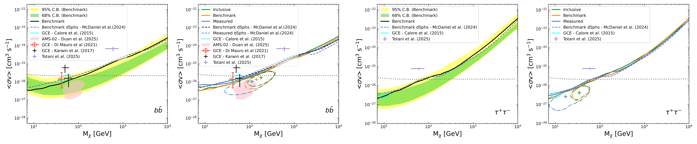
图注：\(\textbf{Left:}\) Upper limits for the cross section of annihilation as a function of the mass of the DM particle for the $b\bar{b}$ (\textbf{top}) and $\tau^{+}\tau^{-}$ (\textbf{bottom}) channels, for the benchmark sample. The green and yellow bands are the $68\%$ and $95\%$ containment bands obtained from the blank fields analysis. The dashed line represents the upper limits presented in \(\citet{AMD+24},\) while the red point, the black points, and the cyan contour refer to the mass and cross section implied by the Galactic center excess, as reported by \(\cite{DiMauro+21, Karwin+17}\) and \(\cite{Calore+15},\) respectively. The purple point refers to the halo-like emission reported by \(\cite{Totani+25}.\) The pink shaded area represents the values derived from AMS-02 antiproton data. \ \(\textbf{Right}\): Upper limits for the cross section of annihilation as a function of the mass of the DM particle in the Measured (blue), Benchmark (orange) and Inclusive (green) dSphs samples, in the $b\bar{b}$ (\textbf{top}) and $\tau^{+}\tau^{-}$ (\textbf{bottom}) channels. The dashed lines are the upper limits presented in \(\citet{AMD+24}\) for the Benchmark (black) and Measured (blue) samples. The points and dot-dashed contours are the coordinates of the point of maximum significance from the combined TS profiles of the three samples of dSphs, and their 1$\sigma$ local confidence level, see \(\S\)~\(\ref{sec:results}\) for the details.\ In all four panels, the dotted grey line is the $\sv$ for thermal relic WIMP DM as a function of $M_\chi$ \(\citep{Steigman+12}.\)
对应解读：对应“建议重点查看的图表”第4项联合 \(\langle\sigma v\
angle\)–\\(m_\\chi\\) 约束图，以及关键图表逐图导读中的图4主结果图。
入选理由：这是论文暗物质解释的核心结果图，直接给出不同湮灭道下截面随质量的上限、最佳显著性点、1σ局部置信区域、热遗迹截面线，并与银河中心超出、AMS-02反质子区域和前作AMD+24对比；同时右侧面板比较Measured、Benchmark、Inclusive三个样本，能检验本文声称的样本依赖减弱。
来源与置信度：\(arxiv_source\)；high；\(arxiv_source\) / main.tex:figure[2]
Fig04
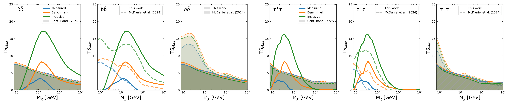
图注：Maximum TS profiles as a function of $M_\chi$ across all cross-section values for the dSphs and $97.5\%$ containment bands from the blank fields analyses, for Measured (blue), Benchmark (orange) and Inclusive (green) samples, in the $b\bar{b}$ (\textbf{top}) and $\tau^{+}\tau^{-}$ (\textbf{bottom}) channels of annihilation. The panels on the left compare the dSphs profiles (solid lines) to the containment bands (etched bands) from this work. The central panels compare the dSphs profiles from this work (solid lines) to the ones from \(\citet{AMD+24}\) (dashed lines). The panels on the right compare the containment bands, obtained from the analysis of the blank fields, from this work (etched bands) to the ones from \(\citet{AMD+24}\) (solid bands).
对应解读：对应“建议重点查看的图表”第5项局部/全局显著性比较、第6项不同样本稳健性图，以及关键图表逐图导读中的图5和图6。
入选理由：该图展示联合样本在不同 \\(M_\\chi\\) 下的最大TS剖面，并与空白场97.5% containment bands和前作结果比较，是判断显著性峰是否宽而稳定、是否超过背景随机涨落、以及改进分析链是否真的提高显著性的关键诊断图。
来源与置信度：\(arxiv_source\)；high；\(arxiv_source\) / main.tex:figure[4]
Fig06
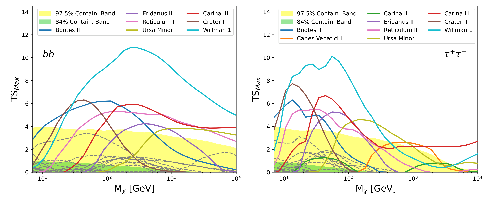
图注：Maximum TS profiles for the individual dSphs as a function of $M_\chi$ across all cross section values, for the $b\bar{b}$ (\textbf{left}) and the $\tau^{+}\tau^{-}$ (\textbf{right}) channels of annihilation. The yellow and green bands are the $97.5\%$ and $84\%$ containment bands from the analysis of the individual blank fields.
对应解读：对应“建议重点查看的图表”第3项单个矮星系TS或似然贡献分布，以及模型拟合段落中关于‘是否由单个目标主导’的诊断。
入选理由：该图给出各个单独dSph的最大TS随暗物质质量变化，并叠加个体空白场containment bands，最适合检查联合显著性是否来自多个目标弱一致累积，还是被少数异常目标支配；这直接关系到系统误差和背景污染风险。
来源与置信度：\(arxiv_source\)；high；\(arxiv_source\) / main.tex:figure[6]
Fig03
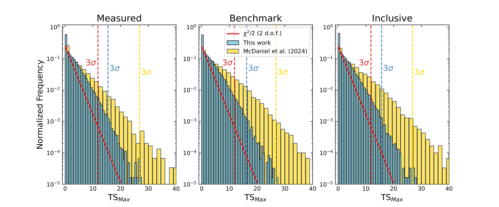
图注：TS distribution for combinations of blank fields in both the $b\bar{b}$ and $\tau^{+}\tau^{-}$ channels of annihilation for the Measured (\textbf{left}), Benchmark (\textbf{centre}) or Inclusive (\textbf{right}) samples. The blue histograms refer to the results from this work, while the yellow ones are the ones presented in \(\citet{AMD+24}.\) For reference, we report the asymptotic $\frac{1}{2}\chi^2$ (2 d.o.f.) behaviour, following Chernoff's theorem. The vertical dashed lines are the Gaussian-equivalent $3\sigma$ confidence levels (99.73\% quantile) for the $\frac{1}{2}\chi^2$ (2 d.o.f.) distribution (red), our work (blue), and \(\citet{AMD+24}\) (yellow).
对应解读：对应“建议重点查看的图表”第5项局部显著性与全局显著性比较，以及详细解读中关于试验因子和空白场校准的讨论。
入选理由：该图用空白场组合的TS分布比较本文与AMD+24，并标出3σ等效分位数，能说明全局显著性或背景涨落分布如何从经验空白场而非简单渐近公式得到，是理解试验因子校正和显著性可信度的重要图。
来源与置信度：\(arxiv_source\)；high；\(arxiv_source\) / main.tex:figure[3]
Fig05
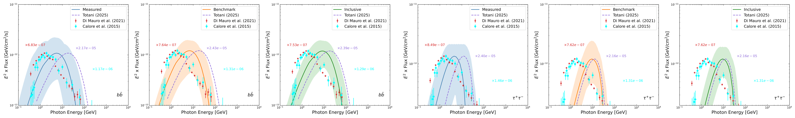
图注：Expected $\gamma$-ray emission from DM annihilation assuming the best-fit $M_\chi$ and $\sv$ for the Measured (\textbf{left}), Benchmark (\textbf{center}), or Inclusive (\textbf{right}) sample, assuming a dSph with the median $J$-factor of each sample, in the $b\bar{b}$ (\textbf{top}) and $\tau^{+}\tau^{-}$ (\textbf{bottom}) channels of annihilation. The \(\textbf{median}\) $J$-factors are $\log_{10}\bar{J}_M = 18.17$, $\log_{10}\bar{J}_B= 18.23$, and $\log_{10}\bar{J}_I = 18.23$ in the Measured, Benchmark and Inclusive sample, respectively. The shaded regions are evaluated from the 1$\sigma$ uncertainties on $M_\chi$ and $\sv$. The dashed purple line is the fit of the DM annihilation spectrum to the halo-like excess emission as presented in \(\cite{Totani+25}\) (see their Fig. 16, second panel). The red and cyan data points are the GCE emissions presented in \(\cite{DiMauro+21}\) and \(\cite{Calore+15},\) respectively. The line from \(\cite{Totani+25}\) and the data from \(\cite{DiMauro+21}\) and \(\cite{Calore+15}\) are rescaled to match the expected dSphs contribution in each panel at their peak, with the scaling factors reported on the plot in matching color.
对应解读：对应“建议重点查看的图表”第7项能谱残差或SED图，以及关键结果中与银河中心超出、halo-like emission和AMS相关偏好区域相容性的讨论。
入选理由：该图展示按最佳拟合 \\(M_\\chi\\) 与 \(\langle\sigma v\
angle\) 预测的dSph伽马射线能谱，并与银河中心超出和halo-like excess谱形比较，可检查超出是否呈现暗物质湮灭预期的宽峰谱形，而不仅是截面—质量平面上的重叠。
来源与置信度：\(arxiv_source\)；high；\(arxiv_source\) / main.tex:figure[5]
Fig01
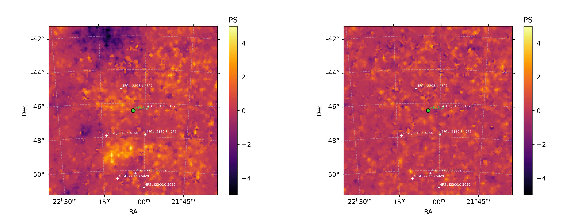
图注：PS Map for the ROI centered on \(\textit{Grus II}\) modeled following the prescriptions from \(\cite{AMD+24}\) (\textbf{left}), or the ones from this work (\textbf{right}), see \(\S\)~\(\ref{sec:updates}\) for details.
对应解读：对应“建议重点查看的图表”第2项各ROI计数图和残差图，以及详细解读中关于自适应背景建模前后局部背景/源模型变化的段落。
入选理由：虽然这不是完整的计数残差图，但它直接比较Grus II ROI中按AMD+24方法和本文方法得到的点源模型，是候选图中唯一展示背景/源建模更新空间效果的图；可用于说明自适应背景建模如何改变ROI内潜在污染源处理。
来源与置信度：\(arxiv_source\)；high；\(arxiv_source\) / main.tex:figure[1]
强相关工作
这篇工作直接处在 Fermi-LAT 矮星系暗物质搜索传统之内。应与 Fermi-LAT Collaboration 早期和中期的联合似然分析一起读，特别是那些给出 \(b\bar{b}\) 和 \(\tau^+\tau^-\) 湮灭道上限的论文。检索关键词可用 “Fermi LAT dwarf spheroidal dark matter joint likelihood”, “Milky Way dwarf spheroidal gamma-ray excess”, “J-factor uncertainty dwarf spheroidal”。
它也应与银河中心 GeV 超出和 AMS-02 反质子超出的暗物质解释对照阅读。银河中心方向信号强但背景复杂，矮星系方向背景干净但信号弱；反质子数据提供带电宇宙线通道，但强烈依赖传播模型和太阳调制。三者若在同一 \(m_\chi\) 与 \(\langle\sigma v\rangle\) 区域相交，会非常有趣；若只是各自在不同系统误差假设下“看起来接近”，则不能过度解读。检索关键词可用 “Galactic center GeV excess dark matter”, “AMS-02 antiproton excess dark matter”, “dark matter annihilation b bbar dwarf galaxies”。
相似工作：
- https://arxiv.org/abs/1503.02641
- https://arxiv.org/abs/1611.03184
- https://arxiv.org/abs/2209.00006
- https://arxiv.org/abs/2605.25586
基础理论 / 方法工作：
- https://arxiv.org/abs/hep-ph/9506380
- https://arxiv.org/abs/1009.0002
- https://arxiv.org/abs/1012.4515
相反观点 / 张力线索：
- https://arxiv.org/abs/1402.6703
- https://arxiv.org/abs/1511.02938
- https://arxiv.org/abs/1704.03910
2. Discovery of Molecular and Atomic Gas associated with HESS J1646-458 (Westerlund 1): Spatial TeV Gamma-Ray and Interstellar Proton Correspondence
- 来源：arXiv / astro-ph.HE
- 链接：https://arxiv.org/abs/2605.25467v1
- 作者：H. Sano, Y. Fukui, S. Fujimori, T. Murase, R. Z. E. Alsaberi, M. D. Filipović, G. Rowell, M. Aruga
- 评分：novelty 8/10，importance 9/10，relevance 10/10，final 10.00/10
- 推荐理由：针对HESS J1646-458/Westerlund 1的CO/HI气体研究，给出TeV壳与靶物质空间对应及强子起源证据，直接涉及TeV伽马射线、宇宙线质子和潜在PeVatron问题。
中文题目：在 HESS J1646−458／Westerlund 1 方向发现相关分子气体和原子气体：TeV 伽马射线与星际质子空间对应
做了什么：这篇论文用一氧化碳谱线和中性氢数据重新检查年轻大质量星团 Westerlund 1 周围的星际介质，目标是判断扩展 TeV 源 HESS J1646−458 是否主要来自宇宙线质子与气体的强子相互作用。作者发现视向速度约为 \(V_{\rm LSR}\sim -32\,\mathrm{km\,s^{-1}}\) 的分子云与 \(8\,\mu\mathrm{m}\) 弧状结构对应，并在 \({}^{12}\mathrm{CO}(J=3-2)\) 中看到可能由星团风吹出的空腔；同时，约 \(V_{\rm LSR}\sim -55\,\mathrm{km\,s^{-1}}\) 和 \(V_{\rm LSR}\sim -32\,\mathrm{km\,s^{-1}}\) 的云呈互补分布，中间速度成分提示云云碰撞和触发成星。更大尺度上，\(V_{\rm LSR}\sim -36\) 到 \(-23\,\mathrm{km\,s^{-1}}\) 的总星际质子柱密度与 TeV 壳状辐射有中等空间对应，气体总质量约 \(1.6\times 10^{6}\,M_\odot\)，结合缺少明亮同步辐射 X 射线，作者认为 HESS J1646−458 更支持强子起源，并估计加速宇宙线质子总能量约 \(6\times 10^{49}\,\mathrm{erg}\)。
为什么重要：Westerlund 1 是银河系内最极端的年轻大质量星团之一，也是检验星团风、超新星遗迹、集体激波能否加速宇宙线的关键实验场。HESS J1646−458 的 TeV 辐射很亮且扩展，但长期存在强子模型和轻子模型的竞争：如果伽马射线跟气体柱密度对应，就意味着目标物质分布在决定辐射形态中很重要；如果跟非热 X 射线或辐射场更相关，则轻子解释更自然。本文的重要性在于把 TeV 形态和速度分辨的分子／原子气体联系起来，给出了一个可检验的强子图像。
理论 / 观测 / 仪器方法价值：对理论而言，这篇文章给出了估算星团环境中宇宙线质子能量预算的气体基础，而不是只用平均气体密度做数量级判断。对观测而言，它强调了速度分辨的 \(\mathrm{CO}\) 和 \(\mathrm{H\,I}\) 数据在判定 TeV 源关联距离、目标气体质量和空间相关性中的价值。对方法而言，论文展示了如何把多相气体柱密度、红外尘埃／多环芳烃结构、TeV 伽马射线形态和 X 射线非探测结合起来，区分强子和轻子情景。
为什么应该关注：如果你关心银河系宇宙线起源，这篇论文值得看，因为它把“年轻大质量星团是否是宇宙线 PeVatron 或至少高能宇宙线工厂”这个问题落实到可测的气体质量、柱密度和伽马射线亮度对应上。如果你做高能观测，它提醒你单看 TeV 形态不够，必须知道沿线哪一段气体真正与源相关。如果你做星际介质或成星反馈，它也提供了 Westerlund 1 周围风泡、云云碰撞和触发成星可能同时存在的案例。
展开详细解读：文章讲解、背景、理论、重点章节、图表与相关工作
文章详细讲解
科学问题：HESS J1646−458 是围绕 Westerlund 1 的大尺度 TeV 伽马射线源。核心问题不是“有没有 TeV 辐射”，而是这些高能光子究竟来自宇宙线质子撞击星际气体产生的 \(\pi^0\) 衰变，还是来自高能电子通过逆康普顿散射辐射场产生的轻子辐射。两种机制对气体分布、X 射线同步辐射、辐射场、粒子能量预算和扩散历史的要求不同。作者把问题进一步具体化为：Westerlund 1 方向是否存在与星团物理相关的分子云和原子气体？这些气体的速度、形态、柱密度是否与 TeV 壳状结构相符？
作者怎么做：论文使用 \(\mathrm{CO}\) 谱线资料追踪分子氢，使用 \(\mathrm{H\,I}\) 数据追踪原子氢，并结合 \(8\,\mu\mathrm{m}\) 红外图像识别被远紫外辐射照亮的光解离区或尘埃／多环芳烃结构。作者重点检查多个视向速度成分，尤其是 \(V_{\rm LSR}\sim -32\,\mathrm{km\,s^{-1}}\)、\(V_{\rm LSR}\sim -55\,\mathrm{km\,s^{-1}}\) 以及中间速度 \(V_{\rm LSR}\sim -44\,\mathrm{km\,s^{-1}}\) 的气体。通过比较不同速度切片中的形态，作者寻找三类证据：与红外弧的对应、星团中心附近的空腔／膨胀壳、不同速度云之间的互补空间分布和桥接速度成分。
关键结果：第一，\(V_{\rm LSR}\sim -32\,\mathrm{km\,s^{-1}}\) 的分子云与 \(8\,\mu\mathrm{m}\) 弧状结构相符合，说明这部分气体很可能受到 Westerlund 1 的强远紫外辐射照亮，而不是无关前景或背景云的偶然投影。第二，\({}^{12}\mathrm{CO}(J=3-2)\) 在同一速度附近显示中心区域空腔状结构，估计膨胀速度约 \(5\,\mathrm{km\,s^{-1}}\)，可解释为星团风近期吹出的泡。第三，\(-55\,\mathrm{km\,s^{-1}}\) 和 \(-32\,\mathrm{km\,s^{-1}}\) 两组云之间存在互补分布，并由 \(-44\,\mathrm{km\,s^{-1}}\) 左右的中间速度气体连接，这是一类常被用来支持云云碰撞的观测特征。第四，在更大尺度上，作者将 \(V_{\rm LSR}\sim -36\) 到 \(-23\,\mathrm{km\,s^{-1}}\) 的分子和原子气体合成为总星际质子柱密度，发现其与 HESS 的 TeV 壳有中等程度空间对应。
这些结果的物理解释是：Westerlund 1 不只是视线方向上碰巧靠近 HESS J1646−458，它周围确实有大质量目标气体，且部分气体显示与星团反馈相关的形态学证据。作者给出的气体总质量约 \(1.6\times 10^{6}\,M_\odot\)，足以在合理宇宙线能量密度下产生可观 TeV 辐射。结合没有看到明亮同步辐射 X 射线这一点，强子模型比要求大量超高能电子的轻子模型更自然。作者进一步估算了加速宇宙线质子的总能量，约为 \(6\times 10^{49}\,\mathrm{erg}\)，这在星团风和多次超新星共同注入的能量预算内是可接受的。
局限和下一步：空间对应只是“中等”，并不是逐像素完美重合；视线方向的速度拥挤、\(\mathrm{CO}\)-到-\(\mathrm{H}_2\) 转换因子、\(\mathrm{H\,I}\) 自吸收、距离归属和 TeV 点扩散函数都会影响结论。云云碰撞的解释也通常依赖形态学特征，仍需要更高分辨率的谱线、致密气体示踪剂、恒星年龄梯度和动力学建模来确认。下一步最关键的是把气体模板直接放入伽马射线似然拟合，与逆康普顿模板、均匀扩散模型、各向异性扩散模型和可能的脉冲星风云贡献做定量比较。CTA、MeerKAT／ASKAP、ALMA 或更高分辨率的 \(\mathrm{CO}\) 观测都可能显著推进这个问题。
背景知识
Westerlund 1 是银河系内质量最高、最年轻的大质量星团之一，包含大量 \(\mathrm{OB}\) 星、Wolf-Rayet 星、红超巨星和可能的超新星遗迹遗存。这样的环境有强星风、密集辐射场、集体激波和未来或已经发生的超新星爆炸，因此一直被视为银河宇宙线加速的重要候选场所。与单个超新星遗迹相比，大质量星团的特别之处在于能量注入持续时间长、空间尺度大、粒子传播环境复杂。
HESS J1646−458 是 H.E.S.S. 在 Westerlund 1 周围发现的扩展 TeV 源。其角尺度明显大于普通点源，形态也不容易用单个脉冲星风云或简单壳状超新星遗迹解释。过去研究已经讨论过多种可能：星团风终端激波加速质子、多个超新星事件留下的宇宙线海、年轻脉冲星风云贡献、以及高能电子在强红外和光学辐射场中逆康普顿散射。争议的关键在于：TeV 辐射的空间模板究竟更像气体，还是更像辐射场和电子源分布。
星际气体研究在这里很重要，因为强子伽马射线辐射率近似与宇宙线质子密度和目标气体密度的乘积成正比。若宇宙线分布较平滑，那么伽马射线亮区应偏向高气体柱密度区域；若宇宙线从星团中心扩散出来，则 TeV 形态还会包含扩散半径、注入历史和能量依赖传播的信息。没有速度分辨气体数据时，沿线前景和背景云会混在一起，使气体—伽马射线相关性变得非常不可靠。
为什么现在值得重新看？一方面，HESS J1646−458 是“星团作为宇宙线加速器”这一主题中的标志性对象；另一方面，近年来 \(\gamma\) 射线天文学越来越重视用气体模板和多波段模板做定量模型比较，而不是只给出总能量预算。Westerlund 1 方向的星际介质结构复杂，包含多个速度成分，重新整理 \(\mathrm{CO}\)、\(\mathrm{H\,I}\) 和红外形态有助于判断哪些云可能与星团同距、同环境、同演化。
该领域一个常见误区是把投影重合直接等同于物理关联。银河盘面内的 TeV 源经常叠加在多层分子云和原子云上，只有速度、距离、受激发迹象、红外照亮、空腔结构或动力学桥接证据同时出现，关联才更可信。另一个误区是把“缺少 X 射线”简单理解为排除所有轻子模型；实际上磁场强度、电子冷却、吸收和源年龄都会影响 X 射线可见性。因此本文的意义在于累积多条证据支持强子图像，而不是单凭某一张相关图下结论。
基础理论 / 方法脉络
从基础物理图像看，TeV 伽马射线主要可由两类过程产生。强子过程是高能质子或原子核与星际气体中的质子碰撞，产生 \(\pi^0\)，随后 \(\pi^0\) 衰变为两个伽马光子；轻子过程则通常是高能电子逆康普顿散射星光、红外光或宇宙微波背景光，也可能包括非热轫致辐射。区分二者的关键观测线索包括气体空间分布、非热 X 射线同步辐射、辐射场强度、谱形和能量依赖形态。
本文的气体部分依赖两个基本示踪。分子氢 \(\mathrm{H}_2\) 低温且缺少永久偶极矩，通常不能在冷分子云中直接用低能转动线观测，因此用 \(\mathrm{CO}\) 作为替代示踪。\({}^{12}\mathrm{CO}(J=1-0)\) 常用于估算总分子柱密度，\({}^{12}\mathrm{CO}(J=3-2)\) 对较温暖、较致密、受激发的气体更敏感，适合识别被星团风或辐射影响的结构。\(\mathrm{H\,I}\) 的 \(21\,\mathrm{cm}\) 线则用于估算原子氢柱密度，但要注意光学厚度和自吸收。
速度信息是这项工作的核心。银河盘面内一条视线会穿过多个旋臂和云团，单靠天球坐标无法判断哪部分气体与 Westerlund 1 相关。通过局域标准静止系速度 \(V_{\rm LSR}\)，作者把气体分成不同速度成分，并比较它们与红外弧、星团中心、TeV 壳的形态关系。若某个速度成分同时被星团远紫外辐射照亮、显示风泡空腔，并与 TeV 辐射有大尺度对应，它与星团的物理关联就更有说服力。
对强子模型而言，最重要的量是目标质子柱密度和体密度。观测上先由 \(\mathrm{CO}\) 积分强度得到 \(N(\mathrm{H}_2)\)，由 \(\mathrm{H\,I}\) 亮温积分得到 \(N(\mathrm{H\,I})\)，再合成总星际质子柱密度 \(N_{\rm p}=2N(\mathrm{H}_2)+N(\mathrm{H\,I})\)。若 TeV 亮度与 \(N_{\rm p}\) 在空间上相关，就说明目标物质分布参与塑造了伽马射线形态。不过这仍与宇宙线密度分布退化：高气体低宇宙线和低气体高宇宙线都可能产生相近表面亮度。
系统误差主要来自几个方面。\(\mathrm{CO}\)-到-\(\mathrm{H}_2\) 转换因子 \(X_{\rm CO}\) 受金属丰度、激发条件、云结构和辐射场影响；\(\mathrm{H\,I}\) 若不是光学薄，柱密度会被低估；距离误差会以 \(d^2\) 进入质量和宇宙线能量估算；TeV 图像的点扩散函数会抹平真实结构；而 X 射线非探测对轻子模型的限制依赖磁场和吸收。因此，本文结论应理解为“多证据支持强子解释”，而不是已经唯一确定粒子成分。
公式与推导
第一步是把谱线观测量转换为气体柱密度。对分子气体，常用经验转换因子把 \(\mathrm{CO}\) 积分强度写成
其中 \(T_{\rm mb}(v)\) 是主波束亮温，\(v\) 是视向速度。若采用 \({}^{12}\mathrm{CO}(J=1-0)\) 的标准转换，则
这里 \(N(\mathrm{H}_2)\) 是分子氢柱密度，\(X_{\rm CO}\) 是 \(\mathrm{CO}\)-到-\(\mathrm{H}_2\) 转换因子。这个关系假设云团整体上满足经验标定，局部激发和光学厚度变化被吸收到 \(X_{\rm CO}\) 的系统误差中。
第二步是估算原子氢柱密度。在光学薄近似下，\(21\,\mathrm{cm}\) 线给出
其中 \(T_{\rm b}(v)\) 是 \(\mathrm{H\,I}\) 亮温，速度积分通常以 \(\mathrm{km\,s^{-1}}\) 为单位。若 \(\mathrm{H\,I}\) 光学深度不可忽略，则该式低估真实柱密度，这是强子能量预算中的重要系统误差。
第三步是合成强子相互作用所需的目标质子柱密度：
其中系数 \(2\) 来自每个 \(\mathrm{H}_2\) 分子含有两个质子。实际质量估算还可写为
这里 \(\mu\) 是包含氦和重元素修正的平均质量因子，\(m_{\rm H}\) 是氢原子质量，\(d\) 是距离，\(\Omega\) 是积分立体角，\(N_{\rm H}\) 是区域平均氢核柱密度。论文给出的 \(M_{\rm gas}\sim 1.6\times 10^6\,M_\odot\) 就属于这类计算。
第四步是连接气体和强子伽马射线发射。若宇宙线质子谱为 \(n_{\rm CR}(E_{\rm p})\)，气体数密度为 \(n_{\rm H}\)，则伽马射线体发射率可概念性写成
其中 \(c\) 是光速，\(\sigma_{pp}\) 是质子—质子非弹性碰撞截面，\(F_\gamma\) 描述单次碰撞产生伽马光子的能谱分布。该式说明，若宇宙线密度变化不剧烈，伽马射线亮度应随 \(n_{\rm H}\) 或柱密度增强。
第五步是从体发射率得到可观测通量。对距离 \(d\) 处的源，积分伽马射线通量近似为
其中 \(E_0\) 是能量阈值，\(dV\) 是发射体积元。若把目标气体质量和平均宇宙线能量密度合并，通量就与 \(M_{\rm gas}/d^2\) 和宇宙线增强因子近似成正比。
第六步是用能量预算做数量级检验。若 \(W_{\rm p}\) 是高能质子总能量，质子能量损失时间可近似写为
其中 \(\kappa\) 是非弹性碰撞中进入次级粒子的有效能量比例。伽马射线光度可粗略表示为
其中 \(\eta_\gamma\) 是进入所考虑伽马能段的效率因子。因此
论文估计 \(W_{\rm p}\sim 6\times 10^{49}\,\mathrm{erg}\)，含义是 Westerlund 1 只需把星风和超新星机械能的一小部分转为高能质子，就可能解释 TeV 辐射。
第七步是理解轻子模型的 X 射线约束。高能电子在磁场中产生同步辐射，在光子场中产生逆康普顿辐射，两者功率比近似为
其中 \(U_B\) 是磁场能量密度，\(U_{\rm rad}\) 是辐射场能量密度，\(B\) 是磁场强度。若 TeV 全由电子逆康普顿产生而 \(B\) 不太低，通常应伴随可观非热 X 射线；论文提到缺少明亮同步辐射 X 射线，因此对简单轻子模型不利。
第八步是空间相关性的统计表达。若把 TeV 表面亮度图记为 \(G_i\)，把气体模板记为 \(N_i\)，在像素 \(i\) 上可用相关系数诊断
其中 \(\bar{G}\) 和 \(\bar{N}\) 是区域平均值。论文表述为“中等空间对应”，读者应理解为形态支持强子解释，但仍需要考虑点扩散函数、背景扣除、模板选择和宇宙线扩散导致的偏移。
模型拟合 / 应用方法
这类工作的第一层拟合不是伽马射线谱拟合，而是气体速度成分的归属和柱密度重建。观测量包括 \(\mathrm{CO}\) 数据立方中的亮温 \(T_{\rm mb}(l,b,v)\)、\(\mathrm{H\,I}\) 亮温 \(T_{\rm b}(l,b,v)\)、红外表面亮度和 TeV 显著性图。作者通过选取特定 \(V_{\rm LSR}\) 区间，比较不同速度切片的形态，识别哪些云更可能与 Westerlund 1 有物理联系。这里的“模型”更多是运动学和形态学模型，而非单一解析函数。
参数估计中最关键的是气体质量、柱密度、速度范围、膨胀速度和宇宙线质子能量。气体质量对距离 \(d\)、\(X_{\rm CO}\)、\(\mathrm{H\,I}\) 光学厚度修正和积分区域都敏感。膨胀速度约 \(5\,\mathrm{km\,s^{-1}}\) 来自谱线速度结构和空腔形态的解释，但如果空腔只是投影缺口或由多云叠加产生，则动力学年龄和能量估计都会改变。宇宙线能量 \(W_{\rm p}\) 的估计则依赖 TeV 光度、目标气体密度和质子谱假设。
若做更严格的伽马射线模板拟合，通常会构建多个空间模板：气体柱密度模板、以 Westerlund 1 为中心的径向扩散模板、逆康普顿辐射场模板、点源或脉冲星风云模板、以及各向同性或银河弥散背景模板。似然可写成泊松计数似然，比较不同模板组合的检验统计量。残差图非常关键：如果用气体模板后 TeV 壳上仍有系统性正残差，说明宇宙线分布、距离归属或额外源成分没有建好；如果残差主要沿气体高柱密度区域消失，则强子图像更稳健。
主要退化关系有三类。第一是气体密度与宇宙线密度的退化：同一伽马射线亮度可以由高气体低宇宙线或低气体高宇宙线产生。第二是距离与能量的退化：通量固定时，距离越大，光度和所需 \(W_{\rm p}\) 越大。第三是轻子模型中磁场与电子数的退化：较低磁场可以压低 X 射线同步辐射，使逆康普顿模型更难被 X 射线非探测排除。因此，论文的强子解释需要与合理磁场、辐射场和电子冷却模型一起比较。
系统误差诊断应包括不同速度积分范围下的 \(N_{\rm p}\) 图是否稳定、不同 \(X_{\rm CO}\) 取值下质量和 \(W_{\rm p}\) 是否仍合理、\(\mathrm{H\,I}\) 自吸收修正是否改变高柱密度位置、TeV 图像卷积到气体图分辨率后相关性是否增强，以及排除亮点源或背景区域后结论是否改变。实际应用上，这篇论文给后续 CTA 或 H.E.S.S. 再分析提供了可用气体模板，也为星团宇宙线扩散模型提供了目标物质分布。
重点章节 / 结果段落怎么读
数据和样本部分应重点看作者使用了哪些 \(\mathrm{CO}\) 和 \(\mathrm{H\,I}\) 数据集、角分辨率和速度分辨率是多少，以及各数据集是否足以分辨 Westerlund 1 周围的空腔、弧状云和大尺度 TeV 壳。读者要特别注意 \({}^{12}\mathrm{CO}(J=3-2)\) 与较低激发 \(\mathrm{CO}\) 线的角色差异：前者更强调受激发气体和反馈结构，后者更适合总分子质量。
速度结构和形态关联部分是论文的核心。应按速度切片阅读，先看 \(V_{\rm LSR}\sim -32\,\mathrm{km\,s^{-1}}\) 云与 \(8\,\mu\mathrm{m}\) 弧的对应，再看中心空腔和估计膨胀速度，最后看 \(-55\,\mathrm{km\,s^{-1}}\)、\(-44\,\mathrm{km\,s^{-1}}\)、\(-32\,\mathrm{km\,s^{-1}}\) 三者之间的互补分布和桥接关系。这一部分决定了“气体是否真的与 Westerlund 1 相关”。
总质子柱密度与 TeV 伽马射线比较部分决定强子解释的力度。读者应看作者如何把 \(\mathrm{CO}\) 和 \(\mathrm{H\,I}\) 合成 \(N_{\rm p}\)，选取哪个速度范围，是否把图像平滑到 H.E.S.S. 分辨率，TeV 壳与气体高柱密度区域是重合、偏移还是只在部分区域对应。
能量预算和辐射机制讨论部分应关注两个量：气体质量约 \(1.6\times 10^{6}\,M_\odot\) 和宇宙线质子能量约 \(6\times 10^{49}\,\mathrm{erg}\)。判断强子模型是否合理，不能只看数值大小，还要看相对于 Westerlund 1 的星风机械能、多次超新星能量和年龄是否合适。
稳健性和局限讨论应重点看作者如何处理前景／背景云混淆、\(X_{\rm CO}\) 不确定性、\(\mathrm{H\,I}\) 光学厚度、距离归属以及轻子模型可能性。如果论文没有完整模板似然拟合，读者应把它理解为强有力的多波段形态学证据，而不是最终的粒子成分判决。
建议重点查看的图表
-
\(\mathrm{CO}\) 速度积分图：重点看 \(V_{\rm LSR}\sim -32\,\mathrm{km\,s^{-1}}\) 的分子云是否真的沿 \(8\,\mu\mathrm{m}\) 弧分布，而不是只在低分辨率下看似重合。
-
\({}^{12}\mathrm{CO}(J=3-2)\) 中心区域图：重点看 Westerlund 1 附近是否存在闭合或半闭合的空腔结构，以及谱线速度上是否支持约 \(5\,\mathrm{km\,s^{-1}}\) 的膨胀解释。
-
位置—速度图：重点看 \(-55\,\mathrm{km\,s^{-1}}\) 和 \(-32\,\mathrm{km\,s^{-1}}\) 云之间是否有连续或桥接的中间速度成分 \(V_{\rm LSR}\sim -44\,\mathrm{km\,s^{-1}}\)。这是云云碰撞解释的重要证据。
-
云互补分布图：重点看两个速度成分的边界是否互相嵌合，是否需要人为平移才能对齐；若需要平移，平移量和碰撞时间尺度是否合理。
-
总质子柱密度 \(N_{\rm p}\) 与 TeV 等值线叠加图：重点看 HESS 壳状结构的亮区是否落在高 \(N_{\rm p}\) 区域，哪些区域不对应，以及这些不对应区域是否可能来自宇宙线扩散或未计入气体。
-
气体质量和宇宙线能量预算表：重点看质量积分区域、采用的距离和 \(X_{\rm CO}\)，以及 \(W_{\rm p}\) 是否对这些假设线性或平方依赖。
-
多波段对比图：重点看 TeV、红外、\(\mathrm{CO}\)、\(\mathrm{H\,I}\)、X 射线限制之间的相对位置。读图时不要把红外弧自动当成冲击波壳，它也可能主要是光解离区表面。
关键图表逐图导读
图 1：建议先读全局多波段定位图。横轴和纵轴通常是银河经度 \(l\) 与银河纬度 \(b\)，图上应叠加 Westerlund 1 的位置、HESS J1646−458 的 TeV 等值线以及红外或气体背景。读这张图的目的是建立尺度感：TeV 源相对星团有多大，壳状或弥散结构是否以星团为中心。陷阱是 TeV 图像的角分辨率较低，细小云结构不能直接一一对应。
图 2：重点看不同 \(V_{\rm LSR}\) 区间的 \(\mathrm{CO}\) 积分强度图。坐标仍为天球位置，颜色或灰度表示 \(W_{\rm CO}\)，等值线可能是 \(8\,\mu\mathrm{m}\) 或 TeV 辐射。关键结论是 \(-32\,\mathrm{km\,s^{-1}}\) 成分与红外弧更相关，暗示被 Westerlund 1 的远紫外辐射照亮。读图陷阱是速度切片宽度会影响结构显著性，过宽会混入无关气体，过窄会打碎真实云。
图 3：中心区域的 \({}^{12}\mathrm{CO}(J=3-2)\) 图应显示空腔状或壳状结构。坐标轴为空间位置，颜色为高激发 \(\mathrm{CO}\) 强度，可能叠加星团位置或红外轮廓。若图中中心低强度区被较强 \(\mathrm{CO}\) 环绕，且速度切片显示两侧速度偏移，就支持风泡解释。陷阱是空腔也可能由背景扣除、激发条件差异或多云投影造成，必须结合位置—速度图。
图 4：位置—速度图是判断动力学结构的关键。横轴可能是沿某条切线的角距离，纵轴是 \(V_{\rm LSR}\)，颜色为 \(\mathrm{CO}\) 亮温。若看到两组速度成分之间有中间速度桥，且空间上连接 \(-55\) 与 \(-32\,\mathrm{km\,s^{-1}}\) 云，就支持云云碰撞或相互作用。陷阱是银河盘面速度拥挤会产生偶然桥接，需与空间互补性一起看。
图 5：互补分布图通常把两个速度成分用不同颜色显示。读者应看两组云的凹凸边界是否吻合，是否围绕 Westerlund 1 或年轻恒星分布。主要结论是两组云可能发生过相互作用，并可能触发 Westerlund 1 或其周围成星。陷阱是互补性有主观判断成分，最好检查作者是否给出平移量、尺度和碰撞时间估计。
图 6：总星际质子柱密度 \(N_{\rm p}\) 与 TeV 伽马射线叠加图最直接服务于强子解释。坐标为 \(l\) 和 \(b\)，颜色为 \(N_{\rm p}\)，等值线为 TeV 显著性或通量。应看高 \(N_{\rm p}\) 区域是否沿 TeV 壳分布，以及 TeV 亮区是否避开低气体柱密度区域。陷阱是若未按 HESS 点扩散函数卷积，气体图的细节会被过度解读。
图 7：如果有谱能量分布或能量预算图，横轴通常是能量，纵轴是 \(E^2 dN/dE\) 或通量，模型线区分强子和轻子贡献。强子模型应能在合理 \(W_{\rm p}\) 下解释 TeV 数据，同时不违反 X 射线上限。陷阱是缺少 GeV 数据或低能 TeV 谱点时，质子谱指数和截止能会高度退化。
论文原图 / 可嵌入图片
（未提供 verified figure；为避免编造图片链接，本节只在能确认官方图片 URL 或成功提取论文原图时嵌入图片。）
强相关工作
这篇工作与 H.E.S.S. 对 Westerlund 1 周围扩展 TeV 辐射的发现和后续解释直接相关。早期高能研究主要确认 HESS J1646−458 的存在、形态和光谱，并讨论它是否来自星团风、超新星遗迹、脉冲星风云或弥散宇宙线。本文的推进点在于把速度分辨的 \(\mathrm{CO}\) 和 \(\mathrm{H\,I}\) 目标气体纳入讨论，使强子模型从“能量上可能”变为“空间上也有一定支持”。建议检索关键词包括 “Westerlund 1 HESS J1646-458 hadronic”, “Westerlund 1 molecular clouds CO HI”, “massive star clusters cosmic ray acceleration”。
它也应放在更广泛的“大质量星团作为宇宙线加速器”背景中阅读，例如 Cygnus Cocoon、Westerlund 2、30 Doradus C、NGC 3603 等对象。相似工作的共同问题是：星团环境的机械能足够大，但粒子加速位置、逃逸时间、扩散系数和目标气体分布很难同时约束。与本文可能存在张力的观点包括轻子逆康普顿模型、未解析源群模型、以及 TeV 形态由扩散而非气体主导的模型。检索时可用 “Cygnus Cocoon cosmic rays”, “stellar cluster gamma rays leptonic hadronic”, “cosmic ray diffusion around massive clusters”。
相似工作：
- https://arxiv.org/abs/1203.1147
- https://arxiv.org/abs/1101.2555
- https://arxiv.org/abs/1609.08671
基础理论 / 方法工作：
- https://arxiv.org/abs/astro-ph/0605581
- https://arxiv.org/abs/astro-ph/0610631
- https://arxiv.org/abs/0803.0682
相反观点 / 张力线索：
- https://arxiv.org/abs/1009.3012
- https://arxiv.org/abs/1204.1975
3. Discovery of Short-Term γ-Ray Pulsed Radiation Variations Following a Glitch in PSR J0205+6449
- 来源：arXiv / astro-ph.HE
- 链接：https://arxiv.org/abs/2605.25205v1
- 作者：Wen-Tao Ye, Ming-Yu Ge, Shi-Jie Zheng, Xiang Ma, Yu-Jia Zheng, Han-Long Peng, Xue-Zhi Liu, Li-Ming Song
- 评分：novelty 9/10，importance 8/10，relevance 10/10，final 10.00/10
- 推荐理由：报告Fermi-LAT中PSR J0205+6449 glitch后γ射线脉冲形态显著变化，声称首次γ射线脉冲星glitch相关辐射变化；对脉冲星磁层高能辐射非常重要。
中文题目：一次脉冲星自转突变后，PSR J0205+6449 的短期伽马射线脉冲辐射发生了可测变化
做了什么：这篇文章用 Fermi/LAT 长时标伽马射线数据，追踪了年轻自转供能脉冲星 PSR J0205+6449 在 MJD 54904 附近一次 glitch 之后的脉冲轮廓演化。作者发现，glitch 后伽马射线双峰轮廓不是立即完全恢复到长期平均状态：两个峰的振幅比先有上升迹象，随后双峰相位间隔在 MJD 54940--55000 期间出现大于 \(5\sigma\) 的显著减小，再之后振幅比又有约 \(3\sigma\) 的上升并伴随边缘性的通量变化，最后回到正常状态。论文把这解释为 glitch 触发的磁层重构，可能源于极冠附近局域壳层破裂和弹性位移。这是首个与 glitch 相关的伽马射线脉冲辐射变化显著探测。
为什么重要：过去与 glitch 相关的辐射变化主要在射电波段看到，而伽马射线通常来自更外层的磁层加速区。若 glitch 能在伽马射线脉冲形状中留下短期印记，就说明中子星内部角动量重分配、壳层应力释放和外磁层电流结构之间存在可观测耦合。这会把 glitch 研究从纯计时问题推进到内部—磁层耦合问题。
理论 / 观测 / 仪器方法价值：这项工作的价值不只在于发现了一个个例，而在于给出了一个可复用的分析框架：围绕已知 glitch 历元，在有限光子数条件下做相位折叠、峰形参数化、分时段轮廓比较、显著性评估和系统误差检查。对理论而言，它约束了 glitch 后磁层重构的时间尺度和几何幅度；对观测而言，它提示 Fermi/LAT 档案数据中可能还有更多弱但物理上关键的 glitch 相关高能轮廓变化。
为什么应该关注：如果你研究脉冲星磁层、glitch、伽马射线数据分析或中子星内部物理，这篇文章值得看，因为它把一个通常被视作“自转计时事件”的 glitch 与外磁层辐射几何变化直接联系起来。即使你对 PSR J0205+6449 本身不感兴趣，文中关于双峰间隔、峰振幅比和分段显著性的处理，也是一类低光子统计高能脉冲轮廓研究的实用案例。
展开详细解读：文章讲解、背景、理论、重点章节、图表与相关工作
文章详细讲解
科学问题：自转供能脉冲星的脉冲轮廓通常很稳定，特别是在伽马射线波段，轮廓常被看作外磁层几何和粒子加速区的长期投影。但 glitch 是突然的自转频率增加，通常被认为与中子星内部超流涡旋解钉扎或壳层应力释放有关。核心问题是：这种主要发生在星体内部或壳层的动力学事件，能否在伽马射线辐射区产生可观测影响？更具体地说，glitch 之后伽马射线脉冲轮廓的峰强比、峰间相位分离和通量是否会在几十到几百天尺度上偏离长期平均状态。
作者怎么做：论文选取 PSR J0205+6449，这是一个位于 3C 58 超新星遗迹中的年轻高能脉冲星，Fermi/LAT 对其有长期连续监测。作者围绕 MJD 54904 的 glitch，将伽马射线事件按精确计时解折叠到自转相位，并构造不同时间窗内的脉冲轮廓。随后用双峰轮廓的形态量来描述变化，重点包括两个伽马射线峰的振幅比、两个峰的相位间隔，以及可能的脉冲通量变化。由于伽马射线光子数有限，作者不是只看肉眼轮廓，而是通过参数化峰形、分段比较和显著性评估来判断变化是否超过统计起伏。
关键结果：glitch 后的演化呈现连续但非单调的状态变化。首先，在 MJD 54905--54940 期间，两个脉冲峰的振幅比有上升迹象，但显著性不如后续结果强。接着，在 MJD 54940--55000 期间，双峰相位间隔显著减小，报告显著性超过 \(5\sigma\)，这是全文最强的观测证据。随后在 MJD 55000--55160 期间，振幅比再次升高，显著性约为 \(3\sigma\)，同时伴随边缘性的通量变化。最终，脉冲辐射形态回到长期平均状态。这样的时间序列比单一异常点更有物理说服力，因为它暗示磁层经历了重构、调整和恢复，而不是某个时间窗偶然的统计波动。
物理解释：作者倾向于把这种伽马射线轮廓变化解释为 glitch 触发的磁层重构。一个可能图像是，极冠附近的局域壳层破裂和弹性位移改变了表面磁场边界条件或极冠电流分布，从而扰动了开放磁力线区的电流闭合与电场屏蔽。由于伽马射线辐射峰主要由外磁层中相对论粒子束的几何 caustic 效应决定，哪怕辐射区位置或束流结构发生很小变化，也可能在观测相位上表现为峰间距和峰强比的变化。
局限和下一步：这仍是单个源、单次 glitch 相关事件的结果，不能直接推出所有伽马射线脉冲星都会有类似响应。分段时间窗的选择、LAT 背景建模、星历相位连接、峰形函数假设和 trials factor 都会影响显著性解释。下一步应在更多有精确 glitch 星历的年轻伽马射线脉冲星中做统一搜索，并将轮廓变化与 glitch 幅度、恢复时间尺度、制动指数、X 射线或射电变化进行联合比较。理论上也需要把壳层位移、极冠电流扰动和外磁层辐射几何放进同一个时变模型，而不是只做定性归因。
背景知识
研究对象是自转供能脉冲星 PSR J0205+6449。它位于超新星遗迹 3C 58 中，是一颗年轻、能量损失率高的中子星，也是 Fermi/LAT 可探测到伽马射线脉冲的典型高能脉冲星之一。年轻脉冲星往往更容易发生 glitch，因为其内部超流、壳层应力和快速自转演化仍然活跃。PSR J0205+6449 的高能辐射使它成为研究内部动力学是否能影响外磁层辐射的合适对象。
glitch 的传统图像来自脉冲星计时：观测上表现为自转频率 \(\nu\) 的突然增加，有时还伴随自转频率导数 \(\dot{\nu}\) 的变化以及随后指数或准指数恢复。理论上常见解释包括内壳层超流涡旋突然解钉扎、角动量转移到正常组分，以及壳层破裂改变转动惯量或外磁层扭矩。过去几十年，glitch 研究主要依靠射电和 X 射线计时，辐射状态变化虽然被报道过，但不是每次 glitch 都有，也很少能在伽马射线脉冲轮廓中得到明确检测。
伽马射线脉冲辐射的背景与射电不同。射电通常被认为来自较低高度的磁极附近区域，尽管具体高度和发射机制仍有争议；Fermi 能段的伽马射线脉冲则常被解释为来自外磁层、狭缝隙、外间隙或电流片附近的加速区。双峰伽马射线轮廓主要反映相对论粒子沿弯曲磁力线辐射时的几何堆积，即 caustic。正因为发射区可能远离恒星表面，glitch 是否能快速影响伽马射线辐射并不是显然的。
这个问题现在值得重新看，原因是 Fermi/LAT 已积累了超过十余年的均匀全天巡天数据，许多年轻脉冲星的 glitch 历元也已有较好星历。早期数据量不足时，分时段伽马射线轮廓变化很难与统计噪声区分；现在长基线数据允许把 glitch 前的长期平均轮廓作为基准，再看 glitch 后几十到几百天内是否存在系统偏离。同时，高能计时工具、光子权重方法和轮廓似然方法也比 Fermi 早期更成熟。
该领域常见误区之一，是把“脉冲星平均轮廓稳定”理解为“磁层完全不响应内部事件”。实际上，稳定只说明大部分时间可观测几何和电流结构在统计上稳定，不排除短暂扰动。另一个误区是把通量不显著变化等同于辐射区没有变化；对于双峰 caustic 轮廓，峰间隔和峰强比可能比总通量更敏感。还有一个误区是把某个分段的 \(3\sigma\) 偏离视为确定发现；在多时间窗、多参数搜索中，必须考虑选择效应和试验因子，而这也是阅读本文时应特别关注的地方。
基础理论 / 方法脉络
从基本物理图像看，自转供能脉冲星的能量来源是旋转能损失。中子星强磁场与快速自转诱导电场，抽取带电粒子并形成磁层。开放磁力线区域中的粒子被加速到相对论能量，通过曲率辐射、同步辐射或逆康普顿过程产生高能光子。对于 Fermi/LAT 观测到的 GeV 脉冲，常用解释是曲率辐射或电流片附近的高能辐射，脉冲相位由发射区几何、相对论传播效应和观测视线共同决定。
脉冲轮廓不是简单的“灯塔亮度随时间变化”，而是发射束在自转相位上的投影。若辐射来自外磁层，光行时延迟、相对论 aberration 和磁力线曲率会把不同位置的光子堆积到相近相位，形成尖锐峰。两个伽马射线峰的相位间隔可以粗略反映视线穿过两个 caustic 结构的几何距离，两个峰的振幅比则反映不同磁层区域的粒子密度、加速电场、辐射效率或束流投影面积。
本文的关键假设是 glitch 后可能发生了短期磁层重构，而这种重构足以改变伽马射线脉冲形态。这里的“重构”不一定意味着全球偶极场强发生大变化，更可能是开放磁通边界、电流分布、局域电场屏蔽或发射区位置发生小幅调整。由于 caustic 峰对几何很敏感，小的发射高度或磁方位变化就可能导致峰间相位分离变化，而总通量可以只发生弱变化或不显著变化。
观测方法的基础是相位折叠。每个 LAT 光子有到达时刻、能量和方向，需要经过太阳系质心改正，再用脉冲星计时解计算自转相位。为了提高信噪比，通常还要根据源模型给光子赋予来自目标脉冲星的概率权重。之后在不同时间窗中构造加权相位直方图或未分箱相位似然，并用峰形模型测量峰位置、宽度和振幅。
常见退化和系统误差包括：峰宽与峰间距的退化、背景水平与峰振幅的退化、时间窗选择与显著性的退化、星历误差与相位漂移的混淆，以及 LAT 有效面积或背景源模型变化带来的通量系统误差。对于 PSR J0205+6449 这类相对较弱但长期可积累的源，单个时间窗中的光子统计有限，因此不能只依赖直方图外观；应同时检查轮廓参数置信区间、残差分布和不同数据选择下结果是否稳定。
公式与推导
第一步是从自转能损失出发。若中子星转动惯量为 \(I\)，自转角频率为 \(\Omega=2\pi\nu\)，则旋转能为
这里 \(\nu\) 是自转频率。自转供能脉冲星的高能辐射最终来自 \(E_{\rm rot}\) 的损失，glitch 则表现为 \(\nu\) 的突然变化。
第二步是能量损失率。若忽略 \(I\) 的长期变化，则
由于正常脉冲星有 \(\dot{\nu}<0\)，常写自转能损失率为 \(\dot{E}= -4\pi^2 I\nu\dot{\nu}\)。这个量给出可用于磁层粒子加速和辐射的能量预算。
第三步描述 glitch 的计时扰动。一个常用相位模型可写成
其中 \(\phi(t)\) 是自转相位，\(t_0\) 是参考时刻，\(\Delta\phi_{\rm g}(t)\) 是 glitch 贡献。若相位模型不正确，折叠后的伽马射线峰会被人为展宽或偏移，因此准确星历是轮廓变化研究的基础。
第四步把 glitch 写成频率阶跃和恢复项。简化形式为
其中 \(t_{\rm g}\) 是 glitch 历元，\(\Delta\nu_{\rm p}\) 和 \(\Delta\dot{\nu}_{\rm p}\) 是永久变化项，\(\Delta\nu_i\) 与 \(\tau_i\) 描述暂态恢复。本文关注的不是仅仅拟合这些计时项，而是问这些项对应的物理扰动是否还改变了辐射轮廓。
第五步是相位折叠与加权轮廓。对第 \(j\) 个光子，其相位为
其中 \(t_j\) 是经过质心改正的到达时刻。若使用光子权重 \(w_j\)，相位区间 \(k\) 的加权计数可写为
这里 \(w_j\) 近似表示该光子来自目标脉冲星而不是背景的概率，有助于在低信噪比下提高轮廓参数测量精度。
第六步是轮廓参数化。双峰轮廓可用周期函数表示，例如
其中 \(B\) 是背景或非脉冲成分，\(A_1\) 与 \(A_2\) 是两个峰的振幅，\(\mu_1\) 与 \(\mu_2\) 是峰相位，\(\sigma_1\) 与 \(\sigma_2\) 是峰宽，\(G\) 可以是周期高斯、Lorentzian 或其他经验峰形。本文讨论的振幅比和峰间距可由这些参数导出。
第七步定义两个核心可观测量。峰振幅比与峰间相位分离可写为
\(R_{12}\) 对两侧 caustic 的相对亮度敏感，\(\Delta\) 对辐射几何和发射高度变化敏感。本文报告的主要异常就是这些量在 glitch 后不同时间窗中偏离长期平均值。
第八步是似然或拟合统计量。若采用分箱 Poisson 似然，模型预测第 \(k\) 个相位 bin 的计数为 \(m_k(\boldsymbol{\theta})\)，观测为 \(n_k\)，则
参数向量 \(\boldsymbol{\theta}\) 包括 \(B,A_1,A_2,\mu_1,\mu_2,\sigma_1,\sigma_2\) 等。低计数情况下，Poisson 似然比简单的 \(\chi^2\) 更合适。
第九步是显著性诊断。若比较正常轮廓模型 \({\cal M}_0\) 与允许某个参数变化的模型 \({\cal M}_1\)，可定义
在满足 Wilks 定理且额外自由度为一个的近似下，显著性可估为 \(S\simeq\sqrt{TS}\)。本文中大于 \(5\sigma\) 的峰间距变化，物理上意味着轮廓几何参数的偏移很难由单纯统计涨落解释，但仍需结合时间窗选择和系统误差判断。
第十步连接到磁层几何尺度。若发射高度变化为 \(\delta r\)，相位偏移的数量级可写成
这里 \(R_{\rm LC}\) 是光柱半径，\(c\) 是光速。这个关系只是量级估计，但它说明为什么外磁层中小幅几何位移可能转化为可测的峰相位变化。
模型拟合 / 应用方法
这类分析首先要拟合或采用可靠的脉冲星计时模型。对 glitch 前后数据，计时解必须包含自转频率 \(\nu\)、频率导数 \(\dot{\nu}\)、可能的高阶导数以及 glitch 阶跃和恢复项。若星历不能相位连接，伽马射线折叠轮廓会发生人工涂抹，峰宽变大、峰位偏移，进而伪装成辐射变化。因此，阅读本文时应先看作者如何处理 glitch 后不同阶段的计时解，以及是否验证相位漂移不足以解释双峰间隔变化。
第二层拟合是伽马射线源模型和光子权重。LAT 数据包含弥散背景、邻近点源、脉冲星风云或超新星遗迹相关辐射，以及仪器响应函数带来的能量和方向依赖。常见做法是在选定能段和视场中建立空间—能谱模型，给每个光子计算来自 PSR J0205+6449 的概率权重。这里的系统误差会直接影响峰振幅比和通量，但对峰相位间隔的影响通常较小；不过如果背景随时间或数据选择变化，也可能改变低显著性振幅变化的解释。
第三层是脉冲轮廓模型拟合。作者关心的量不是单纯总光子数，而是两个峰的相对振幅和相位位置。峰形函数选择会造成退化：若峰较宽或相互部分重叠，\(A_1\)、\(A_2\)、\(\sigma_1\)、\(\sigma_2\) 和 \(B\) 之间会相互补偿；若固定峰宽，峰位置变化可能被高估或低估；若允许太多自由度，低计数时间窗又可能过拟合。因此合适做法是用长期平均轮廓约束基础形状，再在 glitch 后时间窗中只释放物理上关心的少数参数，并通过模拟或替代时间窗检验稳健性。
参数估计可以采用最大似然、轮廓似然、MCMC 或 bootstrap。关键不是只报告最优值，而是给出 \(R_{12}\) 和 \(\Delta\) 的置信区间，以及它们相对 glitch 前基准的偏移显著性。若显著性来自多个时间窗中的一个最极端结果，应该说明是否校正了 trials factor。本文最强结果是峰间距在 MJD 54940--55000 期间大于 \(5\sigma\) 的减小，这比约 \(3\sigma\) 的振幅比变化更应被视为主证据。
残差诊断也很重要。好的轮廓拟合应在两个峰和桥区都没有系统性残差；若残差集中在某个峰的一侧，可能表示峰位移动；若两个峰整体同向偏移，可能是相位零点或星历问题；若只有峰顶高度变化但峰翼不变，才更像振幅变化。通量拟合还要看能谱模型是否固定、背景归一化是否随时间重新拟合，以及太阳活动或 LAT 观测模式是否可能影响有效曝光。
模型可能失败的方式包括：glitch 后的时间窗划分恰好选中了统计涨落；某个未建模背景源或弥散背景误差造成表观通量变化；计时噪声没有被充分吸收，导致相位结构畸变；经验双峰模型不能表达真实轮廓的微小形态变化。实际应用中，若要把这套方法推广到其他脉冲星，最好预先定义搜索窗口、轮廓参数和显著性判据，避免事后挑选最显著区间。
重点章节 / 结果段落怎么读
数据与样本部分应首先看。读者需要确认作者选用的 Fermi/LAT 数据时间范围、能段、视场半径、事件类型、仪器响应函数和背景模型。对 PSR J0205+6449 这样处在复杂环境中的源，源区选择和背景处理会影响通量与振幅测量。还要看 glitch 历元 MJD 54904 的来源，以及 glitch 前后星历是否足以支持相位折叠。
计时与相位折叠方法部分是第二个重点。这里要看作者如何把 LAT 光子转换到脉冲相位，是否使用了 radio/X-ray/gamma-ray ephemeris，是否处理了 glitch 后恢复项和 timing noise。任何关于峰间距变化的结论都依赖相位系统稳定；如果计时模型在某些窗口外推过长，读者应更谨慎。
轮廓建模与分时段分析部分是全文技术核心。建议重点看时间窗如何定义，峰振幅比和峰间距如何测量，长期平均轮廓如何作为参考，以及显著性如何计算。特别要区分“看起来变化”和“参数相对基准显著偏移”这两件事。
主结果部分应围绕三个阶段阅读：MJD 54905--54940 的初始振幅比上升迹象，MJD 54940--55000 的大于 \(5\sigma\) 峰间距减小，以及 MJD 55000--55160 的约 \(3\sigma\) 振幅比再次上升和边缘通量变化。读者应看这些阶段是否连续构成一个恢复序列，还是由几个相互独立的异常点组成。
讨论部分要看作者如何把观测量映射到物理图像。论文提出局域壳层破裂和极冠附近弹性位移触发磁层重构，这是合理但仍偏定性的解释。读者应检查作者是否排除了仪器、背景、计时和统计选择效应，并看其解释是否能自然给出几十到几百天的恢复时间尺度。
建议重点查看的图表
-
glitch 前后长期光变曲线或脉冲通量随时间图：重点看 MJD 54904 附近是否有总通量突变、缓变或仅边缘偏离，并检查误差条是否支持“通量变化”这一较弱结论。
-
不同时间窗的折叠伽马射线脉冲轮廓：重点看两个峰的位置、峰顶高度和桥区背景。读图时不要只看直方图峰高，因为 binning 可能影响视觉印象；应结合模型曲线和误差。
-
峰振幅比 \(R_{12}\) 随时间演化图：重点看 glitch 前基准均值、glitch 后每个窗口的偏移和置信区间。约 \(3\sigma\) 的阶段应检查是否受到多重试验影响。
-
双峰相位间隔 \(\Delta\) 随时间演化图：这是最关键诊断。要看 MJD 54940--55000 的点是否远离长期平均值，误差条如何估计，以及相邻时间窗是否显示恢复趋势。
-
轮廓参数相关性或置信等高线：如果论文给出，应看 \(\Delta\) 与峰宽、峰振幅、背景水平之间是否退化。若没有给出，读者也应在心里把它当作潜在系统误差。
-
显著性或似然比检验表：重点看每个时间窗、每个参数变化的 \(TS\)、\(p\) 值或 \(\sigma\) 值，是否有 trials factor 校正，是否进行了替代时间窗或随机窗口检验。
-
能谱或曝光诊断图：若有，应确认所谓轮廓变化不是由能量选择、曝光变化或背景模型变化驱动。特别是复杂天区中的弥散背景归一化可能影响脉冲通量。
关键图表逐图导读
图 1：建议把它作为源和事件时间线图来读。横轴通常会是 MJD 或相对 glitch 的时间，纵轴可能是自转频率残差、频率导数变化或伽马射线通量。关键是找出 MJD 54904 的 glitch 标记，以及作者划分的 MJD 54905--54940、MJD 54940--55000、MJD 55000--55160 等窗口。读图陷阱是把 glitch 的计时显著性和辐射变化显著性混为一谈；前者可能非常明确，后者需要独立轮廓统计支持。
图 2：若论文展示不同时间窗的相位折叠轮廓，横轴应是脉冲相位 \(\Phi\)，纵轴是加权计数、归一化强度或概率密度。数据点或直方图给出 LAT 光子折叠结果，模型线给出双峰拟合。应重点比较两个峰的相对高度和峰中心相位，而不是只看某一个 bin 的高低。读图陷阱是 bin 边界会改变峰顶视觉高度，低计数下单个 bin 偏高不等于真实峰增强。
图 3：峰振幅比 \(R_{12}\) 的时间演化图应重点看纵轴是否相对长期平均归一化，误差条是一倍标准差还是置信区间。若 glitch 后早期和 MJD 55000--55160 都有升高，说明峰亮度结构可能经历了两段调整。读图陷阱是约 \(3\sigma\) 的偏移若来自多个窗口搜索，其全局显著性会低于局部显著性。
图 4：双峰相位间隔 \(\Delta\) 的时间演化图是全文最应检查的图。横轴是时间，纵轴是两个伽马射线峰中心的相位差。MJD 54940--55000 期间若明显低于正常水平且误差条很小，就支撑大于 \(5\sigma\) 的结论。读图陷阱是峰位拟合可能与峰宽和背景退化；若峰形模型不同，\(\Delta\) 的误差可能变化。
图 5：如果有似然扫描或置信等高线，横轴和纵轴可能是 \(\mu_1\)、\(\mu_2\)、\(R_{12}\) 或 \(\Delta\) 等参数。等高线越闭合，说明参数约束越稳健；若等高线呈长条状，则说明存在退化。读者应看 glitch 后异常窗口的最佳值是否真的与正常窗口的置信区域分离。
图 6：如果有稳健性检验图，例如不同能段、不同事件选择、不同时间窗下的 \(R_{12}\) 和 \(\Delta\)，它决定了结论的可信度。横轴可能是分析设置或时间，纵轴是轮廓参数偏移。真正可靠的磁层变化应在合理的数据选择下保持同号、近似同量级；若只在某一种选择下出现，就要警惕背景或选择效应。
论文原图 / 可嵌入图片
Fig02
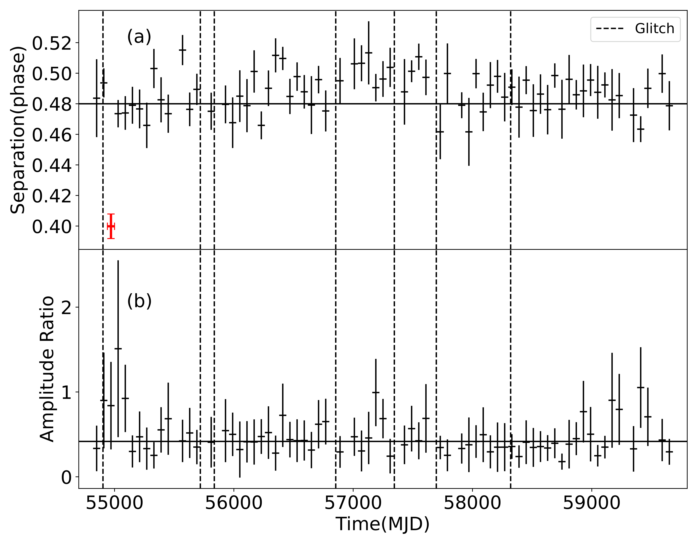
图注：Pulse peak separation and amplitude ratio measured in 60-day intervals. Panel (a) shows the peak separation, and panel (b) shows the amplitude ratio. Vertical dashed lines mark glitch epochs. A significant anomaly (highlighted in red) appears near the glitch at MJD 54904, with no notable variations detected at other glitch epochs or during other intervals.
对应解读：对应“建议重点查看的图表”第3、4项，以及“关键图表逐图导读”图3和图4：峰振幅比 R12 与双峰相位间隔 Δ 随时间演化。
入选理由：这张图直接给出全文最关键的两个轮廓诊断量：60天时间窗中的峰间距和振幅比，并用竖虚线标出 glitch 时代、用红色突出异常窗口。它最能检验 MJD 54940--55000 期间 Δ 是否显著偏离长期水平，以及 glitch 后 R12 是否存在约 3σ 的阶段性升高，是支撑“伽马射线脉冲轮廓在 glitch 后发生变化”的核心证据。
来源与置信度：\(arxiv_source\)；high；\(arxiv_source\) / bady.tex:figure[2]
Fig01
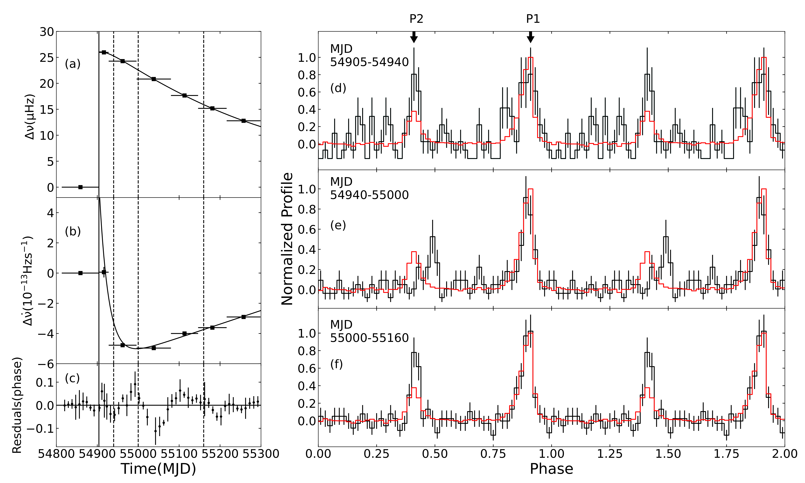
图注：The left panel shows the timing results for the glitch at MJD 54904. Panel (a) and (b) show the residuals of $\nu$ and $\dot{\nu}$ of partial-timing results that subtract the pre-glitch spin-down trend, respectively. The solid lines represent the glitch model listed in Table \(\ref{tar:timingpar}.\) Panel (c) displays the TOA residuals fitted with the glitch model listed in Table \(\ref{tar:timingpar}.\) The right panel shows short-term variations in the pulse profile, and the vertical dashed lines in left panel mark their epochs. Panels (d), (e), and (f) show the three successive pulse profile variations during MJD 54905--54940, MJD 54940--55000, and MJD 55000--55160, respectively. The black profile represents the short-term pulse profile, and the red profile represents the template profile accumulated from full data.
对应解读：对应“建议重点查看的图表”第1、2项，以及“关键图表逐图导读”图1和图2：glitch 计时残差、事件时间线和不同时间窗的折叠伽马射线脉冲轮廓。
入选理由：这张图同时展示 glitch 计时模型、ν 和 νdot 残差、TOA 残差，以及 MJD 54905--54940、54940--55000、55000--55160 三个关键时间窗的短期脉冲轮廓与长期模板对比。它能把辐射变化与 MJD 54904 的转动突变联系起来，并直观看到两个峰的相对高度和相位结构如何偏离模板，是理解时间窗划分和轮廓变化形态的基础图。
来源与置信度：\(arxiv_source\)；high；\(arxiv_source\) / bady.tex:figure[1]
Fig03
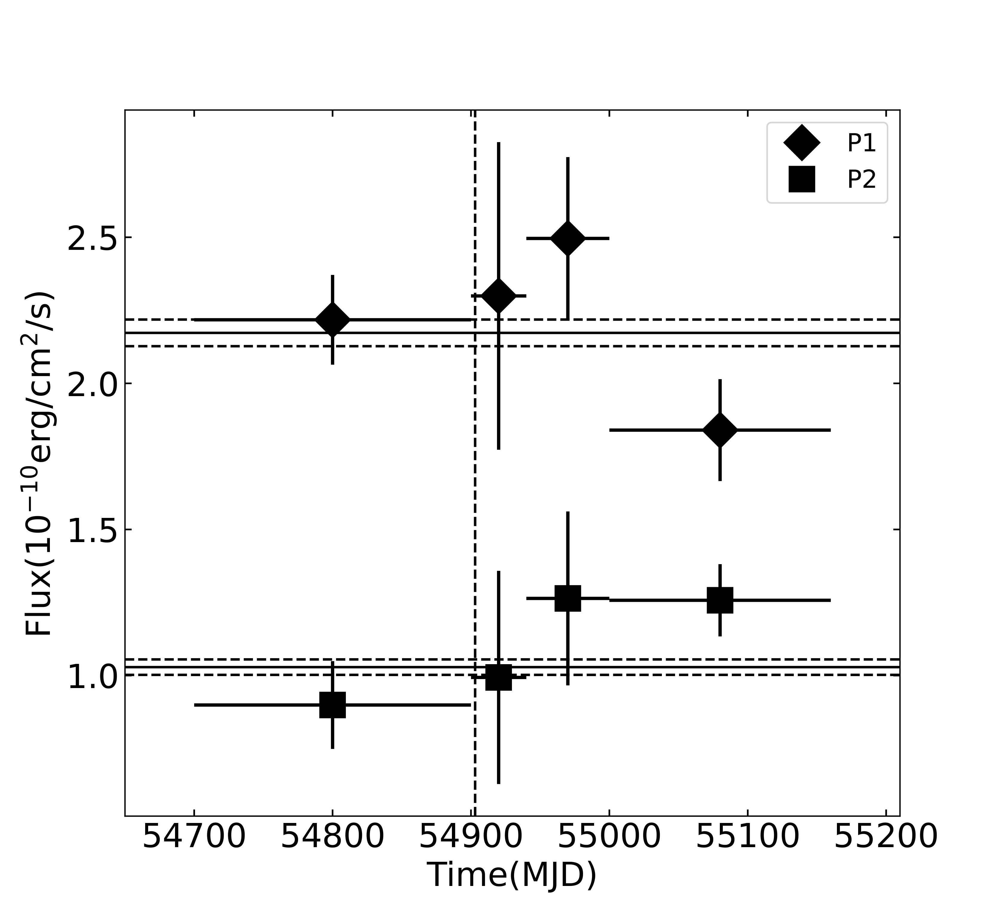
图注：The flux of the two pulse peaks. The diamond and square points represent the flux of P1 and P2, respectively. The black vertical dashed lines represent the occur time of glitch. The horizontal solid line at 2.17 and 1.02 are the mean flux of P1 and P2, and the dashed lines represent their 1$\,\sigma$ range.
对应解读：对应“建议重点查看的图表”第1和第7项，以及模型拟合讨论中关于脉冲通量、背景和系统误差的段落。
入选理由：这张图给出两个脉冲峰 P1、P2 的通量随时间变化，并标出 glitch 时代、平均通量和 1σ 范围，可用于检查论文中“伴随边缘性通量变化”的较弱结论。相比 Fig02 的峰间距显著变化，它的科学权重较低，但对判断振幅比变化是否来自单个峰通量变化、以及总通量是否真正异常仍有诊断价值。
来源与置信度：\(arxiv_source\)；high；\(arxiv_source\) / bady.tex:figure[3]
强相关工作
这篇工作应放在 glitch 辐射响应研究和 Fermi 伽马射线脉冲星研究的交叉处理解。相似方向包括 Vela、Crab、PSR J1119−6127 等年轻脉冲星在 glitch 或磁层状态变化后的射电、X 射线或高能行为。尤其是射电波段已有 glitch 相关轮廓或偏振变化的个例，它们说明 glitch 可以改变磁层边界条件；本文的新意是把这种联系推进到 GeV 伽马射线双峰轮廓。
基础理论方面，读者应回到脉冲星 glitch 的超流涡旋模型、壳层破裂模型，以及外磁层 caustic 辐射模型。检索关键词可用 “pulsar glitch radiative changes”、“gamma-ray pulsar light curve caustic”、“PSR J0205+6449 glitch”、“Fermi LAT pulsar timing”、“magnetospheric reconfiguration after glitch”。如果要找相反观点或张力，应检索“glitches without radiative changes”和“timing noise gamma-ray pulse profile systematics”，因为许多 glitch 没有观测到辐射变化，这要求任何统一模型解释为什么只有部分事件会在高能波段显现。
相似工作：
- https://arxiv.org/abs/2605.25205
- https://ui.adsabs.harvard.edu/search/q=pulsar%20glitch%20radiative%20changes
- https://ui.adsabs.harvard.edu/search/q=Fermi%20LAT%20gamma-ray%20pulsar%20glitch
基础理论 / 方法工作：
- https://ui.adsabs.harvard.edu/search/q=Anderson%20Itoh%201975%20pulsar%20glitches
- https://ui.adsabs.harvard.edu/search/q=Fermi%20Large%20Area%20Telescope%20pulsar%20catalog
- https://ui.adsabs.harvard.edu/search/q=gamma-ray%20pulsar%20outer%20magnetosphere%20caustic%20model
相反观点 / 张力线索：
- https://ui.adsabs.harvard.edu/search/q=glitches%20without%20radiative%20changes%20pulsars
- https://ui.adsabs.harvard.edu/search/q=gamma-ray%20pulsar%20pulse%20profile%20stability%20Fermi%20LAT
4. GRB 260310A / SN 2026fgk: A Multi-Wavelength Study of a Nearby Underluminous Long GRB and SN with a Complex Afterglow
- 来源：arXiv / astro-ph.HE
- 链接：https://arxiv.org/abs/2605.26091v1
- 作者：Ramandeep Gill, Rosa L. Becerra, Antonio de Ugarte Postigo, Christina C. Thöne, Alan M. Watson, Noémie Globus, Jean-Grégoire Ducoin, Peter Veres
- 评分：novelty 8/10，importance 8/10，relevance 10/10，final 9.70/10
- 推荐理由：近邻长GRB/SN的多波段研究，涉及异常低亮prompt、复杂余辉、可能的孤儿余辉/γ暗暂现源解释；GRB与高能瞬变相关性很高，观测资料丰富，值得读。
中文题目：GRB 260310A / SN 2026fgk: A Multi-Wavelength Study of a Nearby Underluminous Long GRB and SN with a Complex Afterglow
做了什么：本篇论文已通过推荐筛选，但自动详细解读生成失败。可先根据题目和摘要判断阅读优先级：We present a comprehensive multi-wavelength study of GRB 260310A / SN 2026fgk, a nearby ($z=0.153$), long-duration gamma-ray burst (GRB) with an exceptionally underluminous prompt $γ$-ray emission and a Comptonized spectrum. It is located at the edge of a blue host galaxy with a projected distance of 15 kpc, which is one of the largest offsets reported for a long GRB. The bright optical afterglow, with dense coverage from COLIBRÍ, likely peaked at a few to several hours post-burst, followed by a shallow decay not expected from canonical afterglow models. Both the optical and X-ray light curves show a brief chromatic plateau from $4-7$ days and a more standard decay thereafter only terminated with a rebrightening at $\sim20$ days. We demonstrate that this feature is best described by a combination of emission from the Ic-BL supernova, as identified in GTC spectra, and a late-time refreshed shock. The broadband optical to X-ray spectral energy distribution is well described by synchrotron emission from the forward shock, while the radio observations demand an additional emission component. We model the afterglow using (a) an on-axis uniform jet from a dirty fireball with late-time energy injection and (b) a misaligned jet with power-law angular structure, both having material emitting along our line-of-sight (LOS) moving with an initial Lorentz factor of $Γ_0\sim20-35$. Had this GRB occurred at a more typical redshift ($z\gtrsim0.5$), its prompt emission would likely have remained undetected by current $γ$-ray monitors while its optical afterglow would still have been readily detectable, placing it observationally among orphan afterglows or gamma-ray quiet fast X-ray transients.
为什么重要：这篇论文在今日候选中通过了本地推荐阈值，说明它与当前高能天体物理兴趣方向或质量标准较匹配；详细内容建议优先查看原文摘要、结论和图表。
理论 / 观测 / 仪器方法价值：由于 LLM 摘要 JSON 解析失败，本节保留为安全占位，不编造论文未确认的公式、图号或链接。
为什么应该关注：日报仍保留这篇论文，是为了避免单篇摘要失败导致整份日报缺失。请把它作为需要人工快速复核的高优先级候选。
展开详细解读：文章讲解、背景、理论、重点章节、图表与相关工作
文章详细讲解
本文要回答的第一个科学问题是：GRB 260310A 这种 prompt γ 射线极暗的长暴，究竟是普通塌缩星 GRB 的低能端、偏轴事件、低洛伦兹因子脏火球，还是与 SN 驱动的非相对论/弱相对论爆发更接近？摘要给出的证据包括 z=0.153 的近邻距离、Comptonized prompt 谱、Amati 平面仍处于 Type II 区域、以及与 Ic-BL SN 2026fgk 的光谱关联。阅读时应把 prompt 谱拟合、Eiso–Ep,i 位置和 SN 谱证认作为同一条证据链，而不是分别看成孤立结果。
第二个问题是余辉为何复杂。图 1 给出射电、光学/近红外和 X 射线总览：早期光学可能在几小时达到峰值，随后浅衰减；4–7 天有短暂平台；约 20 天出现再增亮。图 8 进一步展示 COLIBRÍ 多色光变、颜色演化和两个模型的残差，说明浅衰减和再增亮不是简单的单波段测光误差。图 10 则把晚期刷新激波和超新星模板相结合，显示扣除余辉后残差可由较暗且快速的 SN1998bw 类模板复现。这里的重点是成分分解：外激波余辉负责大部分连续谱，SN 负责晚期红化和宽线谱，刷新激波解释 X 射线和部分晚期 bump。
第三个问题是多波段 SED 是否支持同一物理起源。论文摘要称光学到 X 射线 SED 可由前向激波同步辐射描述，而射电需要额外成分。这个结论比“有射电探测”更重要：如果射电点落在单一 synchrotron 曲线可接受范围内，那么只需调整 νsa、νm、νc 和峰值通量；若射电曲率或归一化偏离显著，就要考虑反向激波、慢速外流、第二喷流成分、密度增强或 scintillation 等。图 1 下方面板列出不同历元 SED 和特征频率，是检验该结论的核心。
第四个问题是宿主环境是否符合长暴起源。图 5 显示 GRB 位于宿主边缘且投影偏移大，但沿狭缝分析表明 GRB 附近金属丰度较低、SFR 较高、消光低而相对均匀。这支持一个低金属丰度成星区域中的大质量恒星塌缩起源，同时提醒读者：投影偏移不能直接转化为真实三维距离，也不能忽略宿主外盘或潮汐/不规则成星区域。若正文中有宿主整体光度、质量、金属丰度或发射线比值，应与局部狭缝结果区分。
第五个问题是模型的非唯一性。论文并列使用 on-axis uniform jet with late-time energy injection 和 misaligned power-law structured jet 两种解释，两者都能在某些波段拟合主趋势，但在红波段、颜色演化和晚期残差上存在差别。研究生阅读时应重点判断作者是否真正用贝叶斯证据、信息准则或残差结构区分模型，还是仅说明两种模型均可行；若仅凭视觉拟合，结论应表述为“可能解释”而非“唯一证明”。下一步最有价值的补充是更晚期射电/X 射线监测、深层宿主扣除、极化或 VLBI 约束，以及对 SN 模板和刷新激波参数的联合后验比较。
背景知识
长时标伽马暴（long GRB）通常与大质量恒星塌缩和宽线 Ic 型超新星（Ic-BL SN）相关，是研究相对论喷流、恒星死亡和低金属丰度成星环境的关键样本。经典图像认为，中心引擎发射高度相对论喷流，prompt γ 射线来自内部耗散或光球附近过程，随后喷流与外部介质相互作用产生从 X 射线、光学到射电的余辉。GRB 260310A / SN 2026fgk 的特殊性在于它既是近邻事件（z=0.153），又具有异常暗弱的 prompt γ 射线辐射，但光学余辉很亮，因而处在“普通长暴”“低光度 GRB”“孤儿余辉/γ 射线安静快速 X 射线暂现源”之间的交界区域。
低光度长暴并不等同于没有相对论喷流。历史上 GRB 980425/SN 1998bw、GRB 060218/SN 2006aj、GRB 171205A/SN 2017iuk 等事件已经表明，同样与塌缩星和 Ic-BL SN 相连的爆发现象，可以在 γ 射线能量、峰值能量、喷流洛伦兹因子、观测角和外部介质结构上表现出巨大差异。本文摘要给出的“Comptonized spectrum”“underluminous prompt emission”“LOS material with Γ0≈20–35”提示它可能不是完全失败的喷流，而是相对较脏的火球、较低初始洛伦兹因子、偏轴结构喷流，或这些因素叠加的结果。
该事件还挑战了一个常见简化：长暴一定严格落在宿主星系最亮的成星区域附近。论文指出其位于蓝色宿主星系边缘，投影距离约 15 kpc，是长暴中较大的偏移之一；但图 5 又显示沿狭缝的局部环境在 GRB 位置附近具有较高恒星形成率、较低金属丰度且消光不高。因此阅读时不要把“大偏移”直接理解为“与成星无关”或“可能是短暴”，而应结合宿主形态、局部发射线诊断、投影效应和局部 HII 区来判断其塌缩星起源。
另一个常见误区是把光学再增亮全部归因于超新星，或把所有波段平台全部归因于能量注入。本文摘要和图 1、图 8、图 10 显示，4–7 天有短暂的色相关平台，约 20 天有再增亮，晚期需要 Ic-BL 超新星和刷新激波共同解释；而射电 SED 又要求额外成分。这说明该事件不是单一断裂幂律余辉加 SN 模板的简单叠加，而是一个多成分、多波段、多时间尺度共同约束喷流动力学与爆炸产物的案例。
这篇论文的动机可概括为三点：第一，确定一个 γ 射线欠亮但光学明亮的近邻长暴是否仍服从塌缩星长暴的经验关系和物理图像；第二，用密集 COLIBRÍ 光学覆盖、X 射线、射电和 GTC 光谱分离余辉、SN 和可能的额外射电成分；第三，评估若该事件位于更典型红移 z≳0.5 时，当前 γ 射线监测器是否会漏检，从而影响我们对孤儿余辉和 γ 射线安静暂现源事件率的理解。
基础理论 / 方法脉络
理解本文首先要从标准外激波余辉图像出发。相对论喷流进入外部介质后，前向激波扫起物质并把一部分能量分配给电子和磁场，形成非热电子幂律分布并产生同步辐射。观测到的光变曲线取决于喷流总能量、初始洛伦兹因子、外部密度剖面、微物理参数 εe 和 εB、电子谱指数 p，以及观测频率相对于自吸收频率 νsa、特征频率 νm 和冷却频率 νc 的位置。图 1 下方面向的正是这种诊断：光学到 X 射线若落在同一同步谱段，应呈现可由单一幂律或含冷却断裂的谱连接；射电若显著偏离，则可能需要自吸收、反向激波、第二喷流成分或外部密度结构。
prompt γ 射线部分通常用经验谱模型描述，例如 cut-off power-law/Comptonized 模型或 Band 函数。Comptonized 谱一般具有低能幂律加指数截断，能给出观测峰值能量 Epeak；结合红移可得到本征峰值 \(Ep,i=(1+z)Epeak\) 和各向同性等效能量 Eiso。图 7 的 Amati 平面把 Eiso 与 Ep,i 比较，用于判断该事件是否落在 Type II/collapsar 长暴分布内。需要注意，Amati 关系是经验相关而非严格物理定律；对欠亮事件而言，仪器阈值、能段外推、谱模型选择和红移选择效应都会影响其位置。
本文的核心困难是余辉光变不是经典单调衰减。早期光学可能在数小时附近达到峰值，随后进入浅衰减；4–7 天光学和 X 射线有短暂平台或变平；约 20 天出现再增亮。标准闭合关系会把时间衰减指数 α 和谱指数 β 与电子谱 p、介质类型联系起来，但一旦存在能量注入、偏轴观看、结构喷流、超新星光和刷新激波，单段闭合关系就只能作为局部诊断，而不能直接给出唯一模型。
两类模型在本文中被并列考虑：一类是视线内均匀喷流或“dirty fireball”加晚期能量注入，另一类是偏轴但具有幂律角结构的喷流。前者强调初始洛伦兹因子较低、喷流物质仍沿视线方向发射，能解释 γ 射线欠亮和余辉早期峰值；后者强调观测角与喷流角结构，使早期看到的是较弱的视线方向物质，随着更高能核心或不同角区减速，光变可能变平或再增亮。两者都可能给出 Γ0≈20–35 的视线方向物质，这比典型明亮 GRB 的 Γ0 往往低，符合“脏火球”或低效率 prompt 发射的直觉。
观测分析上，关键不是单一波段的最佳拟合，而是跨波段一致性。光学多色曲线需要扣除银河系消光和宿主贡献，并追踪颜色演化以识别 SN 变红；X 射线可帮助判断高频谱段是否与光学同源；射电对自吸收、峰值频率和额外成分敏感；光谱则用于确认 SN Ic-BL 特征和速度演化。模型退化主要来自能量 E、密度 n、εB、观测角 θobs、喷流开角 θj、能量注入历史和 SN 模板缩放之间的互相补偿，因此必须同时看 SED、光变残差、颜色和光谱。
公式与推导
余辉建模的起点是相对论外激波能量守恒。对均匀外介质的绝热 Blandford–McKee 近似，可写成
其中 \(E_{\rm k,iso}\) 是各向同性等效动能，\(R\) 为激波半径，\(n\) 为外介质数密度，\(\Gamma\) 为激波洛伦兹因子。观测时间与半径近似满足
适用于视线内、超相对论、薄壳近似。由此可得 \(\Gamma(t)\propto (E/n)^{1/8}t^{-3/8}\)，用于从早期光学峰值估计初始洛伦兹因子量级。
若光学峰值代表外激波减速时间，则薄壳情形下有
从而
本文给出的 LOS 物质 \(\Gamma_0\sim20\!-\!35\) 可用这一类标度理解，但数值依赖 \(E_{\rm k,iso}\)、\(n\)、辐射效率和峰值时间定义，因此应看作模型相关约束。
同步辐射的电子分布通常设为
并以 \(\epsilon_e\) 和 \(\epsilon_B\) 描述激波后能量分配。最小电子洛伦兹因子和磁场可近似写为
这些量决定特征频率
其中 \(\gamma_c\simeq 6\pi m_e c(1+z)/(\sigma_T B'^2\Gamma t)\)。图 1 下方标出的 \(\nu_{\rm sa},\nu_m,\nu_c\) 就是检验 SED 是否符合该谱形的关键。
在慢冷却、\(\nu_m<\nu<\nu_c\) 的谱段，观测通量满足
若 \(\nu>\nu_c\)，则 \(\beta=p/2\)、\(\alpha=(3p-2)/4\)。这些闭合关系是检查“标准余辉是否足够”的第一步；本文中的浅衰减、平台和再增亮若偏离这些关系，就需要能量注入、角结构或额外成分。
能量注入可用
参数化，其中 \(q>0\) 会使衰减变浅。以 ISM 且 \(\nu_m<\nu<\nu_c\) 为例，时间指数会从标准值修正为近似
说明平台可以由持续注入或刷新激波产生。这里的公式只给出标度，真实拟合还要处理注入开始/结束时间、喷流几何和观测频率跨越断裂的情况。
偏轴结构喷流可用角向能量和初始洛伦兹因子分布描述，例如
观测通量由不同角元的多普勒因子加权：
当 \(\theta_{\rm obs}\ne0\) 时，早期辐射被多普勒压低，随着喷流减速和可见锥 \(1/\Gamma\) 变宽，光变可变平或上升。这是本文 misaligned power-law structured jet 模型的物理基础。
prompt γ 射线的各向同性能量通常由 fluence \(S_\gamma\) 给出
其中 \(S_{\rm bolo}\) 是经能段外推和 k-correction 后的 bolometric fluence。谱峰的本征值为
把这两个量放到 Amati 平面，检查 \(\log E_{\rm p,i}=A+B\log(E_{\rm iso}/10^{52}{\rm erg})\) 的离散范围，可判断事件是否处于长暴经验分布内，但不能单独区分脏火球和偏轴喷流。
多波段拟合的统计层面可写成
其中 \(\Theta\) 包括余辉、SN、刷新激波、宿主和消光参数。若考虑系统误差，可把 \(\sigma_i^2\) 替换为 \(\sigma_{i,{\rm stat}}^2+\sigma_{\rm sys}^2\)。图 8 的残差和图 10 的扣除后光变，本质上就是检验该似然模型是否遗漏颜色依赖或晚期成分的可视化诊断。
模型拟合 / 应用方法
本文涉及多个层次的拟合量。prompt 阶段拟合的是 γ 射线能谱参数，如 Comptonized/cut-off power-law 的归一化、低能谱指数和截断/峰值能量，以及可能的 Band 函数低能和高能指数。由这些参数积分得到 fluence、Eiso 和 Ep,i，再放入 Amati 平面。这里的拟合诊断应包括不同谱模型的统计量差异、参数置信区间、能段外推对 bolometric fluence 的影响，以及高能端是否足以约束 Band 高能指数。
余辉光变层面的拟合首先可用现象学断裂幂律描述，即在不同时间段拟合 \(F_\nu\propto t^\alpha\)，以定位峰值、平台、衰减和再增亮。更物理的拟合则包括前向激波同步辐射参数：\(E_{\rm k}\)、\(n\) 或风介质参数、\(p\)、\(\epsilon_e\)、\(\epsilon_B\)、喷流开角、观测角、初始洛伦兹因子，以及能量注入或刷新激波的开始时间、结束时间和注入指数。若同时拟合多波段，应使用通量空间而不是星等空间，并显式加入各波段零点、宿主扣除和消光误差。
似然函数通常可近似为多波段高斯误差的 \(\chi^2\) 或贝叶斯后验，但本文这种复杂事件更应关注残差结构而非单一最小 \(\chi^2\)。图 8 底部残差显示两个余辉模型在蓝波段和红波段表现不同，尤其红波段偏离可能意味着 SN 已开始贡献、消光颜色项不准确、或模型缺少额外成分。一个健康的拟合应在时间和频率两个方向都无系统残差；若残差在某一时段同时出现在多个滤光片，倾向于动力学成分缺失；若只在红波段增长，倾向于 SN 或颜色校正问题。
SED 拟合的关键诊断是断裂频率和谱指数是否与光变闭合关系一致。光学到 X 射线若由单一前向激波解释，谱指数 β 应能给出合理的电子谱指数 p，并与时间衰减 α 大体相容；如果 X 射线位于 νc 以上而光学位于 νc 以下，应看到约 0.5 的谱指数差异。射电要求额外成分时，应检查是否可能由自吸收频率、闪烁、密度起伏或反向激波解释，而不应立即固定为某一种物理来源。图 1 下方面板的 4.26、17.20、25.20 天 SED 是判断这个问题的主要依据。
参数退化非常强。\(E_{\rm k}\)、\(n\)、\(\epsilon_B\) 可共同调节峰值通量和冷却频率；\(\Gamma_0\) 与 \(n\) 和早期峰值时间退化；能量注入指数 q 与观测角/结构喷流几何都能造成浅衰减；SN 模板亮度、拉伸因子和 afterglow 扣除会互相影响；宿主消光和本征谱斜率也可互相补偿。因此若正文给出后验角图或置信区间，应重点看这些参数是否被数据真正约束，而不是只看最佳值。
系统误差方面，光学宿主扣除、银河系与宿主消光、滤光片 k-correction、X 射线吸收柱密度、射电通量标定和星际闪烁都可能影响模型选择。SN 光谱扣除 afterglow 的方法尤其关键，因为连续谱扣除不同会改变宽线识别和模板匹配。对于“如果在 z≳0.5 prompt 将不被当前 γ 射线监测器探测”的结论，还应检查作者是否把谱形、触发能段、持续时间、背景阈值和 k-correction 一并纳入，而不是只按距离平方缩放 fluence。
模型可能失败的地方包括：单一前向激波无法同时解释射电和高频 SED；能量注入模型虽能拟合平台但无法解释颜色演化；偏轴结构喷流可产生再增亮但要求不合理的角结构或能量；SN 模板可拟合晚期残差但与光谱速度或颜色不一致。最有说服力的结果应来自光变、SED、颜色、光谱和宿主环境的交叉一致，而不是任一单独拟合。
重点章节 / 结果段落怎么读
-
Prompt emission 与谱能量分布章节：优先核查探测仪器、时间积分区间、背景选择、cut-off power-law 与 Band 函数拟合结果、Epeak 和 fluence 的误差。阅读目标是判断“exceptionally underluminous”来自真实低能量释放，还是部分受触发阈值、能段外推或谱模型不确定影响。随后把 Eiso 和 Ep,i 放到图 7 的 Amati 平面中理解。
-
Host galaxy 与局部环境章节：重点阅读红移测量、投影偏移 15 kpc 的定义、宿主形态、发射线比值、O3N2 金属丰度、SFR 和消光校正。这里要特别区分宿主整体性质与 GRB 局部环境，因为大偏移和局部成星增强同时存在，是本文解释塌缩星起源的重要背景。
-
Multi-wavelength observations/light curves 章节：逐项核查光学、近红外、X 射线和射电的数据来源、校准、宿主扣除、银河系消光修正和时间覆盖。读图 1 时应把时间演化分成早期峰值、浅衰减、4–7 天平台、标准衰减和约 20 天再增亮几个阶段，并记录哪些阶段是多波段共同支持，哪些主要由单一波段驱动。
-
SED 与 synchrotron 诊断章节：重点看作者如何拟合不同历元的 radio-to-X-ray SED，是否允许断裂频率移动，是否处理 X 射线吸收和光学消光，以及为何得出“optical-to-X-ray single forward shock, radio requires extra component”。这部分是连接观测现象和物理模型的桥梁。
-
Afterglow model 章节：比较 on-axis dirty fireball/energy injection 与 misaligned power-law structured jet 的假设、参数和拟合质量。阅读时不要只看模型曲线是否穿过数据点，而要看 Γ0、能量、密度、微物理参数、观测角和能量注入时间是否物理合理，并结合图 8 残差判断两模型的系统偏差。
-
Supernova identification and decomposition 章节：重点读 GTC 光谱中 Ic-BL 特征、afterglow 扣除、与 SN2017iuk 或 SN1998bw 类模板的比较，以及图 10 中晚期刷新激波与 SN 模板的联合分解。该章节决定约 20 天再增亮究竟是 SN 主导、刷新激波主导，还是两者不可分地耦合。
建议重点查看的图表
-
多波段总光变曲线与断裂幂律参数：重点看图 1 上方面板中 radio、optical/nIR、X-ray 的时间轴是否统一为 T0 后天数，纵轴是否经过人为平移或缩放；检查各时间段的衰减指数 α、平台时段 4–7 天、约 20 天 bump 是否在多个波段同步出现，以及误差棒是否足以支持“浅衰减/再增亮”。
-
多历元 SED 与同步辐射断裂频率：重点看图 1 下方面板中 νsa、νm、νc 的相对位置，光学到 X 射线是否真的可由单一幂律或标准 synchrotron 段连接；对有射电覆盖的 4.26、17.20、25.20 天历元，检查单成分和双成分模型对射电曲率的改善是否显著。
-
prompt 谱模型与 Amati 平面：重点看图 7 中 cut-off power-law 与 Band 函数的置信带是否在观测能段内可区分，Epeak 和谱指数不确定度如何；在 Eiso–Ep,i 平面上检查蓝色星号相对于 Type II 拟合线和 2σ 离散区的位置，避免把“落在区域内”过度解释为物理机制已确定。
-
COLIBRÍ 多色光变、颜色和残差：重点看图 8 上方面板两类模型线是否同时拟合 g,r,i,z,y；中方面板颜色 g−r、r−z、g−z 的蓝化/红化阶段是否与平台和 SN 出现时间对应；下方面板残差是否呈系统性颜色依赖，尤其是 z 波段偏离是否提示 SN 或模型缺项。
-
SN+刷新激波分解：重点看图 10 中扣除 afterglow 后的残差是否平滑、是否跨多个滤光片一致、是否可由较暗且快速的 SN1998bw 模板描述；检查 late refreshed shock 的加入是否也由 X 射线或射电独立支持，而不只是为光学残差调参。
-
GTC/OSIRIS+ 超新星光谱：重点看图 11 中 afterglow 扣除方法、吸收特征识别、速度演化和与 SN 2017iuk 的比较；确认宽线 Ic 特征是否足够稳健，以及连续谱颜色是否受消光或宿主污染影响。
-
宿主沿狭缝环境诊断：重点看图 5 中 GRB 位置相对于金属丰度最低点、SFR 峰值和消光分布的位置；核查 O3N2 金属丰度标定适用范围、发射线信噪比、binning 尺度，以及“15 kpc 投影偏移”与局部成星区域之间的表观矛盾如何被解释。
关键图表逐图导读
图 1：这是全文的多波段总览图。上方面板横轴应为爆发后时间，纵轴同时给 AB 星等和通量密度，且不同波段为了清晰可能做了平移，因此不能直接用视觉高度比较本征亮度。虚线为断裂幂律拟合，读图时应关注每个时间段标注的 \(F_\nu\propto t^\alpha\) 中 α 的变化：早期峰值、浅衰减、4–7 天平台、约 20 天 bump 是否跨光学和 X 射线一致。下方面板是多历元 SED，横轴为频率，纵轴为通量密度；核心是检查光学到 X 射线是否由同一同步谱段连接，以及射电在 17.20 和 25.20 天是否显著要求双成分模型。陷阱是忽略图中 SED 的垂直平移，或把射电偏离简单归因于噪声而不看曲率和自吸收断裂。
图 7：上方面板比较 cut-off power-law/Comptonized 与 Band 函数对 prompt 全谱的描述，阴影给出 1σ 和 2σ 置信区间。读图时要看两种模型在峰值附近和高能端是否真正分开；若 Band 高能指数未被充分约束，则 Comptonized 谱的“最佳”可能部分来自能段覆盖限制。下方面板是 Eiso–Ep,i/Amati 平面，蓝色星号为 GRB 260310A，灰线和阴影为 Type II/collapsar 样本拟合及 2σ 离散。该图支持“欠亮但仍在长暴族群区域”，但不要把经验关系内的位置误读为已经证明喷流结构或辐射机制。
图 8：该图是模型比较和残差诊断的关键。上方面板给出 COLIBRÍ g,r,i,z,y 光变，实线代表 on-axis energy injection 模型，虚线代表 misaligned structured jet 模型；读图时应逐波段比较模型是否只拟合了蓝波段而牺牲红波段。中方面板给颜色 \(g-r\)、\(r-z\)、\(g-z\) 随时间的变化，平台期若出现蓝化而晚期转红，说明不能用简单 achromatic afterglow 解释全部结构。下方面板残差直接显示模型缺口，尤其 z 波段系统偏离可能是 SN 贡献、消光/宿主扣除或模型角结构不充分的迹象。
图 10：该图用于检验“晚期刷新激波 + 超新星”的分解是否合理。上方面板展示不同滤光片下的总光变和模型分量；下方面板展示扣除 afterglow（包括 X 射线揭示的晚期 bump）后的剩余光。若残差可由较暗且快速的 SN1998bw 模板复现，说明约 20 天再增亮不能简单归为单纯 SN 或单纯余辉，而需要联合解释。陷阱是模板缩放可能与余辉扣除强相关，因此要看多波段颜色、谱证据和 X 射线约束是否共同支持分解。
图 11：这是确认 SN 2026fgk 为 Ic-BL 的光谱证据。横轴通常为静止系波长，纵轴为相对通量或任意归一化通量；图中已扣除 afterglow，并标出不同速度的吸收特征，同时与 SN 2017iuk 在相近历元比较。读图时应关注宽吸收槽、速度随时间下降、以及与已知 GRB-SN 的相似性。主要陷阱是 afterglow 扣除和宿主背景会改变连续谱形状，因此宽线识别比连续谱斜率更可靠。
图 5：该图解释宿主环境。它显示狭缝位置以及沿狭缝的金属丰度、恒星形成率和消光分布，GRB 位置附近金属丰度较低、SFR 较高、消光整体较低。读图时要区分局部测量和宿主积分谱测量，检查 bin 大小、误差阴影和虚线代表的整体值。陷阱是把 15 kpc 投影偏移理解为与宿主无关；图 5 恰恰提示它可能位于外盘或边缘成星区。
论文原图 / 可嵌入图片
Fig01
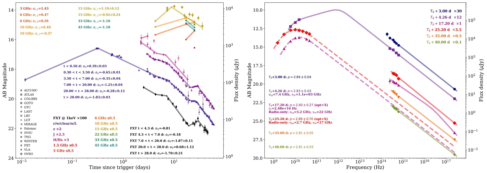
图注：Top: Multi-wavelength light curves of GRB~260310A / SN\,2026fgk spanning radio, optical/nIR, and X-ray observations. AB magnitudes are shown on the left axis and the corresponding flux densities on the right axis. The optical photometry has been corrected for Galactic extinction and, in optical bands, for the contribution of the host galaxy. Dashed lines represent broken power-law fits to the temporal evolution, where $F_{\nu}\propto t^{\alpha}$, with the derived decay indices $\alpha$ indicated for the different time intervals and frequency bands. For clarity, the photometry has been scaled. Bottom: Spectral energy distributions (SEDs) at different epochs, spanning radio to X-ray frequencies. For epochs with radio coverage ($T_0+4.26$, 17.20, and 25.20~d), we model the SEDs using either a single smooth synchrotron spectrum ($T_0+4.26$~d) or a two-component model ($T_0+17.20$ and $T_0+25.20$~d) to account for the observed curvature between the radio and higher-frequency data. For epochs without radio data, the SEDs are well described by a single power-law segment, $F_{\nu} \propto \nu^{\beta}$ (solid lines). The characteristic break frequencies ($\nu_{\rm sa}$, $\nu_m$, $\nu_c$) are indicated in the figure. For clarity, the SEDs have been shifted vertically.
对应解读：建议重点查看主要多波段数据、SED诊断和模型比较；对应摘要中“radio/optical/nIR/X-ray light curves”“broadband optical to X-ray SED”“radio observations demand an additional emission component”。
入选理由：这是全文最核心的总览图，同时给出射电、光学/近红外、X射线光变曲线和多历元SED；图中包含断裂幂律拟合、衰减指数、同步辐射谱段与特征频率，并直接展示为何光学到X射线可由前向激波解释而射电需要额外成分，科学信息密度最高。
来源与置信度：\(arxiv_source\)；high；\(arxiv_source\) / main.tex:figure[1]
Fig08
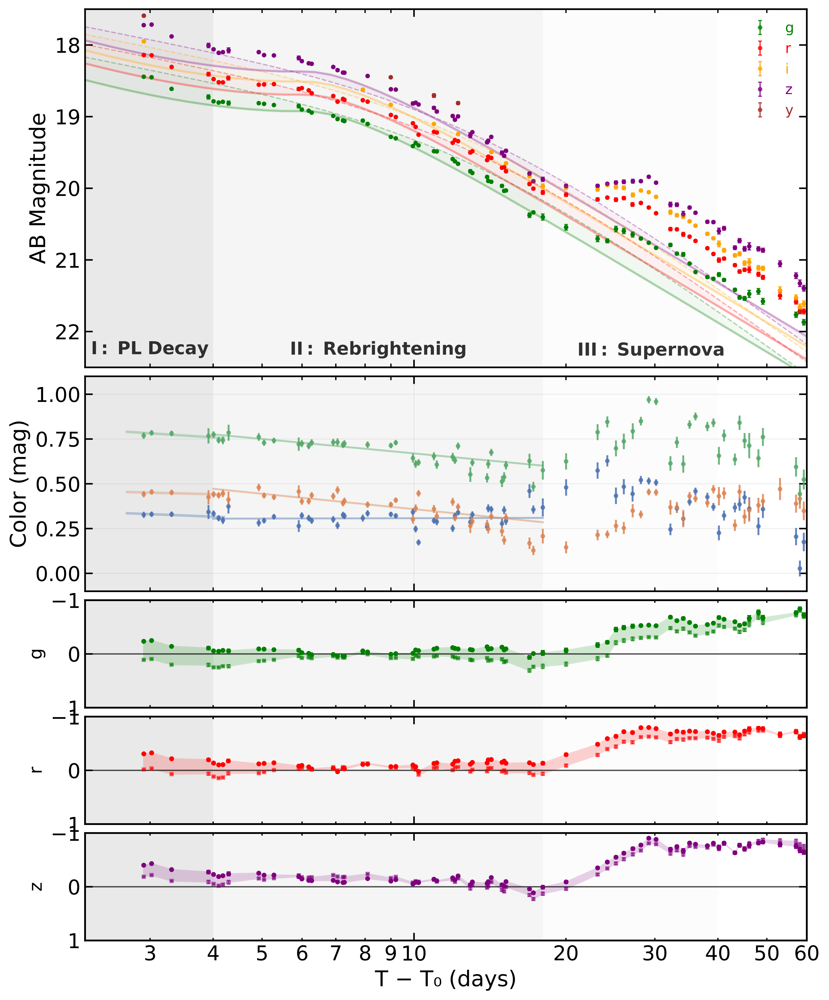
图注：COLIBRÍ Multi-band optical light curves, color evolution, and model residuals. Top: Light curves in the $g$, $r$, $i$, $z$, and $y$ bands as a function of time since $T_0$. All bands exhibit a common temporal structure consisting of an initial decay (Phase I), followed by a rebrightening/flattening phase (Phase II), and a late-time excess (Phase III). The overplotted curves show a global fit using the on-axis energy injection model (solid lines, Section~\ref{sec:uniform-jet-with-Einj}) and the misaligned structured jet model (dashed lines, Section~\ref{sec:misaligned-PLJ}), capturing the dominant achromatic afterglow evolution, with clear deviations emerging at the onset of the rebrightening phase, particularly in the redder bands. Middle: Evolution of optical colors $g-r$, $r-z$, and $g-z$. While $g-r$ remains approximately constant during the rebrightening phase, both $r-z$ and $g-z$ exhibit a systematic blueward evolution with slopes given by Eq.~\(\ref{eq:color-slopes}.\) At late times ($T-T_0 \gtrsim 18$~days), all colors redden, signaling the emergence of the supernova. Bottom: Residuals between the best-fit afterglow models and the observed fluxes in the $g$, $r$, and $z$ bands, for two models: circles indicate the energy injection model, and squares indicate the structured misaligned afterglow model. Shaded regions highlight the difference between model predictions. One can see that both models reproduce the bluer bands more accurately than the $z$ band.
对应解读：对应模型拟合段落中需重点检查的“on-axis energy injection model”和“misaligned structured jet model”比较、颜色演化与残差诊断。
入选理由：该图直接比较两类核心余辉模型的多波段光变拟合，并在底部给出残差，在中部给出颜色演化；它最能支撑论文关于浅衰减、再增亮/平台、红波段偏离以及两种喷流解释优劣的判断。
来源与置信度：\(arxiv_source\)；high；\(arxiv_source\) / main.tex:figure[8]
Fig10
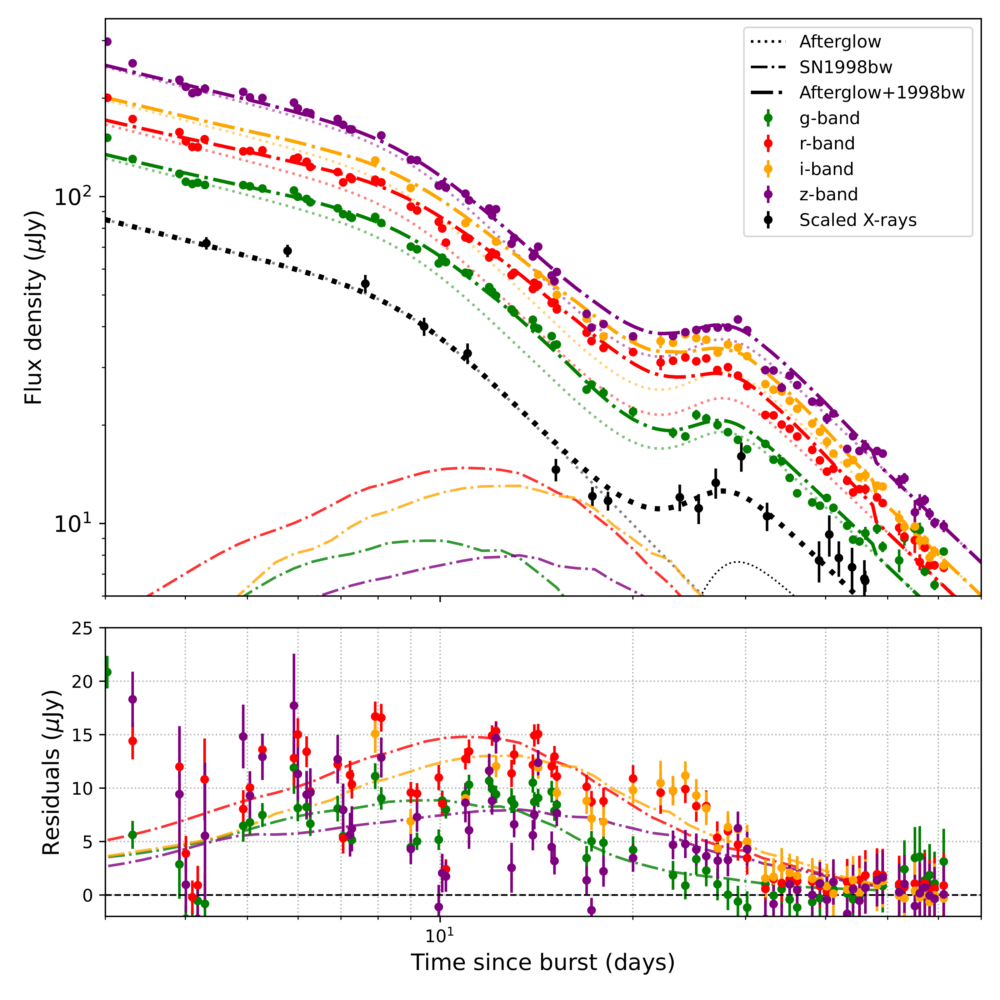
图注：Light curve evolution assuming a late refreshed shock plus supernova. The top panel shows the light curve evolution in the different bands and the bottom panel shows the light curve after the afterglow emission (including the late bump revealed in X-rays) has been subtracted. The residuals are well reproduced by faint and fast SN1998bw templates.
对应解读：对应摘要中“late-time refreshed shock + Ic-BL supernova”解释以及建议检查模型分解、残差和模板匹配的部分。
入选理由：该图把晚期刷新激波与超新星成分联合建模，并在扣除余辉后展示残差可由较暗且快速的SN1998bw模板复现，是验证20天左右再增亮物理解释的关键图，比单纯现象学拟合更贴近论文结论。
来源与置信度：\(arxiv_source\)；high；\(arxiv_source\) / main.tex:figure[10]
Fig07
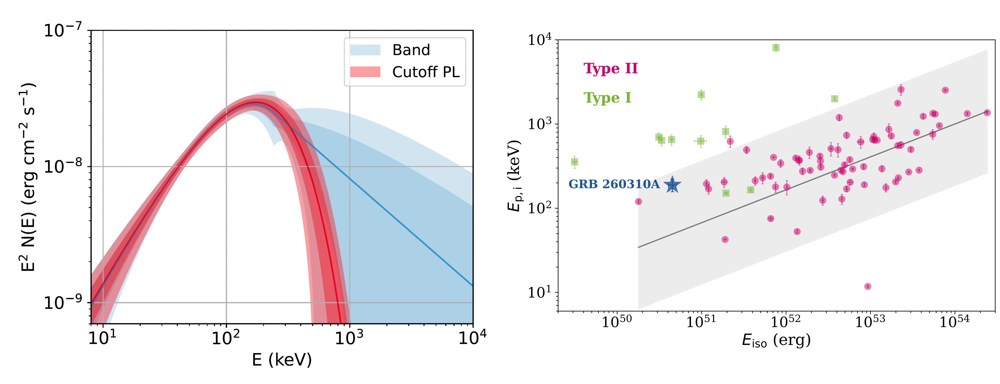
图注：Top: Comparison of the cut-off power-law and Band function description of the entire spectrum. The two shaded regions around the best fitting curves mark the 1 and 2$\sigma$ confidence regions. The spectral fits are shown in Fig.\,\(\ref{fig:prompt-spec-fit}.\) Bottom: Location of GRB~260310A in the $E_{\rm iso}$–$E_{\rm p,i}$ (Amati) plane. The blue star marks GRB~260310A. The comparison sample consists of \(\textit{Fermi}/GBM\) GRBs with measured redshifts. The solid grey line represents an orthogonal distance regression fit to the Type II (collapsar) population in log–log space, using only events with $E_{\rm peak}$ fractional uncertainties below 10\%, and the shaded region indicates the corresponding $2\sigma$ dispersion. GRB~260310A lies in the region of Type II population.
对应解读：对应prompt gamma-ray性质、Comptonized/cut-off power-law谱、Band函数比较以及E_iso–\(E_p,i\)/Amati平面位置。
入选理由：该图同时展示瞬时谱模型的置信区间比较和GRB 260310A在Amati关系中的位置，是判断其“欠亮但仍属Type II/collapsar长暴群体”的关键证据，包含模型线和2σ离散区间。
来源与置信度：\(arxiv_source\)；high；\(arxiv_source\) / main.tex:figure[7]
Fig11
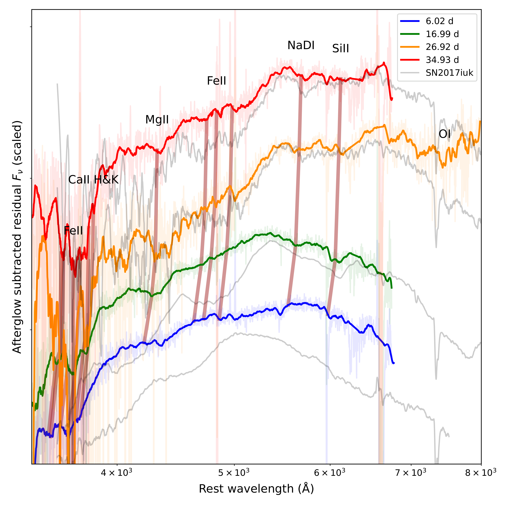
图注：Spectral evolution of the supernova, after the GTC/OSIRIS+ spectra had the afterglow component subtracted. Several absorption features are identified with varying velocities. For comparison, we display, in gray, the spectra of SN2017iuk associated to GRB\,171205A at similar epochs.
对应解读：对应摘要中“SN 2026fgk identified in GTC spectra”和Ic-BL超新星谱证认部分。
入选理由：该图展示扣除余辉后的超新星谱演化、吸收特征及与GRB-SN 2017iuk的比较，是确认SN 2026fgk性质和宽线Ic型关联的主要观测证据。
来源与置信度：\(arxiv_source\)；high；\(arxiv_source\) / main.tex:figure[11]
Fig05
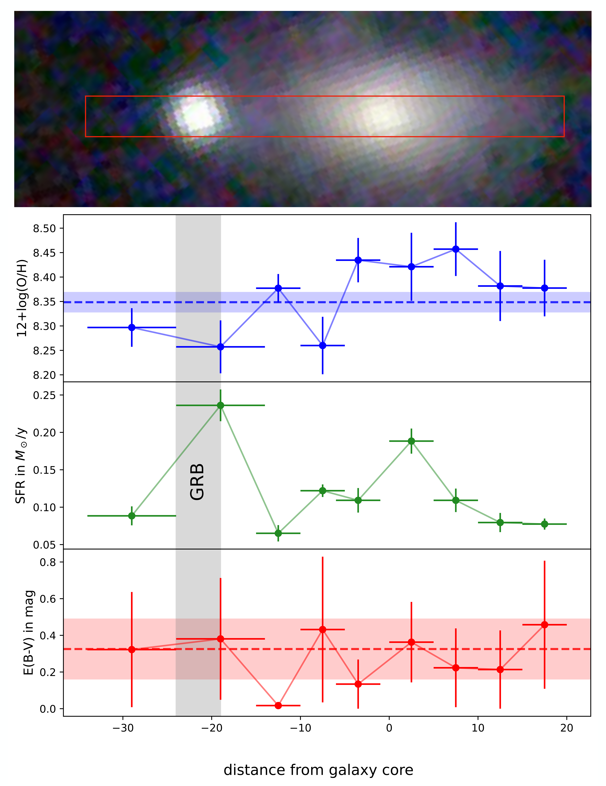
图注：The image indicates the location of the slit on the host galaxy. We extracted bins of 10 pixels (2.54~\arcsec) for the outer two regions on the left of the panel (including the GRB site) to increase the S/N, and 5 pixels (1.27~\arcsec) for the rest of the slit. Top: The first panel shows the metallicity, determined from the O3N2 parameter \(\citep{Marino13},\) which reaches a minimum around the location of the GRB and peaks around the galaxy core. Middle: It shows the star formation rate which is maximum at the location of the GRB, implying that it must be located in the neighbourhood of a prominent star formation region. Bottom: We show the extinction which is relatively uniform across the galaxy and overall rather low. The extinction has also been used to correct the emission line fluxes in each bin. The dashed horizontal lines and shaded regions mark the metallicity, extinction and corresponding errors determined from the integrated spectrum of the host along the slit.
对应解读：对应宿主星系环境、GRB位于星系边缘且附近有显著成星区、局部金属丰度/消光/SFR诊断。
入选理由：该图沿狭缝给出GRB位置附近的金属丰度、恒星形成率和消光分布，能支撑论文关于大投影偏移但仍邻近强成星区域、低金属丰度环境的解释，比仅给宿主总体样本比较的图更直接。
来源与置信度：\(arxiv_source\)；high；\(arxiv_source\) / main.tex:figure[5]
强相关工作
直接相关的历史样本应从 GRB-SN 和低光度长暴两条线索检索。关键词可用“GRB 980425 SN 1998bw low luminosity GRB”“GRB 060218 SN 2006aj shock breakout”“GRB 171205A SN 2017iuk nearby GRB-SN”“GRB 100316D low luminosity long GRB”。这些工作提供了 Eiso 偏低、软谱、近邻、与 Ic-BL SN 关联、可能存在低洛伦兹因子外流或喷流-包层相互作用的参照系。本文图 10 使用 SN1998bw 类模板、图 11 比较 SN2017iuk，说明这些样本是理解 SN 2026fgk 光度、速度和谱演化的核心背景。
理论基础文献可沿“standard afterglow synchrotron closure relations”“Blandford McKee afterglow”“Sari Piran Narayan afterglow”“jet break GRB afterglow”“refreshed shocks GRB”“structured jet off-axis afterglow”检索。它们分别对应本文的前向激波 SED、光变闭合关系、能量注入/刷新激波和偏轴结构喷流模型。若要复现或评估本文模型，还应查找多波段 afterglow 拟合代码或框架，如 BOXFIT、afterglowpy、jetsimpy 或类似的结构喷流数值工具，但不能假定本文一定使用其中某一个，需以正文方法为准。
观测分类与张力线索可从“orphan afterglow”“gamma-ray quiet fast X-ray transient”“dirty fireball GRB”“failed GRB relativistic supernova”检索。本文的重要外推是：若该事件在 z≳0.5，prompt 可能被 γ 射线监测器漏检，而光学余辉仍可探测，于是会被归入孤儿余辉或 γ 射线安静暂现源。这与宽视场光学巡天和 X 射线暂现源的分类直接相关，也涉及 GRB 真实事件率和喷流张角/观测角分布的估计。
经验关系方面应检索“Amati relation long GRB Eiso Epeak low luminosity outliers”“collapsar Type II GRB Amati plane”。图 7 表明 GRB 260310A 虽然 prompt 欠亮，但仍在 Type II/collapsar 区域附近；然而低光度事件在经验关系中的位置常受选择效应、谱模型和能段外推影响。因此相反或张力文献可能包括认为低光度 GRB 形成独立族群、或由 shock breakout 而非经典喷流主导的研究。
宿主环境可沿“long GRB host metallicity offset star formation rate resolved spectroscopy”“GRB host galaxy low metallicity outskirts”检索。本文的 15 kpc 大投影偏移与局部高 SFR/低金属丰度并存，是与传统“长暴跟踪最强成星光”图像之间的细微张力。比较样本应包括长暴宿主偏移分布、短暴宿主偏移分布和近邻 GRB-SN 宿主的空间分辨发射线研究，以避免仅凭偏移大小误判 progenitor 类型。
相似工作：
（未提供）
基础理论 / 方法工作：
（未提供）
相反观点 / 张力线索：
（未提供）
5. Reassessing high-energy emission correlations in gamma-ray bursts using a large, homogeneous sample of X-ray afterglows
- 来源：arXiv / astro-ph.HE
- 链接：https://arxiv.org/abs/2605.25644v1
- 作者：A. A. Vigliano, F. Longo, Ž. Bošnjak
- 评分：novelty 7/10，importance 8/10，relevance 10/10，final 9.40/10
- 推荐理由：大样本、均一Swift-XRT GRB余辉分析，重新评估GeV高能探测与X射线形态相关性，直接影响GRB高能辐射统计结论和后续任务分析。
中文题目：用大规模同质化 X 射线余辉样本重新评估伽马暴高能辐射相关性
做了什么：这篇论文重新检查了一个在伽马暴余辉研究中反复出现的说法：被高能伽马射线仪器探测到的暴，是否更容易拥有复杂的 Swift-XRT X 射线余辉光变曲线，尤其是平台段。作者没有从少量精选样本出发，而是对完整 Swift-XRT 伽马暴余辉目录中超过 1400 个事件做统一、自动化、尽量模型无关的处理，包括耀发剔除、分段幂律拟合和光变形态分类。核心结论是，所谓“高能探测”和“X 射线复杂形态或平台段”之间的相关性主要由 XRT 开始观测时间 \(t_{\rm XRT}\) 驱动；一旦按 \(t_{\rm XRT}\) 分层或控制这一变量，相关性就消失。因此，早期 X 射线余辉形态本身并不能预测 \(E\geq 100\,\mathrm{MeV}\) 高能辐射是否可探测。
为什么重要：它重要在于把一个看似物理相关的问题还原成了观测选择效应问题。伽马暴高能辐射、X 射线平台和余辉复杂结构都常被用来讨论中心引擎持续注入、喷流结构、外激波微物理和辐射机制。如果这些现象之间的统计相关性其实来自 \(t_{\rm XRT}\) 的观测偏置，那么基于这些相关性建立的物理解释就需要重新审视。
理论 / 观测 / 仪器方法价值：对观测分析的价值尤其直接：论文给出了一套可重复的 Swift-XRT 大样本自动处理流程，展示了耀发剔除、分段幂律拟合、平台判定和复杂度度量如何在同一标准下完成。对理论建模的价值是提醒研究者不要把平台段发生率或断裂数目直接解释为中心引擎差异，除非同时建模观测起始时间、采样窗口和探测阈值。对未来 SVOM、Einstein Probe、THESEUS 等任务，本文也提供了如何设计余辉统计样本和控制选择效应的参考。
为什么应该关注：如果你关心伽马暴的 GeV 辐射、X 射线平台、磁星中心引擎、外激波起源或大样本时域统计，这篇文章都值得看。它的主要价值不在提出一个新辐射模型，而在告诉你哪些“相关性”可能不能再当作模型约束使用。更实际地说，它提醒读者：在 GRB 余辉目录中，什么时候开始看，往往和看到了什么一样重要。
展开详细解读：文章讲解、背景、理论、重点章节、图表与相关工作
文章详细讲解
科学问题：伽马暴的 X 射线余辉光变曲线非常多样，有的近似单一幂律衰减，有的包含陡降、平台段、正常衰减、喷流断裂和耀发。与此同时，Fermi-LAT 等仪器在 \(E\geq 100\,\mathrm{MeV}\) 能段只探测到一部分伽马暴。过去一些研究曾声称，高能探测暴更容易表现出复杂 X 射线形态，或者更容易有平台段。这类说法很诱人，因为它似乎把 prompt 后的 GeV 辐射、中心引擎活动和 X 射线能量注入联系在了一起。但问题是，早期 XRT 观测并非对每个暴都同样及时，\(t_{\rm XRT}\) 的差异会强烈影响能否看见早期陡降、平台起点、平台终止和短时标耀发。
作者怎么做：论文采用完整 Swift-XRT GRB 余辉目录中超过 1400 个事件，而不是只挑选某个高信噪比子样本。作者建立自动化管线，对每条 X 射线光变曲线做一致处理：先识别并剔除耀发成分，再用分段幂律描述余辉的平滑演化，并用统一标准给出断裂数、复杂度和平台段存在与否等形态指标。重要的是，这个流程尽量避免人为逐个调参，因此适合比较大样本中的统计趋势。随后作者将这些 X 射线形态量与是否存在高能探测进行比较，并特别检查 \(t_{\rm XRT}\) 对这些量的控制作用。
关键结果：论文发现，光变曲线复杂度和平台段发生率都强烈依赖 \(t_{\rm XRT}\)。XRT 越早开始观测，就越容易捕捉到多个阶段、断裂和平台；如果观测开始得晚，早期结构已经过去，光变曲线自然更像简单幂律。高能探测暴往往也更容易获得早期、密集或优先级较高的 XRT 跟进，因此在未控制 \(t_{\rm XRT}\) 时，会显得高能暴拥有更多复杂 X 射线形态。但当样本按 \(t_{\rm XRT}\) 分层，或在统计检验中显式控制 \(t_{\rm XRT}\)，高能探测与复杂度、平台段之间的显著相关性不再成立。
局限和下一步：本文结论主要针对目录层面的可见形态，而不是否认某些单个暴中 GeV 辐射和 X 射线平台可能有共同物理起源。自动化分段幂律管线也必然要在稳健性和个例精细拟合之间取舍，例如弱平台、稀疏采样、强耀发覆盖或红移未知都可能影响分类。下一步更理想的做法是把探测概率、观测调度、XRT 灵敏度、LAT 视场与背景、红移和本征光度函数放入联合层级模型中，直接推断本征形态分布，而不是只在观测形态上做相关性检验。
背景知识
伽马暴余辉通常被解释为相对论喷流与外部介质相互作用产生的宽波段同步辐射。Swift 时代最大的改变之一，是 XRT 能够在触发后很短时间内给出 X 射线余辉光变曲线，从而揭示出一个标准图像之外的复杂结构：早期陡降、浅衰减平台、正常衰减、晚期断裂以及叠加的耀发。这些结构使得简单的外激波自相似衰减模型不再足够，也推动了中心引擎持续活动、能量注入、角结构喷流和微物理参数演化等解释。
高能伽马射线辐射，特别是 \(E\geq 100\,\mathrm{MeV}\) 的 Fermi-LAT 探测，是另一个关键线索。LAT 暴通常更亮、更硬、持续时间更长，并且常有延迟出现和长时间衰减的 GeV 成分。这个成分可能来自外激波同步辐射、同步自康普顿辐射、内部耗散或 hadronic 过程。若高能探测与 X 射线平台或复杂形态真的相关，便可能说明中心引擎持续注入同时影响 X 射线和 GeV 能段，或者说明喷流能量、洛伦兹因子和环境密度共同控制多波段可见性。
历史问题在于，以前很多相关性研究样本较小，且常混合不同触发条件、不同仪器响应、不同跟进延迟和不同人工分类标准。一个 GRB 是否被 LAT 探测到，不只取决于本征 GeV 光度，还取决于入射角、背景、持续时间、GBM 触发性质和后续分析深度；一个 X 射线平台是否被看见，也不只取决于平台是否存在，还取决于 XRT 是否足够早开始观测、采样是否覆盖平台终止以及信噪比是否足够。两类选择效应叠加后，很容易制造出看似物理的相关性。
这个问题现在值得重新看，是因为 Swift-XRT 目录已经足够大，Fermi 时代的高能样本也更完整，自动化统计方法可以在千量级样本上稳定运行。与早期个例驱动或小样本工作相比，大样本同质化处理更能识别选择效应。该领域常见误区包括：把“未见平台”等同于“无平台”；把“光变曲线简单”等同于“物理过程简单”；把 LAT 探测暴当作只由本征物理定义的类别；以及忽略观测起始时间 \(t_{\rm XRT}\) 对形态分类的截断作用。
基础理论 / 方法脉络
从物理图像看，X 射线余辉光变曲线常用通量随时间的幂律衰减来近似，即在某一时间段内有 \(F_X(t)\propto t^{-\alpha}\)。这个幂律来自相对论 blast wave 减速后电子同步辐射的自相似演化。若外部介质、电子能谱、磁场能量分数和观测频段位置保持简单关系，光变曲线会呈现相对平滑的单段或少数几段幂律。偏离这种简单行为的断裂和平台，通常被解释为能量注入、喷流几何效应、辐射谱段穿越或中心引擎活动。
平台段的经验定义通常不是唯一的。实际分析中，它大致指某个时间区间内 X 射线衰减指数 \(\alpha\) 较小，随后在某个断裂时间转入更陡的正常衰减。问题在于，如果 XRT 开始观测时间 \(t_{\rm XRT}\) 晚于平台终止时间，那么观测者只会看到平台后的正常衰减；如果 \(t_{\rm XRT}\) 落在平台中段但采样不足，也可能难以确定断裂。因此平台发生率是观测窗口和本征光变共同作用的结果。
本文所需的高能探测概念也应理解为观测标签，而不是纯物理标签。\(E\geq 100\,\mathrm{MeV}\) 的探测需要足够的光子数、合适的仪器视场、较低背景和足够长的积分时间。一个未被高能探测的暴并不必然没有 GeV 辐射；它可能只是太暗、离轴角大、背景高，或光子到达时间不利。因而把高能探测标签与 X 射线形态直接相关，必须先处理共同选择变量。
论文的关键统计思想是控制混杂变量。\(t_{\rm XRT}\) 同时影响 X 射线形态的可见性，也可能与高能探测样本的观测优先级、亮度和触发性质相关。若不控制它，复杂度 \(C\)、平台标签 \(P\) 与高能标签 \(H\) 的关联可能只是由 \(t_{\rm XRT}\) 诱导的。本文通过分层、自动化拟合和一致分类，检验 \(P(H,C)\) 或 \(P(H,P)\) 中的表观相关性是否在固定 \(t_{\rm XRT}\) 后仍存在。
常见退化关系包括平台斜率与断裂时间的退化、耀发与断裂的混淆、低信噪比下多段幂律与单段幂律的模型选择退化，以及红移未知导致源系时间和观测系时间混合。系统误差还包括 Swift 调度偏差、XRT 早期 pile-up 处理、吸收校正、通量转换、LAT 曝光差异和目录完整性。本文的价值在于把其中最显著、最容易被忽略的 \(t_{\rm XRT}\) 效应明确量化。
公式与推导
第一步，把余辉在某一平滑阶段写成经验幂律。若 \(F_X(t)\) 是观测到的 X 射线通量，\(F_0\) 是参考时间 \(t_0\) 的归一化，\(\alpha\) 是衰减指数，则
这个式子不要求指定具体辐射机制，只是假设在该时间段内光变可以由一个自相似衰减阶段近似。\(\alpha\) 越小，光变越平；平台段通常对应较小的 \(\alpha\)。
第二步，大样本自动拟合需要允许断裂。一个常用的平滑断裂幂律可写为
其中 \(t_b\) 是断裂时间，\(F_b\) 是断裂附近的通量尺度，\(\alpha_1\) 和 \(\alpha_2\) 分别描述断裂前后的斜率，\(s\) 控制断裂尖锐程度。若 \(s\) 很大，断裂接近尖锐；若 \(s\) 较小，过渡更平滑。多段光变可以看作这类函数的推广或分段拼接。
第三步，平台判定可以抽象成对斜率和时间覆盖的条件。例如一个观测平台标签 \(P_{\rm obs}=1\) 需要满足
这里 \(\alpha_{\rm pl}\) 是候选平台段斜率，\(\alpha_{\rm th}\) 是平台斜率阈值，\(t_{\rm start}\) 和 \(t_{\rm end}\) 是观测覆盖范围，\(\Delta\log t\) 是平台被采样的对数时间跨度。这个表达式强调：平台标签并不只是物理属性，还依赖观测窗口。
第四步，观测开始时间造成截断。若本征平台终止时间为 \(t_{b,\rm int}\)，源红移为 \(z\)，观测系终止时间为
只有当 \(t_{\rm XRT}\lesssim t_{b,\rm obs}\) 且后续采样覆盖断裂时，平台才容易被识别。若 \(t_{\rm XRT}>t_{b,\rm obs}\)，即使平台真实存在，目录中也可能被标记为无平台。
第五步，可以用一个可见性函数描述选择效应。令 \(V_P\) 表示平台可识别概率，则一种简化写法是
其中 \(P_{\rm int}\) 是本征平台状态，\(S_X\) 表示 XRT 信噪比或采样质量，\(\theta\) 包含平台斜率、断裂时间、通量和耀发参数，\(I_{\rm det}\) 是是否能识别平台的指示函数。该式说明 \(P_{\rm obs}\) 与 \(P_{\rm int}\) 之间不是一一对应。
第六步，高能探测标签也可写成探测概率。若 \(H=1\) 表示 \(E\geq 100\,\mathrm{MeV}\) 被探测到，则
这里 \(L_{\rm HE}\) 是高能光度，\(\Gamma_{\rm spec}\) 是光子谱指数，\(\Omega\) 表示视场或入射角相关曝光，\(B\) 是背景水平。这个式子提醒读者，高能探测是仪器选择和本征辐射共同决定的。
第七步，混杂变量的核心可用条件概率表示。若复杂度 \(C\) 与高能标签 \(H\) 的表观相关来自 \(t_{\rm XRT}\)，那么未分层时可能有
但在固定观测起始时间后应接近
这正是本文统计检验的物理含义：判断 \(H\) 是否在 \(t_{\rm XRT}\) 之外还携带关于 \(C\) 的额外信息。
第八步，可以用逻辑回归形式表达这种控制。若 \(P_{\rm obs}\) 是观测平台标签，则
其中 \(β_H\) 衡量高能标签在控制 \(t_{\rm XRT}\) 和数据质量 \(S_X\) 后的独立贡献。本文结论可概括为：与 \(β_t\) 相比，\(β_H\) 不再提供稳健显著的解释力。
第九步，分段模型选择通常需要比较残差或信息准则。若第 \(i\) 个数据点的通量为 \(F_i\)，不确定度为 \(\sigma_i\)，模型为 \(M(t_i;\Theta)\)，则高斯近似下
加入断裂会降低 \(\chi^2\)，但也增加参数数目。自动化管线必须避免把噪声或耀发误判为真正断裂，因此需要结合耀发剔除、最小时间覆盖和模型复杂度惩罚。
第十步，用信息准则可写成
其中 \(k\) 是参数数目，\(n\) 是数据点数，\(\mathcal{L}_{\max}\) 是最大似然。较低的 \(\mathrm{BIC}\) 表示在拟合质量和模型复杂度之间更优。对本文这类研究，关键不是某个单暴的最佳模型有多精细，而是同一规则在全样本上是否稳定地给出形态分类。
模型拟合 / 应用方法
本文的模型拟合对象是 Swift-XRT X 射线余辉光变曲线，而不是单个暴的全物理多波段模型。拟合量主要包括各分段幂律的归一化、衰减指数、断裂时间以及可能的平滑参数；在管线层面还包括耀发剔除后的有效数据点、断裂数、复杂度指标和平台段标签。因为样本超过 1400 个事件，作者更重视同质化、可重复和抗人为偏差，而不是为每个 GRB 做高度定制的物理解释。
似然或统计量通常可理解为光变数据相对分段幂律模型的残差最小化。实际 XRT 数据会有非均匀采样、不同误差条、上限、背景处理和通量转换不确定性，因此拟合不只是画一条折线。耀发剔除尤其关键，因为耀发是短时标、非平滑结构，若不剔除就可能被算法当作额外断裂，从而人为提高复杂度。相反，若剔除过强，也可能抹掉真实的早期能量注入信号。
参数退化主要集中在平台斜率、断裂时间和观测起始时间之间。若平台只被采到一小段，\(\alpha_{\rm pl}\) 与 \(t_b\) 的约束会很弱；若 \(t_{\rm XRT}\) 晚于平台终止，平台完全不可见；若数据点稀疏，多段幂律与单段幂律的差别可能没有统计意义。另一个退化是亮度与复杂度：亮暴更容易被密集观测，也更容易显现微弱结构；这可能与高能探测标签共同相关，因此需要和 \(t_{\rm XRT}\) 一起考虑。
残差诊断应重点看模型是否系统性漏掉某个时间段的弯曲，而不是只看全局拟合优度。若早期残差连续偏正或偏负，可能意味着平台或陡降未被正确识别；若残差呈孤立尖峰，更可能是耀发或数据质量问题。对于本文的结论，最重要的残差不是某个个例的残差，而是分类结果在不同 \(t_{\rm XRT}\) 分层中的稳定性：如果高能暴与非高能暴在同一 \(t_{\rm XRT}\) 区间内复杂度分布相近，就说明原相关性缺乏独立物理信息。
模型可能失败的场景包括：光变曲线存在强烈色演化，单一 X 射线通量曲线不能代表同一辐射成分；早期 prompt 尾辐射与外激波余辉混合；吸收校正或谱演化导致通量换算产生系统偏差；以及 LAT 探测标签本身没有按统一曝光和灵敏度重新计算。未来更强的拟合框架可以使用层级贝叶斯模型，同时拟合本征平台分布、观测窗口、信噪比和高能探测概率，从而把“观测到的平台发生率”转换为“本征平台发生率”。
重点章节 / 结果段落怎么读
数据与样本部分应首先阅读。重点不是单个 GRB 的细节，而是作者如何定义完整 Swift-XRT 样本、如何处理高能探测标签、是否包含短暴和长暴、是否有红移或亮度筛选，以及样本中 \(t_{\rm XRT}\) 的分布。读者应特别注意任何可能改变样本代表性的筛选条件，因为本文结论依赖大样本同质性。
自动化管线和光变拟合方法是全文的技术核心。这里需要看清楚耀发如何识别和剔除，分段幂律如何拟合，复杂度如何量化，平台段如何定义，以及模型复杂度如何被惩罚。若平台判据过松，会把噪声或缓慢弯曲当成平台；若过严，会漏掉弱平台。本文的说服力来自同一套规则对全样本的统一应用。
相关性检验部分是判断结论的关键。读者应关注作者是否只比较了高能探测暴与非高能探测暴的总体复杂度，还是进一步按 \(t_{\rm XRT}\) 分层、匹配或回归控制。最重要的结果应是：未控制时的表观差异如何出现，控制后差异如何消失，以及统计显著性如何变化。
讨论部分需要从物理解释角度阅读。作者并不是说高能辐射与 X 射线余辉永远无关，而是说目录层面的“复杂度”或“平台发生率”不能作为高能可探测性的直接预测因子。这对中心引擎模型、能量注入模型和 LAT 暴分类都有影响。读者应区分“没有统计独立相关”与“没有任何共同物理机制”这两个命题。
稳健性检验或附录若有，应重点检查替代平台定义、不同 \(t_{\rm XRT}\) 分箱、不同耀发剔除阈值、不同样本子集和不同复杂度指标是否给出一致结论。大样本自动化论文的可信度很大程度来自这些敏感性测试。
建议重点查看的图表
-
样本的 \(t_{\rm XRT}\) 分布图：应检查高能探测暴与非高能探测暴的观测起始时间是否系统不同，这是判断混杂效应的第一证据。
-
光变复杂度或断裂数随 \(t_{\rm XRT}\) 的关系图：应看复杂度是否随更早观测显著增加，以及该趋势在不同高能标签中是否相似。
-
平台段发生率随 \(t_{\rm XRT}\) 的分箱统计图：应看误差条、样本数和平台定义是否影响趋势，尤其要注意晚开始观测的暴是否平台检出率自然降低。
-
高能探测暴与非高能探测暴的总体形态比较图：这是表观相关性的来源，应看未控制 \(t_{\rm XRT}\) 时差异有多大。
-
控制或匹配 \(t_{\rm XRT}\) 后的形态比较图：这是全文最关键的诊断，应看两类样本的置信区间是否重叠，相关性显著性是否消失。
-
自动化拟合示例图：应检查耀发剔除、分段幂律和平台识别在典型简单光变、复杂光变和边界案例上是否合理。
-
稳健性检验表或附录图：应看替代平台阈值、不同分箱和不同样本选择是否改变结论。
关键图表逐图导读
图 1：建议先看全样本观测属性分布，横轴通常可能是 \(t_{\rm XRT}\) 或其对数，纵轴可能是事件数或归一化概率密度，颜色区分高能探测与非高能探测。关键读法是比较两组分布是否在早期观测端有明显差异。读图陷阱是只看中位数而忽略分布尾部；少量极早观测事件可能对复杂度和平台检出贡献很大。
图 2：光变曲线自动拟合示例通常会显示 XRT 通量随时间的双对数图，数据点带误差条，模型线为单段或多段幂律，耀发点可能被标记或剔除。应检查模型断裂是否对应连续趋势变化，而不是被个别异常点驱动。若示例包含平台，应看平台段的时间覆盖是否足够，以及平台后的正常衰减是否清楚。
图 3：复杂度随 \(t_{\rm XRT}\) 的统计关系图可能以分箱均值、比例或箱线图呈现。横轴若为 \(\log t_{\rm XRT}\)，纵轴可能是断裂数、复杂度等级或复杂光变比例。主要结论应是早开始观测显著增加复杂结构检出率。陷阱是把这种趋势解释成本征早期物理差异；它首先是可观测窗口差异。
图 4：平台发生率比较图通常会展示高能探测暴与非高能探测暴在全样本中的平台比例。若未控制 \(t_{\rm XRT}\)，两组可能出现差异。读者应把这张图视为“表观相关性”的展示，而不是最终物理结论。需要同时看误差条和每个分箱的样本数，避免被小数统计误导。
图 5：按 \(t_{\rm XRT}\) 分层后的平台或复杂度比较图是最关键的图。横轴可能是 \(t_{\rm XRT}\) 分箱，纵轴是平台比例或复杂度，高能与非高能样本用不同颜色表示。若同一分箱内两组误差条大幅重叠，说明高能标签没有额外解释力。陷阱是忽略某些分箱中高能暴数量很少，导致置信区间较宽。
图 6：若论文给出回归系数、显著性或效应量图，应重点看 \(t_{\rm XRT}\) 项与高能标签项的相对大小。横轴可能是回归系数，纵轴是变量名，点和误差棒代表估计值与置信区间。关键结论应是 \(t_{\rm XRT}\) 的效应稳健，而高能标签在控制后接近零或不显著。读图陷阱是把“不显著”理解为严格为零；更准确的说法是现有样本和定义下没有稳健独立证据。
论文原图 / 可嵌入图片
Fig08
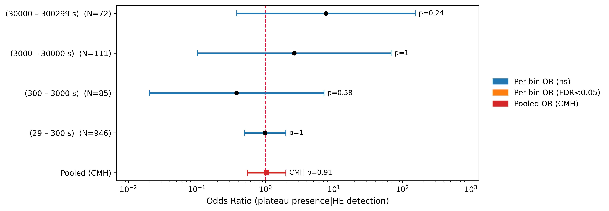
图注：Forest plot for the association between HE detection and plateau phases in GRBs stratified in bins of $t_{XRT}$ and pooled together with the CMH method. When the data are stratified by $t_{XRT}$ any apparent suppression of plateaus in the HE GRB group disappears with no association between the two variables.
对应解读：建议重点查看的图表第5项；关键图表逐图导读图5；平台段与高能探测在控制/分层 \(t_XRT\) 后的比较。
入选理由：这是全文最关键的因果混杂诊断图，直接展示按 \(t_XRT\) 分箱并用 CMH 方法合并后，高能探测与平台段之间的表观关联消失，置信区间相对空假设 OR=1 的关系能直接支撑日报的核心结论。
来源与置信度：\(arxiv_source\)；high；\(arxiv_source\) / main.tex:figure[8]
Fig09
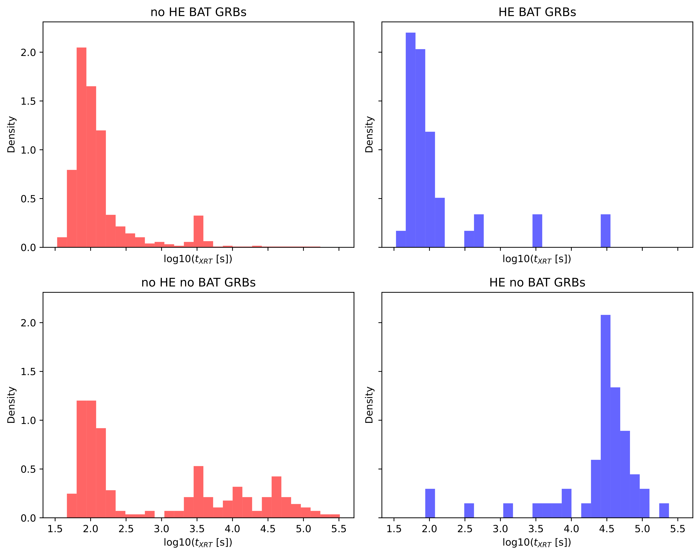
图注：Histograms of the distribution of $\log_{10}(t_{XRT})$ for the GRB samples with (blue, right) and without (red, left) HE detection, with and without \(\textit{Swift}-BAT\) triggering (upper and lower row respectively).
对应解读：建议重点查看的图表第1项；关键图表逐图导读图1；样本 log10(t_XRT) 分布及高能/非高能样本观测起始时间差异。
入选理由：该图直接给出高能探测与非高能探测样本的 \(t_XRT\) 分布，是判断观测起始时间混杂效应的第一证据；同时区分有无 Swift-BAT 触发，有助于理解样本选择和早期跟进偏差。
来源与置信度：\(arxiv_source\)；high；\(arxiv_source\) / main.tex:figure[9]
Fig06
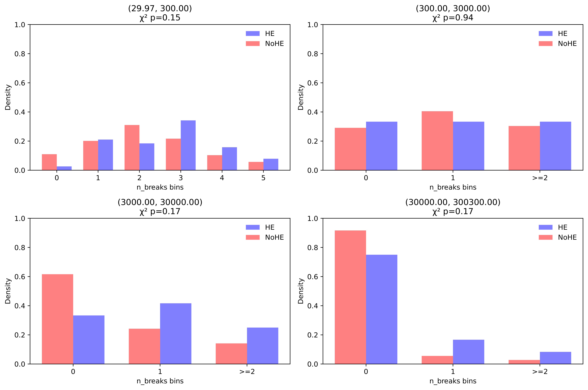
图注：Comparison of the distributions of the number of breakpoints between GRBs with (blue) and without (red) a HE detection divided in four $t_{XRT}$ bins. Further details are reported in Table \(\ref{tab:complexity_bins}.\)
对应解读：建议重点查看的图表第2项和第5项；关键图表逐图导读图3/图5；断裂数复杂度在不同 \(t_XRT\) 分箱内的高能与非高能比较。
入选理由：该图把断裂数分布按 \(t_XRT\) 分成四个区间，直接检验复杂度差异是否只是由观测起始时间驱动；它比总体分布更能支持“控制 \(t_XRT\) 后高能标签没有独立解释力”的结论。
来源与置信度：\(arxiv_source\)；high；\(arxiv_source\) / main.tex:figure[6]
Fig05
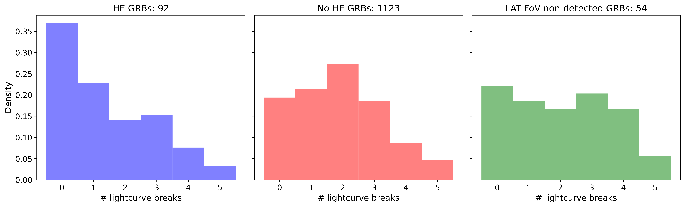
图注：Comparison of the distributions of the number of breakpoints for three groups of GRBs: GRBs with a detection at HE/VHE (blue, left), GRBs observed in X-rays, without a detection at HE (red, center), and GRBs observed in X-rays, without a detection at HE, but inside the \(\textit{Fermi}-LAT\) FoV at the moment of triggering (green, right) \(\citep{2016ApJ...822...68A}.\) This group was used as a cross-check to verify that the distribution of $n_{breaks}$ for GRBs without HE detections (in red) was not biased by \(\textit{Fermi}-LAT\) non-observations.
对应解读：建议重点查看的图表第4项；关键图表逐图导读图4；未控制 \(t_XRT\) 时高能探测暴与非高能探测暴的总体形态复杂度比较。
入选理由：该图展示高能探测、非高能探测以及 LAT 视场内非探测样本的断裂数总体分布，是表观相关性的来源图；与 Fig06 对照后能清楚说明为什么必须控制 \(t_XRT\)。
来源与置信度：\(arxiv_source\)；high；\(arxiv_source\) / main.tex:figure[5]
Fig07
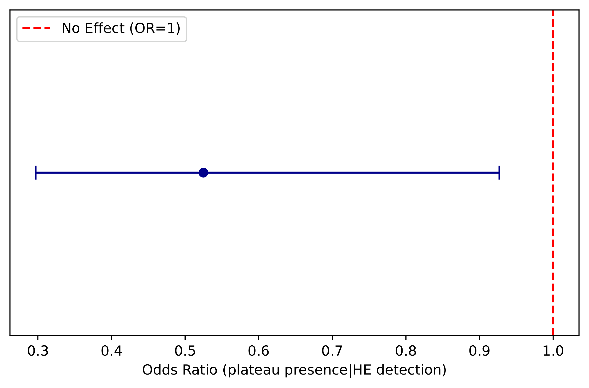
图注：Forest plot showing the OR and 95\% confidence interval for the association between HE detection and plateau phases in GRBs (OR of plateaus given a HE detection). The vertical dashed red line marks the null hypothesis of no association $(OR = 1)$.
对应解读：建议重点查看的图表第4项；关键图表逐图导读图4/图6；未分层时高能探测与平台段关联的森林图。
入选理由：该图用 OR 和 95% 置信区间量化高能探测与平台段的总体关联，适合作为未控制混杂变量时的基准结果；与 Fig08 的分层森林图成对阅读，能直观看到显著性如何消失。
来源与置信度：\(arxiv_source\)；high；\(arxiv_source\) / main.tex:figure[7]
Fig04
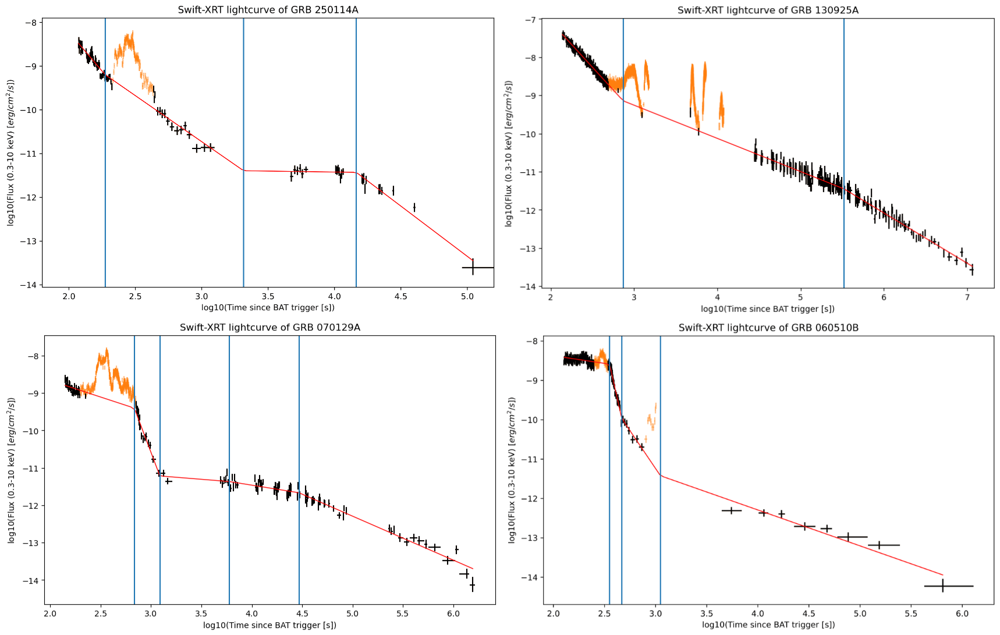
图注：Some examples of GRB light-curves analyzed with this new automatic analysis. The flares are identified and removed (orange). The breakpoints are reported as vertical blue lines.
对应解读：建议重点查看的图表第6项；关键图表逐图导读图2；自动化光变曲线拟合、耀发剔除和断裂识别示例。
入选理由：该图展示自动管线如何在实际 XRT 光变曲线上标记并移除耀发、识别断裂点，是理解断裂数、复杂度和平台标签来源的必要方法学图；比单独的耀发识别细节图更适合嵌入日报正文。
来源与置信度：\(arxiv_source\)；high；\(arxiv_source\) / main.tex:figure[4]
强相关工作
这篇工作直接回应了伽马暴高能辐射与 X 射线余辉形态之间的相关性讨论。相似工作通常会比较 Fermi-LAT 探测暴和普通 Swift 暴的 X 射线平台、能量注入迹象、prompt 能量、红移和余辉亮度。检索时可用关键词“GRB LAT X-ray plateau correlation”、“Swift-XRT afterglow morphology”、“GRB high-energy emission afterglow complexity”和“Fermi-LAT gamma-ray bursts XRT plateau”。本文与这些工作的差别在于，它强调完整目录、统一自动化处理和 \(t_{\rm XRT}\) 控制，而不是从少量高能暴样本中寻找物理图像。
基础理论背景包括 Swift 时代 X 射线余辉标准形态、外激波同步辐射闭合关系、能量注入模型和 Fermi-LAT GRB 高能辐射综述。可能存在张力的观点是：若某些研究声称 LAT 暴更常有平台或更复杂 X 射线余辉，本文会认为这类结论至少需要重新做观测起始时间和样本选择控制。读者还应检索“Dainotti relation selection effects”、“GRB plateau central engine magnetar”、“LAT GRB external shock synchrotron limit”等关键词，因为平台物理和 GeV 辐射起源本身仍是开放问题。
相似工作：
- https://arxiv.org/abs/2605.25644
- https://ui.adsabs.harvard.edu/
基础理论 / 方法工作：
- https://arxiv.org/abs/astro-ph/0602060
- https://arxiv.org/abs/0902.3016
- https://arxiv.org/abs/0809.3058
- https://arxiv.org/abs/1303.2908
相反观点 / 张力线索：
- https://ui.adsabs.harvard.edu/
6. Compact dusty starbursts at cosmic noon linked to high-energy neutrinos
- 来源：arXiv / astro-ph.HE
- 链接：https://arxiv.org/abs/2605.25412v1
- 作者：Yuji Urata, Kuiyun Huang, Bunyo Hatsukade, Mansi Kasliwal, Shigeo S. Kimura, Yuichi Matsuda, Yusuke Miyamoto, Hiroshi Nagai
- 评分：novelty 8/10，importance 8/10，relevance 9/10，final 9.35/10
- 推荐理由：提出IceCube事件定位区内透镜化紧致尘埃星暴作为高能中微子候选对应体，并讨论DSFG对弥散中微子背景的贡献；多信使高能天体物理相关性高，但单事件关联仍需谨慎。
中文题目：宇宙正午的致密尘埃星暴星系可能与高能中微子相连
做了什么：这篇文章讨论 IceCube 高能中微子事件 IC 210922A 的一个可能电磁对应体：位于其 90% 定位区域内的强亚毫米源 JCMT0402-0424。作者用 ALMA 成像和引力透镜建模确认它是一个四重透镜化、红移为 \(z=2.988\) 的致密尘埃星暴星系，核心气体丰富、星形成强烈，但没有当前灵敏度下显著的 \(\gamma\) 射线或 X 射线对应体。论文的核心结论不是声称单个源已被确定为中微子源，而是指出：在位置符合、偶然重合概率较低、场内缺少更好候选体、以及源本身具备宇宙线量热器条件的情况下，JCMT0402-0424 是 IC 210922A 定位区内最有说服力的候选电磁对应体；从总体上看，宇宙正午的致密尘埃星暴星系可能对弥散高能中微子背景有非忽略贡献。
为什么重要：高能天体中微子的来源仍未解决。过去较明确的多信使线索主要集中在耀变体、潮汐瓦解事件或少数暂现源，但这些源难以解释全部弥散中微子通量。尘埃星暴星系在 \(z\sim1-4\) 的宇宙正午时期数量多、气体密度高、恒星形成率大，理论上适合作为宇宙线质子发生 \(pp\) 相互作用的量热器。这项工作把一个具体 IceCube 事件与一个经 ALMA 解析的致密星暴核心联系起来，使“星形成星系贡献中微子背景”这个长期假说获得了更直接的观测案例。
理论 / 观测 / 仪器方法价值：这篇文章的价值主要在三方面。观测上，它展示了快速中微子跟踪中不能只盯着光学、X 射线和 \(\gamma\) 射线亮源，深亚毫米观测可以找到被尘埃遮蔽但物理上很有潜力的候选体。方法上，它把 ALMA 高分辨率成像、强透镜重建、偶然重合概率估计和多波段非探测约束合在一起，给出了评估 DSFG 候选中微子源的一套流程。理论上，它强化了致密星暴核心作为 \(pp\) 中微子工厂的可检验图像，并提示人口统计贡献可能比单源显著性更重要。
为什么应该关注：如果你关心高能中微子起源，这篇文章值得看，因为它把注意力从少数明亮活动星系核扩展到宇宙正午的尘埃星暴星系，这类源可能单个不起眼、总体却重要。如果你关心星系演化，它也提供了一个新窗口：中微子可能追踪被尘埃隐藏的恒星形成、气体压缩和宇宙线加速。即使最终 JCMT0402-0424 不是 IC 210922A 的真实源，这篇文章仍然提出了一个可操作的观测策略：用亚毫米干涉阵和透镜放大效应去寻找高红移紧致星暴中的非热粒子加速。
展开详细解读：文章讲解、背景、理论、重点章节、图表与相关工作
文章详细讲解
科学问题：IceCube 已经测到稳定存在的 TeV 到 PeV 量级弥散天体中微子背景，但把单个事件可靠地归因到具体电磁源非常困难。问题不只是定位误差大，还在于不同候选源族的电磁表现差异很大：耀变体可能有明亮 \(\gamma\) 射线，潮汐瓦解事件可能有光学和 X 射线暂现，而尘埃星暴星系的大部分能量被尘埃吸收后在远红外和亚毫米释放。本文关心的是，宇宙正午的高红移尘埃星暴星系是否能在单事件层面给出可辨识线索，并在总体上贡献一部分高能中微子背景。
作者怎么做：论文聚焦 IceCube 事件 IC 210922A 的定位区域，报告其中存在一个极强亚毫米源 JCMT0402-0424。该源经 ALMA 高分辨率观测后被解析为一个四重强引力透镜系统，源红移为 \(z=2.988\)。作者进行透镜建模以恢复本征源结构，强调被放大的不是一个普通扩展盘，而是一个致密、气体丰富、强星形成的核心。与此同时，作者检查 \(\gamma\) 射线和 X 射线数据，指出没有达到当前仪器灵敏度的明亮高能电磁对应体，因此这个候选体并非传统耀变体式的显眼高能源。
关键结果：第一，JCMT0402-0424 位于 IC 210922A 的 90% 包含区域内，位置上满足候选对应体的基本要求。第二，作为极端亚毫米源，它在该类中微子定位区内偶然出现的概率被估计为低于约 1%，这让它比普通场星系更值得关注。第三，透镜重建显示源区高度致密，具备高气体柱密度和高星形成率密度的物理条件，这正是 \(pp\) 相互作用高效发生、宇宙线能量较大比例转化为介子并产生中微子的环境。第四，作者并未声称单个 DSFG 能产生非常高的可探测中微子计数，而是把单源关联与人口统计图像结合起来，认为宇宙正午致密星暴可以对弥散中微子背景作出非忽略贡献。
局限和下一步：这类研究最大的限制仍是单事件关联的统计显著性。IceCube 角分辨率、源表面密度、透镜选择偏差以及后验选择效应都会影响偶然重合概率。缺少 \(\gamma\) 射线和 X 射线探测并不一定排除强宇宙线加速，因为星暴环境可能对高能光子不透明，但它也限制了对伴随电磁级联的诊断。下一步需要系统地对 IceCube 事件定位区进行深亚毫米巡天，构造未事后筛选的 DSFG 样本，并结合 KM3NeT、IceCube-Gen2、CTA、ALMA 和未来远红外任务检验空间相关、能量相关和群体贡献。
背景知识
研究对象是尘埃星形成星系，特别是高红移亚毫米亮源。它们通常具有高恒星形成率、大量分子气体和强尘埃遮蔽，紫外和光学星光被吸收后以远红外到亚毫米波段再辐射。所谓宇宙正午指大约 \(z\sim1-4\) 的时期，宇宙恒星形成率密度和黑洞增长活动都处于高峰，因此如果星形成驱动的宇宙线加速在宇宙史上重要，中微子产生也很可能在这一时期达到较高水平。
历史上，星暴星系作为高能中微子源的想法并不新。局域宇宙中的 M82、NGC 253、Arp 220 等一直被视为宇宙线量热器候选，因为超新星爆发和星风可提供宇宙线注入，致密气体为 \(pp\) 碰撞提供靶物质。不过局域星暴数量有限，单个源离得近但总功率不足；高红移 DSFG 总数多、总红外光度大，却难以逐个在高能 \(\gamma\) 射线中探测。因此，群体贡献和单事件对应体识别一直存在张力。
观测背景上，高能中微子定位通常比光学暂现源定位差很多，尤其是级联事件；即便是径迹事件，90% 区域内也可能包含大量星系和活动星系核。传统跟踪观测优先找 \(\gamma\) 射线耀变体、X 射线暂现或光学爆发，但这对尘埃遮蔽、\(\gamma\) 射线吸收严重的源族不友好。亚毫米波段能直接选出被尘埃隐藏的高红移星暴，ALMA 还能解析透镜化源的本征结构，因此它为中微子对应体搜寻提供了互补通道。
为什么现在值得重新看：一方面，IceCube 积累的事件数和实时警报系统已让单事件跟踪成为常规；另一方面，ALMA 的角分辨率和灵敏度足以在高红移透镜化星系中恢复百秒差距到千秒差距尺度的星暴核心。强透镜虽然带来选择偏差和建模复杂性，但也提供了天然放大镜，使原本无法解析的宇宙正午致密核心进入观测范围。
该领域常见误区之一是把“没有 \(\gamma\) 射线亮对应体”等同于“不能产生高能中微子”。在致密星暴中，\(\gamma\) 射线可能因 \(\gamma\gamma\) 吸收、级联和宇宙红外背景衰减而难以直接看到，而中微子可以逃逸。另一个误区是把一次空间重合作为确定关联；实际上需要同时考虑先验源密度、定位概率、源物理条件、多波段限制和同类事件统计。本文的意义在于提供了一个较强候选案例，但仍应被理解为概率性、多信使证据链，而非决定性认证。
基础理论 / 方法脉络
基础物理图像是：强星形成区中的大质量恒星快速演化并发生核心坍缩超新星，超新星遗迹、星风终端激波和星暴驱动外流可加速宇宙线质子。如果这些质子处在高气体密度环境中，它们在逃逸前会多次与星际介质中的质子碰撞，产生带电和中性介子。带电介子衰变产生中微子，中性介子衰变产生 \(\gamma\) 射线。若宇宙线损失时间短于逃逸时间，这个系统接近“质子量热器”。
对 DSFG 而言，关键不是仅有高总红外光度，而是气体是否集中到足够小的尺度。相同的恒星形成率若分布在几千秒差距的盘上，气体面密度和宇宙线靶密度可能较低；若压缩到几百秒差距核心，\(pp\) 光学深度和磁约束都可能显著增强。本文强调 ALMA 和透镜重建得到的“致密核心”正是为了判断这种量热器条件，而不仅是给源贴上“亚毫米亮星系”的标签。
观测量之间的连接通常经过红外光度、星形成率、气体质量、源尺寸、表面密度和中微子光度。远红外通量经谱能量分布拟合给出本征红外光度，需扣除透镜放大因子；分子气体质量可由 CO 或尘埃连续谱估计；源平面半光半径给出星形成率面密度和气体柱密度。这些量再进入宇宙线注入功率和 \(pp\) 效率估计。
统计上，单个中微子事件与一个天体的对应关系通常不能用“在误差圈里”简单判断，而要用定位概率密度、候选源面密度和源物理权重。本文提到的低偶然重合概率本质上是问：在类似 IceCube 定位区域内，随机遇到同样极端亚毫米源的概率有多大。这个概率依赖于源计数、通量阈值、透镜化源比例和搜索区域定义，因此读者需要把它看成证据链的一环，而非独立判决。
常见退化包括透镜放大因子与本征光度的退化、尘埃温度与红外光度的退化、气体质量转换因子与金属丰度或激发条件的退化，以及宇宙线逃逸时间与磁场强度的退化。系统误差还包括中微子定位非高斯尾、事后选择候选体造成的 look-elsewhere effect、以及多波段非探测的灵敏度不均匀性。本文的结论应在这些退化背景下理解：它提出了强候选和可检验源族，而不是完成了唯一对应体认证。
公式与推导
第一步从星暴把恒星形成转化为宇宙线功率的能量账本开始。若核心坍缩超新星率为 \(R_{\rm SN}\)，每次超新星释放动能 \(E_{\rm SN}\)，宇宙线加速效率为 \(\eta_{\rm CR}\)，则宇宙线功率可写为
这里 \(L_{\rm CR}\) 是注入到非热质子和核子的功率。这个式子假设星暴中的宇宙线主要由恒星形成相关爆炸和激波供应，适用于无明显活动星系核主导的估计。
第二步把红外光度与恒星形成率联系起来。对尘埃遮蔽强、年轻恒星辐射大多被再处理到红外的系统，可近似使用
其中 \(L_{\rm IR}\) 是 \(8-1000\,\mu{\rm m}\) 积分红外光度，\(K_{\rm IR}\) 依赖初始质量函数和恒星形成历史。再用 \(R_{\rm SN}=\xi_{\rm SN}{\rm SFR}\) 可把可观测的红外光度转化为 \(L_{\rm CR}\)。
第三步估计 \(pp\) 相互作用效率。宇宙线质子在气体数密度 \(n\) 中的碰撞损失时间为
其中 \(\sigma_{pp}\) 是非弹性 \(pp\) 截面，\(\kappa_{pp}\) 是非弹性能量损失比例，\(c\) 是光速。若宇宙线逃逸时间为 \(t_{\rm esc}\)，则近似相互作用效率为
当 \(t_{\rm esc}\gg t_{pp}\) 时，系统接近量热器，\(f_{pp}\to1\)。
第四步把带电介子衰变分配到中微子能量。对 \(pp\) 源，所有味道混合后的中微子总光度可粗略写作
这里系数 \(1/2\) 表示非弹性能量中相当一部分进入带电介子并最终分配给中微子，实际值随谱形、介子多重数和源内冷却而变。这个式子给出从星暴物理条件到中微子功率的最小阶梯。
第五步从源光度得到地球观测通量。若源位于光度距离 \(d_L\)，发射谱为 \(L_{E_\nu'}\)，观测能量 \(E_\nu=E_\nu'/(1+z)\)，则
若源被强透镜放大，观测到的电磁通量需乘以放大因子 \(\mu\)，但中微子事件率同样会沿同一视线被引力透镜放大；恢复本征源性质时必须使用 \(L_{\rm int}=L_{\rm obs}/\mu\)。
第六步把中微子通量转化为 IceCube 期望事件数。对有效面积 \(A_{\rm eff}(E_\nu,\delta)\)、曝光时间 \(T\) 和源谱 \(\phi_\nu(E_\nu)\)，期望计数为
这里 \(\delta\) 是源赤纬，决定探测器响应和地球吸收。单个 DSFG 的 \(N_{\nu}\) 往往小于 1，因此统计上更自然的是讨论群体贡献。
第七步描述空间关联的概率。若中微子定位概率密度为 \(P_{\rm IC}(\Omega)\)，候选源位于方向 \(\Omega_s\)，则位置权重可写成
若天空上超过某亚毫米通量阈值的源面密度为 \(\Sigma(>S)\)，搜索区域面积为 \(A\)，随机至少出现一个此类源的概率近似为
当 \(P_{\rm cc}\) 低于约百分之一量级时，空间重合不再像普通场源那样容易由随机背景解释，但仍需考虑事后选择。
第八步从群体角度写弥散强度。若共动中微子发射率为 \(Q_\nu(E_\nu',z)\)，则全天平均强度为
该式说明为什么宇宙正午重要：即使单个源事件数小，只要 \(Q_\nu\) 在 \(z\sim1-4\) 随恒星形成率密度显著增强，积分贡献就可能非忽略。
模型拟合 / 应用方法
本文涉及的第一类拟合是 ALMA 成像与强透镜建模。观测平面上的多重像位置、形态、亮度分布和可能的速度结构用于约束透镜质量模型与源平面亮度分布。拟合量包括透镜质量中心、椭率、位置角、爱因斯坦半径、外部剪切，以及源平面的大小、形态和通量。读者应关注模型是否直接在 \(uv\) 平面拟合，还是在清图像平面拟合；前者通常能更直接处理干涉阵噪声协方差和点扩散函数。
第二类拟合是谱能量分布和物理量估计。亚毫米到远红外通量可用改正黑体或更完整尘埃模板拟合，得到尘埃温度、红外光度和尘埃质量；这些结果再转化为恒星形成率和气体质量。这里最重要的退化是尘埃温度与红移、尘埃发射率指数与尘埃质量、透镜放大因子与本征光度之间的耦合。由于本文源红移已给定为 \(z=2.988\)，温度—红移退化减轻，但透镜模型仍会影响本征紧致性和表面密度。
第三类统计是中微子事件与候选源的空间关联评估。严格做法应把 IceCube 的二维定位概率图、候选源表面密度、源通量或物理权重、以及搜索策略的先验纳入似然或贝叶斯因子。本文摘要中强调的低偶然重合概率说明 JCMT0402-0424 不是容易随机遇到的普通亚毫米源；但读者需要检查概率定义是否包括事后选择，例如是否先看见了源再定义“极端源”阈值，是否考虑同一定位区内所有可见候选源类别。
第四类约束来自 \(\gamma\) 射线和 X 射线非探测。非探测不是空信息，而是给出上限：若模型预测的伴随 \(\gamma\) 射线或 X 射线通量超过仪器灵敏度，就会被排除。对于星暴源，\(\gamma\) 射线上限要结合内部吸收和宇宙背景光吸收解释；对隐藏活动星系核，X 射线上限要考虑柱密度和 Compton-thick 遮蔽。残差诊断上，应看非探测上限是否真正触及模型参数空间，而不是只说明“没有发现”。
模型可能失败的地方包括：候选源只是误差区内罕见但无关的透镜化 DSFG；真实中微子源是更暗、更暂现或电磁沉默的对象；JCMT0402-0424 的中微子产额被高估，因为宇宙线逃逸快于 \(pp\) 损失；或者源中存在弱活动星系核，改变红外和非热功率解释。实际应用上，这类方法最有价值的不是单次判案，而是形成样本：对多批 IceCube 事件做统一亚毫米跟踪，检验 DSFG 过密度、通量分布和中微子能量之间是否出现统计相关。
重点章节 / 结果段落怎么读
数据与目标选择部分应先看 IC 210922A 的定位、事件类型、能量代理量和 90% 包含区域定义。这里决定了空间关联的基础权重，也决定搜索面积和偶然重合概率。读者应特别注意定位图是否呈非高斯形状，以及 JCMT0402-0424 位于概率图的高权重区域还是仅在边缘区域。
ALMA 观测与成像部分是本文的技术核心。应关注观测频段、角分辨率、灵敏度、校准质量、连续谱信噪比，以及是否有谱线用于红移或气体动力学约束。对透镜化源来说，图像中多重像的相对位置和通量比是后续模型可信度的关键。
透镜建模与源平面重建部分需要细读。这里给出放大因子、源平面尺寸、本征红外光度和紧致星暴核心性质。建议检查模型残差、参数不确定度、是否考虑外部剪切或透镜环境，以及结果是否对源光分布参数化敏感。
多波段对应体与非探测部分决定它与传统高能源族的区别。读者应看 \(\gamma\) 射线、X 射线、光学和射电约束是否排除了明亮耀变体或显著未遮蔽活动星系核，同时是否仍允许隐藏核或纯星暴解释。非探测上限与中微子模型的关系比“有没有探测到”更重要。
讨论与人口统计部分应作为结论的重心阅读。本文真正的强主张是“致密核心 DSFG 可以是值得系统考虑的中微子源族”，而不是“这一个源已经被唯一确认为 IC 210922A 的来源”。读者应检查作者如何从单源候选推广到弥散背景贡献，以及该推广是否使用合理的源密度、红移分布、星形成率函数和宇宙线效率。
建议重点查看的图表
-
IceCube 定位概率图叠加多波段源位置：应看 JCMT0402-0424 是否落在高概率区域、90% 包含轮廓如何定义、场内是否还有其他高能或亚毫米候选体。
-
ALMA 连续谱图和多重像形态：应看四重像是否清晰、信噪比是否足够、像之间通量比和形态是否支持强透镜解释，而非多个无关源混合。
-
透镜模型和残差图：应看数据、模型、残差三联图；残差是否接近噪声、是否在弧像或核心附近有系统结构，这直接影响源尺寸和放大因子。
-
源平面重建图：应看本征星暴核心半光半径、亮度集中度和可能的多组分结构。紧致性是中微子物理解释的关键量，不只是形态学细节。
-
谱能量分布图：应看亚毫米、红外、射电、X 射线和 \(\gamma\) 射线上限如何共同约束星形成率、尘埃温度和隐藏活动星系核。特别要看模型线是否违反高能上限。
-
偶然重合概率或源计数诊断：应看作者用什么亚毫米通量阈值、什么面积、什么源计数模型得到低于约 1% 的概率。阈值是否事后选取是关键。
-
群体贡献图或中微子背景比较图：应看致密 DSFG 的预测强度相对 IceCube 弥散通量的位置，以及不确定区间是否跨越数量级。
关键图表逐图导读
图 1：建议首先读 IceCube 定位图。横纵轴通常是赤经和赤纬，背景颜色或等值线表示 IC 210922A 的定位概率密度，轮廓给出 50% 或 90% 包含区域。JCMT0402-0424 应以标记点显示，其他候选源可能叠加在同一图上。读图陷阱是不要把“在 90% 圈内”等同于“高概率位置”；应看它相对于概率峰的位置，以及定位图是否有长尾。
图 2：ALMA 连续谱图应展示透镜化的多重像。坐标轴是天球偏移，颜色或等高线是亚毫米表面亮度，合成束大小通常画在角落。若四重像明显且围绕透镜质量中心分布，强透镜解释更可信。读图时要注意等高线起始倍数、负等高线和噪声水平，避免把清图算法伪影误认为真实结构。
图 3：透镜模型图通常包括观测图、最佳模型图和残差图。关键不是模型看起来像不像，而是残差是否在高信噪比弧像处留下相干结构。若残差系统性偏正或偏负，源平面尺寸、放大因子和紧致核心结论可能受影响。还应检查临界线、 caustic 与源位置关系，因为靠近 caustic 的小变化会导致 \(\mu\) 大幅改变。
图 4：源平面重建图应以物理尺度或角尺度显示本征星暴区域。横纵轴可能是源平面偏移，颜色代表本征亮度或星形成率面密度。主要结论应来自半光半径小、亮度高度集中、表面密度高。读图陷阱是透镜反演的有效分辨率并非处处相同，靠近 caustic 的方向可能被过度拉伸或更好约束。
图 5：谱能量分布图通常横轴为频率或波长，纵轴为通量密度或 \(\nu F_\nu\)。数据点包括亚毫米和射电测量，上限包括 X 射线与 \(\gamma\) 射线；模型线可能区分尘埃星形成、同步辐射、自由—自由辐射和可能活动星系核分量。读者应检查红外峰是否由足够数据约束，以及高能上限是否真的排除了明亮 AGN，而不是只排除了未遮蔽 AGN。
图 6：偶然重合概率或源计数图若存在，横轴可能是亚毫米通量阈值，纵轴是累计源面密度或随机重合概率。JCMT0402-0424 所在阈值应落在低概率区域。读图陷阱是累计源计数受透镜化亮端统计影响很大，且搜索面积选择会线性影响小概率近似。
图 7：群体中微子贡献图若存在，横轴通常是中微子能量，纵轴是 \(E_\nu^2\Phi_\nu\)。IceCube 弥散通量作为带状区域，DSFG 模型作为曲线或阴影带。应看模型是否只解释一部分背景，是否在 \(\gamma\) 射线背景约束下仍可行，以及不确定带是否主要来自 \(f_{pp}\)、\(\eta_{\rm CR}\) 或 DSFG 光度函数。
论文原图 / 可嵌入图片
Fig03
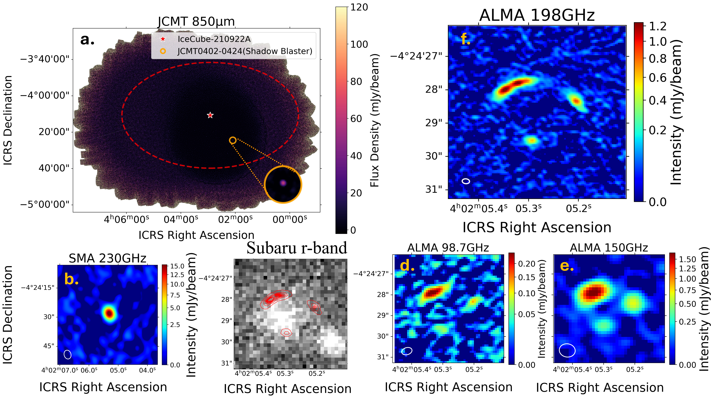
图注：\(\textbf{Multi-wavelength identification of the IC\,210922A counterpart.}\) \(\textbf{a,}\) JCMT/SCUBA-2 850\,$\mu$m map of the IC\,210922A field. The red dashed ellipse marks the 90\% IceCube localization, and the orange circle indicates the bright submillimeter source JCMT0402$-$0424 (“Shadow Blaster”; 63\,mJy). Inset: zoom-in on the source. \(\textbf{b,}\) SMA 230\,GHz image providing a refined position. \(\textbf{c,}\) Subaru/HSC $r$-band image with ALMA Band~5 198\,GHz continuum contours overlaid, showing the foreground lensing galaxy. The contours are shown at approximately 3--11$\sigma$. \(\textbf{d,}\) ALMA 98.7\,GHz continuum map. \(\textbf{e,}\) ALMA 150\,GHz continuum map. \(\textbf{f,}\) ALMA 198\,GHz continuum map. The ALMA data resolve the source into four lensed images forming a quadruply imaged configuration, in contrast to the single compact appearance in the SMA map. White ellipses denote the synthesized beams.
对应解读：对应“建议重点查看的图表”第1项 IceCube 定位概率图叠加多波段源位置，以及第2项 ALMA 连续谱图和多重像形态；也对应关键图表导读中的图1、图2。
入选理由：这张图同时给出 IC 210922A 的90%定位区域、JCMT0402-0424 的亚毫米位置，以及 ALMA 多频连续谱解析出的四重透镜像，是支撑“候选体位于 IceCube 定位区内”和“该源是强透镜化致密 DSFG”两条核心论证的最直接证据。相比单独的后续物理模型图，它首先建立了空间关联和多波段识别的观测基础。
来源与置信度：\(arxiv_source\)；high；\(arxiv_source\) / ms-revise-v3-author.tex:figure[3]
Fig06
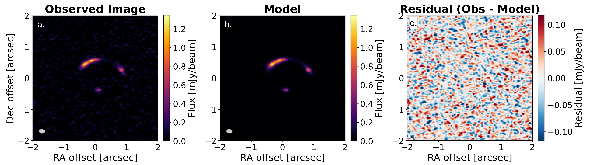
图注：\(\textbf{ALMA Band~5 (198\,GHz) gravitational lens modeling.}\) \(\textbf{a,}\) Observed continuum image. \(\textbf{b,}\) Best-fit model image based on a two-component source model (\textit{Point Source + S\'ersic}). \(\textbf{c,}\) Residual map (observed $-$ model). All offsets are relative to the lens center. The color bars represent the flux density (a, b) and residuals (c), all in mJy\,beam$^{-1}$. The synthesized beam is shown as a gray ellipse in the lower-left corner of panels \(\textbf{a}\) and \(\textbf{b}.\) The featureless residual map, consistent with the image noise, indicates that the model accurately reproduces the morphology of both the compact and extended components of the lensed source.
对应解读：对应“建议重点查看的图表”第3项 透镜模型和残差图，并支撑模型拟合段落中关于 ALMA 成像与强透镜建模、残差诊断、放大因子和源尺寸可靠性的讨论。
入选理由：该图明确包含观测图、最佳透镜模型图和残差图三联结构，正好对应日报强调的关键诊断：模型是否重现四重像形态、残差是否接近噪声、紧致核心和扩展分量是否可靠。它比一般连续谱图更能检验源平面尺寸、放大率和紧致星暴结论是否由稳健模型支持。
来源与置信度：\(arxiv_source\)；high；\(arxiv_source\) / ms-revise-v3-author.tex:figure[6]
Fig07
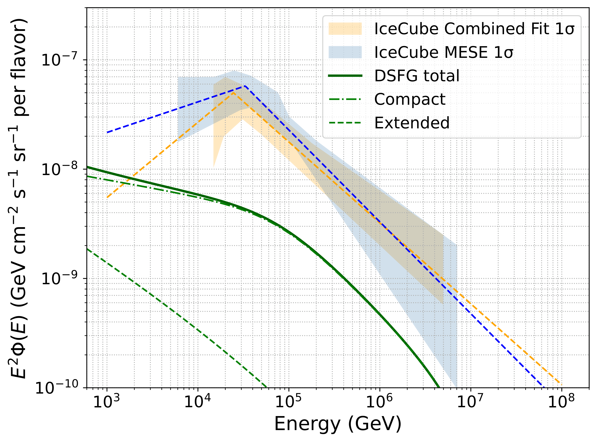
图注：\(\textbf{Diffuse neutrino flux from DSFGs compared to IceCube spectra.}\) Compact-core DSFGs (dash-dotted green) and extended DSFGs (dashed green) are shown separately, with their sum in dark green. For comparison, the IceCube best-fit broken power-law spectra are overplotted (orange dashed: Combined Fit, blue dashed: MESE), with shaded bands denoting the 1$\sigma$ uncertainties\citep{Abbasi2025}. The vertical axis shows the per-flavor flux $E^{2}\Phi(E)$. \(\textbf{The compact-core component provides the dominant share of the DSFG contribution around 10--100\,TeV, while the extended component contributes mainly at lower energies.}\)
对应解读：对应“建议重点查看的图表”第7项 群体贡献图或中微子背景比较图，以及关键图表导读中的图7。
入选理由：这张图直接把 compact-core DSFG、extended DSFG 及其总和与 IceCube 弥散中微子谱进行比较，是论文从单个候选源推广到群体贡献的关键证据。它展示了致密核心 DSFG 在10--100 TeV能段的相对贡献，并给出与 IceCube 不确定带的关系，最能支撑日报中关于“非忽略但非全部解释弥散背景”的解读。
来源与置信度：\(arxiv_source\)；high；\(arxiv_source\) / ms-revise-v3-author.tex:figure[7]
Fig05
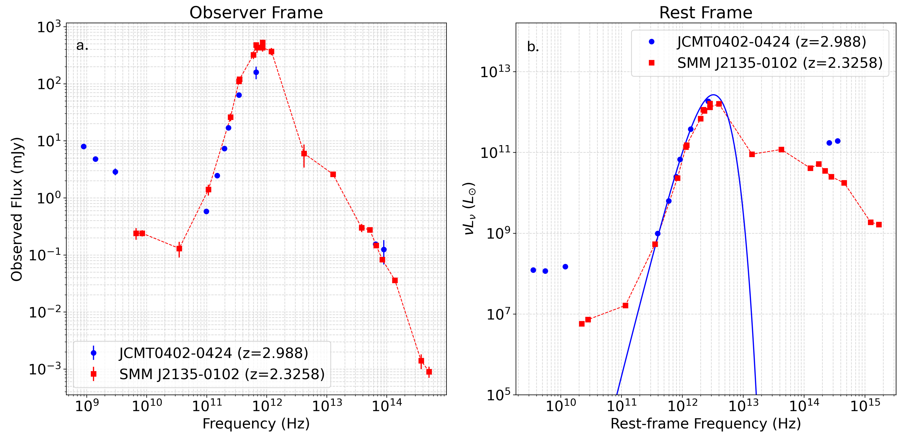
图注：\(\textbf{Broad-band SED of the IC\,210922A counterpart and comparison to a compact-core DSFG.}\) \(\textbf{a,}\) Observer-frame SED (flux density in mJy) compiled from ALMA, SMA, and JCMT photometry for JCMT0402$-$0424 at $z=2.988$ (blue points). \(\textbf{b,}\) Rest-frame SED plotted as $\nu L_\nu$ ($L_\odot$). The blue curve shows the optically-thin modified-blackbody fit to the far-IR/submm data (WISE excluded), yielding $T_{\rm dust}=22.66\pm1.70$\,K and $\beta=3.00\pm0.12$. For context, red squares (with dashed connector) show the archetypal lensed compact-core DSFG SMM~J2135$-$0102 at $z=2.3258$. Integrating the best-fit model over 8--1000\,$\mu$m and correcting by the extended-source magnification $\mu_{\rm ext}=12.20$ gives $L_{\rm IR}=2.72\times10^{12}\,L_\odot$ ($1.04\times10^{46}$\,erg\,s$^{-1}$), consistent with a ULIRG at $z\approx3$. Error bars are $1\sigma$.
对应解读：对应“建议重点查看的图表”第5项 谱能量分布图，以及模型拟合段落中关于尘埃温度、红外光度、星形成率和透镜放大修正的讨论。
入选理由：该图给出 JCMT0402-0424 从 ALMA、SMA、JCMT 汇总的远红外/亚毫米 SED，并展示改正黑体拟合得到的尘埃温度、红外光度和本征 ULIRG 性质，是判断其是否为强星暴 DSFG 的核心图。虽然候选图说明中未包含 X 射线和 γ 射线上限，因此不能完整支撑高能非探测约束，但它仍是物理量估计和星形成解释的主要依据。
来源与置信度：\(arxiv_source\)；high；\(arxiv_source\) / ms-revise-v3-author.tex:figure[5]
Fig04
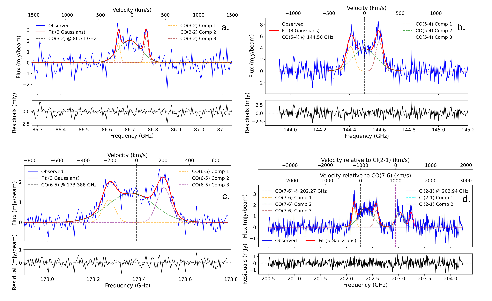
图注：\(\textbf{ALMA spectra and multi-component Gaussian fits.}\) \(\textbf{a,}\) Band~3 CO(3--2) spectrum, modeled with three Gaussian components (narrow--broad--narrow). \(\textbf{b,}\) Band~4 CO(5--4) spectrum, also described by three Gaussian components. \(\textbf{c,}\) Band~5 CO(6--5) spectrum, modeled with three Gaussian components. \(\textbf{d,}\) Band~5 spectrum including CO(7--6) and C\,\textsc{i}, requiring five Gaussians (three CO components and two [C\,\(\textsc{i}\)] components). In each panel, the observed spectrum is shown in blue, the total fit in red, individual Gaussian components as dashed lines, and the residuals (data--model) in black below. Vertical dashed lines mark the expected observed frequencies (CO(3--2) 86.71\,GHz; CO(5--4) 144.50\,GHz; CO(6--5) 173.39\,GHz; CO(7--6) 202.27\,GHz; C\,\textsc{i} 202.94\,GHz). Fitting results, including $\chi^2/\mathrm{dof}$, are summarized in Extended Data Table~1.
对应解读：对应模型拟合段落中关于谱线、多组分拟合、气体丰富环境和红移确认的辅助讨论。
入选理由：这张图展示 CO 和 [C I] 谱线及多高斯拟合残差，可辅助说明源的分子气体性质、动力学复杂性和 z=2.988 红移依据。它没有直接出现在日报建议重点查看的七类主图中，也不直接展示 IceCube 关联、透镜残差、SED 高能约束或中微子背景贡献，因此科学优先级低于定位、透镜模型、SED 和群体通量图。
来源与置信度：\(arxiv_source\)；high；\(arxiv_source\) / ms-revise-v3-author.tex:figure[4]
强相关工作
这项工作与星暴星系作为中微子源的长期理论线索直接相连。经典思路是局域星暴和 luminous infrared galaxies 中的超新星驱动宇宙线在高密度气体中发生 \(pp\) 碰撞，从而产生中微子和 \(\gamma\) 射线；后来研究把这个图像推广到高红移 DSFG 和整个宇宙恒星形成史。建议检索关键词包括 “starburst galaxies high-energy neutrinos”, “dusty star-forming galaxies neutrino background”, “cosmic ray calorimeter DSFG”, “pp neutrino production starburst”。
它也与多信使对应体搜寻中的其他候选源族形成对照。TXS 0506+056 代表耀变体关联路线，AT2019dsg 和其他潮汐瓦解事件代表暂现源路线，而 NGC 1068 提供了附近遮蔽活动星系核或复合星暴核的强线索。本文的不同点是强调高红移、尘埃遮蔽、亚毫米亮、紧致星暴核心，这会导致电磁对应体在传统高能波段不显眼。相反观点主要来自 \(\gamma\) 射线背景约束、单源中微子产额不足、以及空间重合的后验统计问题；检索关键词可用 “IceCube source association chance coincidence”, “gamma-ray constraints starburst neutrinos”, “NGC 1068 IceCube neutrinos”, “TXS 0506+056 multimessenger”。
相似工作：
- https://arxiv.org/abs/2605.25412
- https://arxiv.org/abs/1807.08816
- https://arxiv.org/abs/2211.09972
基础理论 / 方法工作：
- https://arxiv.org/abs/1304.5229
- https://arxiv.org/abs/0809.2409
- https://arxiv.org/abs/1108.2227
相反观点 / 张力线索：
- https://arxiv.org/abs/1511.00688
- https://arxiv.org/abs/1601.03044
- https://arxiv.org/abs/1907.12339
7. Pitch-Angle Scattering of Cosmic Rays: Confronting Theory with Observations
- 来源：arXiv / astro-ph.HE
- 链接：https://arxiv.org/abs/2605.24143v1
- 作者：Huirong Yan, Siqi Zhao, Ming Zhang
- 评分：novelty 8/10，importance 8/10，relevance 9/10，final 9.35/10
- 推荐理由：Directly addresses cosmic-ray propagation by confronting pitch-angle scattering theory with Tibet AS-gamma small-scale anisotropy data, arguing for fast-mode turbulence and constraining local interstellar plasma parameters; high relevance to cosmic-ray astrophysics.
中文题目：宇宙线俯仰角散射：用观测检验湍流散射理论
做了什么：这篇文章把西藏 AS\(\gamma\) 实验的宇宙线小尺度各向异性数据，转化为局域星际介质中的俯仰角扩散系数 \(D_{\mu\mu}\)，并与不同磁湍流散射理论比较。作者发现，传统由阿尔芬型湍流主导的散射难以解释推断出的 \(D_{\mu\mu}\)，而在温暖电离介质中受阻尼塑形的准 slab 快磁声模可以很好匹配数据。结论指向：局域星际介质中的宇宙线散射主要由可压缩快模湍流控制，局域泡可能处于低等离子体 \(\beta\simeq 0.1\) 状态，湍流幅度约为 \(\delta B/B_0\approx 0.5\)。
为什么重要：宇宙线传播模型长期依赖扩散系数和散射率的经验参数化，但这些参数背后的湍流物理并不确定。本文的重要性在于，它尝试从宇宙线小尺度各向异性反推相空间中的俯仰角散射，并直接区分阿尔芬湍流与快模湍流的贡献。这把“宇宙线扩散系数怎么取”从拟合参数问题推进到可观测检验的等离子体湍流问题。
理论 / 观测 / 仪器方法价值：对理论而言，文章为快模主导散射提供了一个观测约束路径；对观测而言，它展示了宇宙线小尺度各向异性不只是天空图形态，也能转化为局域星际介质湍流参数；对方法而言，它把 \(D_{\mu\mu}\)、湍流谱、阻尼尺度、局域泡磁场和等离子体参数放进同一比较框架。
为什么应该关注：如果你关心银河系宇宙线传播、TeV–PeV 宇宙线各向异性、局域泡物理或星际湍流，这篇都值得看。它挑战了“阿尔芬湍流自然给出宇宙线散射”的常见直觉，并说明局域环境的等离子体参数会直接影响我们从地球附近观测到的宇宙线方向分布。
展开详细解读：文章讲解、背景、理论、重点章节、图表与相关工作
文章详细讲解
科学问题：宇宙线在银河磁场中并不是简单沿磁力线自由流动，而是被磁湍流持续散射，最终表现为近似扩散传播。扩散近似的微观基础是俯仰角 \(\mu\) 的相空间扩散，即宇宙线速度方向相对平均磁场 \(B_0\) 的夹角不断被湍流扰动。问题在于，究竟是哪类湍流模控制了局域星际介质中的散射：不可压缩、各向异性的阿尔芬模，还是可压缩、近似各向同性但会被阻尼重塑的快磁声模？这不是细节问题，因为不同湍流模给出的 \(D_{\mu\mu}\) 对 \(\mu\)、粒子刚度、湍流幅度和等离子体 \(\beta\) 的依赖完全不同。
作者怎么做：文章使用西藏 AS\(\gamma\) 实验观测到的宇宙线小尺度各向异性作为约束。小尺度各向异性包含宇宙线在到达地球前经历局域散射的痕迹，因此可以通过相空间输运关系反推出局域星际介质中的俯仰角扩散系数。作者将从数据推断出的 \(D_{\mu\mu}\) 与几类理论预测进行对照，包括常规阿尔芬湍流散射、不同几何结构的湍流谱，以及在温暖电离介质中受阻尼影响的准 slab 快模散射。比较的关键不是只看归一化，而是看 \(D_{\mu\mu}\) 随 \(\mu\) 的形状、强度和可由合理局域介质参数支持的范围。
关键结果：常规阿尔芬型湍流难以同时解释推断出的散射强度和俯仰角依赖。原因与阿尔芬湍流的强各向异性有关：Goldreich–Sridhar 型级联会使与宇宙线回旋共振所需的平行波数成分不足，导致散射效率偏低，尤其不容易产生观测要求的 \(D_{\mu\mu}\) 形状。相比之下，温暖电离介质中被阻尼塑形的准 slab 快模可以给出很好的匹配。这个结果被作者解释为宇宙线散射主要由快模湍流控制的直接证据，并进一步约束局域泡环境为低 \(\beta\simeq 0.1\)、可压缩湍流显著、快模幅度约 \(\delta B/B_0\approx 0.5\)。
局限和下一步：需要谨慎的是，从小尺度各向异性反推 \(D_{\mu\mu}\) 依赖若干几何和边界假设，例如局域平均磁场方向、太阳调制或日球层边界效应是否完全可忽略、源项梯度与局域散射之间是否可分离等。理论端也有不确定性：快模阻尼取决于电离度、温度、密度、磁场强度和湍流注入尺度，而这些局域泡参数本身存在测量误差。下一步最有价值的是把不同能段、不同实验的小尺度各向异性联合起来，检查 \(D_{\mu\mu}\) 的刚度依赖是否同样支持快模主导，并与星际闪烁、偏振、局域磁场重建和日球层外边界模型交叉验证。
背景知识
研究对象是银河宇宙线在局域星际介质中的传播。宇宙线带电粒子在平均磁场 \(B_0\) 中做回旋运动，同时受到磁湍流扰动。若散射足够频繁，宏观上就可以用扩散方程描述宇宙线密度和各向异性；若散射较弱或强烈依赖俯仰角，就会在天空图上留下非平凡的小尺度结构。TeV 量级宇宙线的小尺度各向异性尤其敏感于地球附近数个到数十个平均自由程范围内的磁场与湍流结构。
历史上，宇宙线传播模型常用经验扩散系数 \(D(R)\) 描述刚度 \(R\) 依赖，并通过次级与初级核素比、放射性时钟、伽马射线弥散辐射和各向异性幅度来约束。但这些宏观约束不能唯一告诉我们微观散射机制。准线性理论曾经给出一个清晰图像：粒子与满足回旋共振条件的磁扰动相互作用，产生俯仰角扩散。然而，真实星际湍流不是一维 slab 波谱，而是包含阿尔芬模、慢模、快模及各自的各向异性和阻尼过程。
观测背景是过去二十多年中，多台地面阵列和水切伦科实验看到了 TeV–PeV 宇宙线到达方向的中小尺度各向异性。西藏 AS\(\gamma\)、Milagro、ARGO-YBJ、HAWC、IceCube 等实验都表明，宇宙线天空图并非简单的偶极子，而有角尺度从十几度到几十度的结构。这些结构一方面可能与源分布、局域磁场和全局梯度有关，另一方面也可能是局域散射矩阵或磁通道效应的投影。
为什么现在值得重新看：一是宇宙线各向异性数据质量越来越高，可以讨论小尺度结构的能量依赖和角尺度分解；二是等离子体湍流理论对不同 MHD 模的散射效率已有更细致预测，特别是快模阻尼和阿尔芬模各向异性的影响；三是局域泡和日球层外局域星际介质的观测约束正在改善，使得把散射理论放进真实环境参数中成为可能。
常见误区有两个。第一，把“磁湍流存在”直接等同于“宇宙线会被有效散射”，忽略了共振波数、各向异性和阻尼会大幅改变散射率。第二，把观测到的宇宙线各向异性全部归因于源分布或银河尺度梯度，而忽略局域几十到几百 parsec 内的磁场结构可能重新塑造到达方向分布。本文正是试图用小尺度各向异性去反推局域散射，而不是只拟合一个宏观扩散系数。
基础理论 / 方法脉络
基本物理图像从带电粒子在平均磁场中的回旋开始。宇宙线粒子的动量 \(p\)、电荷 \(Ze\)、速度 \(v\) 决定其回旋半径 \(r_L\)，而磁扰动 \(\delta B\) 会在粒子沿磁力线运动时改变其俯仰角。俯仰角余弦 \(\mu\) 表示速度与平均磁场方向的夹角信息，\(\mu\approx 1\) 是几乎沿磁场前进，\(\mu\approx 0\) 是接近垂直磁场运动。若 \(\mu\) 被湍流随机改变，粒子分布函数 \(f(s,\mu,p,t)\) 就满足含 \(D_{\mu\mu}\) 的 Fokker–Planck 型输运方程。
俯仰角扩散系数 \(D_{\mu\mu}\) 是本文的核心量。它描述单位时间内 \(\mu\) 的均方变化，通常由粒子与磁湍流的回旋共振决定。准线性理论中，共振条件要求波的平行波数 \(k_\parallel\) 与粒子平行速度 \(v\mu\) 和回旋频率 \(\Omega\) 匹配。这意味着湍流谱中不是所有能量都有效参与散射，只有满足共振条件并具有合适偏振和几何的成分才重要。
不同湍流模给出的散射差异很大。阿尔芬湍流在强湍流理论中通常呈现 \(k_\perp\gg k_\parallel\) 的各向异性级联，因此在所需 \(k_\parallel\) 上的功率可能不足，导致回旋共振散射偏弱。快磁声模是可压缩模，传播速度与磁声速度有关，几何上更接近各向同性；但快模容易受碰撞、Landau 阻尼或离子-中性阻尼影响。本文强调的是，温暖电离介质中的阻尼会把快模谱塑造成准 slab 形态，从而提高与宇宙线回旋运动相关的平行波数功率。
观测方法的逻辑是从宇宙线天空各向异性反推局域散射。若粒子分布在局域平均磁场方向上存在梯度或边界条件，散射矩阵会把相空间分布转换成到达方向分布。小尺度各向异性不是单纯的噪声，而可能编码了 \(D_{\mu\mu}(\mu)\) 的角向结构。把观测图展开为角向结构或与输运解比较，就可估计哪些 \(\mu\) 区间需要强散射、哪些区间散射较弱。
主要退化和系统误差包括：局域磁场方向与强度的不确定性会改变 \(\mu\) 的定义；宇宙线能谱和实验能量响应会把不同刚度的粒子混合；日球层可能在 TeV 以下仍产生方向调制；源项梯度、局域磁瓶或磁通道效应可能与真实的 \(D_{\mu\mu}\) 形状部分退化。因此本文的意义不在于给出一个无模型的 \(D_{\mu\mu}\)，而在于检验某类湍流理论是否能在合理参数范围内同时满足强度和形状要求。
公式与推导
第一步是粒子在平均磁场 \(B_0\) 中的基本回旋尺度。对电荷数 \(Z\)、动量 \(p\)、速度 \(v\) 的宇宙线，回旋频率与 Larmor 半径可写为
这里 \(\gamma\) 是洛伦兹因子，\(m\) 是粒子质量，\(c\) 是光速，\(v_\perp\) 是垂直于 \(B_0\) 的速度。这个尺度决定粒子能与哪些波数的磁扰动发生有效共振。
第二步定义俯仰角变量。若 \(\theta\) 是粒子速度与 \(B_0\) 的夹角，则
这里 \(v_\parallel\) 和 \(v_\perp\) 分别是平行和垂直速度。\(D_{\mu\mu}\) 衡量湍流对这个变量的随机化效率。
第三步写出沿平均磁场的一维相空间输运方程。在忽略能量损失和源项的局域近似下，分布函数 \(f(s,\mu,t)\) 满足
其中 \(s\) 是沿 \(B_0\) 的坐标。左边是粒子沿磁场流动，右边是俯仰角扩散。观测到达方向结构本质上约束的就是右边这个散射算子。
第四步把 \(D_{\mu\mu}\) 与微观随机过程连接。Fokker–Planck 系数定义为
这个表达式说明 \(D_{\mu\mu}\) 不是宏观拟合常数，而是单位时间俯仰角随机游走的方差增长率。
第五步引入回旋共振条件。对频率 \(\omega\)、平行波数 \(k_\parallel\) 的 MHD 波，准线性共振满足
对高能宇宙线与低频 MHD 湍流，常取 \(\omega\ll k_\parallel v\)，则主要共振波数满足 \(k_\parallel\simeq \Omega/(v|\mu|)\)。这一步解释了为什么湍流的平行波数谱特别关键。
第六步给出准线性散射的示意表达。对磁功率谱张量中能与粒子共振的分量 \(P_B(k_\parallel,k_\perp)\)，可写成标度形式
这里 \(\delta(\cdot)\) 选择满足共振条件的波模。阿尔芬湍流和快模湍流的主要区别，就体现在 \(P_B(\mathbf{k})\) 的几何分布、偏振和阻尼截断上。
第七步从俯仰角散射得到平行平均自由程。若粒子分布接近各向同性，平行平均自由程常写为
这个式子说明 \(D_{\mu\mu}\) 在小值区域会强烈控制 \(\lambda_\parallel\)，尤其是 \(\mu\approx 0\) 附近的散射空洞可能显著增大平均自由程。
第八步连接到宏观扩散系数。平行扩散系数为
银河宇宙线传播模型中常用的 \(\kappa_\parallel\) 或刚度扩散系数，微观上应由 \(D_{\mu\mu}\) 积分给出。因此本文比较 \(D_{\mu\mu}\) 比只比较 \(\kappa_\parallel\) 更有辨别力。
第九步给出等离子体 \(\beta\) 的物理约束。热压与磁压之比为
其中 \(n\) 是粒子数密度，\(T\) 是温度，\(k_B\) 是 Boltzmann 常数。本文从快模阻尼与散射匹配中推断局域环境倾向于 \(\beta\simeq 0.1\)，意味着磁压高于热压，快模传播和阻尼行为也随之改变。
第十步用似然或残差表达理论与反演结果的比较。若观测反演给出 \(\hat D_i\) 及协方差矩阵 \(C_{ij}\)，理论模型给出 \(D_i(\boldsymbol{\Theta})\)，可构造
这里 \(\boldsymbol{\Theta}\) 包括 \(B_0\)、\(\delta B/B_0\)、\(\beta\)、注入尺度和阻尼参数等。这个统计量帮助判断阿尔芬模或快模模型是否在合理参数空间内真正匹配数据。
模型拟合 / 应用方法
本文或同类工作的拟合对象不是普通意义上的光谱通量，而是从宇宙线到达方向各向异性中推断出的 \(D_{\mu\mu}(\mu)\) 及其形状。实际比较中，理论模型参数包括平均磁场 \(B_0\)、湍流幅度 \(\delta B/B_0\)、湍流注入尺度、等离子体密度 \(n\)、温度 \(T\)、电离状态、等离子体 \(\beta\) 以及快模阻尼尺度。模型输出则是给定能量或刚度范围内的 \(D_{\mu\mu}\) 曲线。
似然层面，最直接的方法是把反演得到的 \(D_{\mu\mu}\) 分箱值与理论曲线比较，使用 \(\chi^2\) 或高斯似然；如果反演误差非高斯或不同 \(\mu\) 分箱强相关，就需要完整协方差矩阵或直接在天空图层面做前向建模。更稳健的做法是从湍流模型生成相空间输运解，再投影为预期的到达方向各向异性图，与实验曝光、角分辨率和能量响应卷积后比较。
参数退化很关键。增大 \(\delta B/B_0\) 通常会提高散射率，但改变 \(B_0\) 也会移动回旋共振波数；改变 \(\beta\) 会影响快模相速度和阻尼；改变注入尺度会改变共振尺度处的湍流功率。因而单独由一个能段的 \(D_{\mu\mu}\) 很难唯一确定所有等离子体参数。本文结论有力之处在于，阿尔芬湍流的问题主要是形状和效率同时不合，而快模模型能在物理合理的局域泡参数下同时满足两者。
残差诊断应重点看 \(\mu\) 依赖，而不是只看归一化。如果某模型只需整体乘一个因子就可匹配，说明湍流幅度或能量标定可能是主要不确定性；如果残差随 \(\mu\) 系统偏离，说明湍流几何、共振函数或阻尼模型可能错误。特别是 \(\mu\approx 0\) 附近常有准线性理论的“九十度散射问题”，任何声称精确匹配的模型都需要说明这一段如何处理。
模型可能失败的地方包括：观测各向异性可能受到日球层尾部或局域磁结构影响，而不完全反映均匀局域星际介质；实验能量响应宽会混合不同刚度粒子的散射特征；理论上准线性近似在 \(\delta B/B_0\approx 0.5\) 时已经不算严格弱扰动，非线性轨道效应可能改变散射率。因此实际应用时，应把本文结果看作“快模主导散射的强证据和参数约束”，而不是最终的唯一反演。
重点章节 / 结果段落怎么读
数据/样本部分应先看作者如何从西藏 AS\(\gamma\) 的小尺度各向异性提取可与理论比较的量。重点不是只看天空图好不好看，而是看他们如何定义局域平均磁场方向、如何把到达方向转换到俯仰角变量 \(\mu\)，以及如何处理能量响应和角分辨率。
方法部分应关注从各向异性到 \(D_{\mu\mu}\) 的反演或推断框架。读者需要检查输运方程的边界条件、是否假设稳态、是否假设局域介质均匀、是否把源项梯度与散射项分开，以及误差是否在不同 \(\mu\) 分箱之间相关。
理论比较部分是全文核心。建议把阿尔芬湍流模型和快模湍流模型分开读：阿尔芬模的关键是各向异性导致共振功率不足；快模的关键是可压缩性、阻尼和准 slab 几何如何共同塑造 \(D_{\mu\mu}\)。不要只记住“快模更好”，要看它在哪些 \(\mu\) 区间、哪些参数范围内更好。
主结果部分应看作者如何得到 \(\beta\simeq 0.1\) 与 \(\delta B/B_0\approx 0.5\)。这里需要区分直接观测量和模型派生量：\(D_{\mu\mu}\) 是从各向异性推断的中间量，而 \(\beta\) 和 \(\delta B/B_0\) 是通过湍流模型匹配得到的物理解释。
讨论和稳健性部分应重点检查作者是否讨论日球层影响、局域泡参数不确定性、九十度散射、湍流阻尼模型和非线性效应。如果这些系统误差被充分量化，文章结论会更强；如果只是定性说明，读者应在引用时保留条件语气。
建议重点查看的图表
-
宇宙线小尺度各向异性天空图：看角尺度、显著性分布和是否与局域磁场方向有对应关系，注意曝光不均匀和大尺度成分扣除方式。
-
反演得到的 \(D_{\mu\mu}(\mu)\) 曲线或数据点：看误差条、\(\mu\) 分箱、\(\mu\approx 0\) 与 \(|\mu|\approx 1\) 的行为，以及是否有协方差说明。
-
阿尔芬湍流模型与观测的比较图：看模型线是否只是归一化不足，还是形状也系统偏离；特别关注强各向异性导致的共振功率缺口。
-
快模或准 slab 快模模型与观测的比较图：看阻尼后谱形如何改变 \(D_{\mu\mu}\)，以及匹配是否依赖很窄的参数范围。
-
\(\beta\)、\(B_0\)、\(n\)、\(T\)、\(\delta B/B_0\) 的参数约束图或表：看置信区间是否闭合，是否存在多解，以及局域泡观测值是否落在允许范围内。
-
残差或显著性诊断：看不同 \(\mu\) 区间是否有系统残差。若残差呈同号连续偏离，说明理论模型可能仍缺少物理项。
-
稳健性检验图表：看改变能量范围、磁场方向、阻尼模型或湍流注入尺度后结论是否仍支持快模主导。
关键图表逐图导读
图 1：若论文给出西藏 AS\(\gamma\) 的小尺度各向异性天空图，横纵轴通常是赤经和赤纬，颜色表示相对强度或显著性。读图时要确认大尺度偶极或低阶多极是否已被扣除，因为滤波方式会影响小尺度结构。主要结论应是这些结构提供了局域散射的信息；读图陷阱是把颜色斑块直接解释成源的位置。
图 2：若给出从观测反推的 \(D_{\mu\mu}(\mu)\)，横轴应是俯仰角余弦 \(\mu\) 或 \(|\mu|\)，纵轴是俯仰角扩散系数。数据点代表反演结果，误差条代表统计与可能的系统不确定性。读者应关注曲线在 \(\mu\approx 0\) 和中等 \(|\mu|\) 的形状，因为这是区分湍流几何的关键。陷阱是只比较纵轴归一化而忽略形状。
图 3：阿尔芬湍流理论曲线与数据的比较通常会显示模型散射率偏低或在某些 \(\mu\) 区间偏离。横轴仍可能是 \(\mu\)，纵轴为 \(D_{\mu\mu}\)。模型线若改变湍流幅度也无法同时覆盖所有点，就说明问题来自各向异性谱形而非简单能量不足。读图时要看作者是否展示了合理参数范围，而不是只画一条代表线。
图 4：快模或准 slab 快模模型图应显示阻尼对湍流谱和 \(D_{\mu\mu}\) 的影响。若横轴是波数，需看共振波数附近的功率；若横轴是 \(\mu\)，需看理论线是否穿过观测误差带。主要结论是受温暖电离介质阻尼塑形后的快模能自然给出观测要求的散射。陷阱是忽视阻尼参数的不确定性。
图 5：参数约束图可能以 \(\beta\) 和 \(\delta B/B_0\) 为坐标，颜色或等值线表示拟合优度。应检查最佳拟合是否在 \(\beta\simeq 0.1\) 附近，以及 \(\delta B/B_0\approx 0.5\) 是否有宽容许区间。若等值线很窄，说明结论对输入参数敏感；若与局域泡独立观测不相容，则需要重新评估模型。
图 6：稳健性或残差图应显示 \([\hat D-D_{\rm model}]/\sigma\) 随 \(\mu\) 的变化，或不同假设下的模型族。理想情况是快模模型残差无系统趋势，而阿尔芬模型残差呈结构化偏离。读图陷阱是把统计误差当作全部误差，忽略局域磁场方向、能量响应和天空图滤波带来的系统项。
论文原图 / 可嵌入图片
Fig02
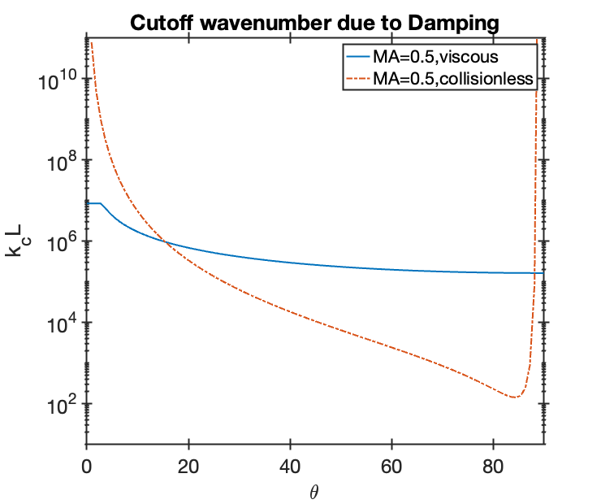
图注：Cutoff scale of fast modes due to viscous and collisionless damping in a warm ionized plasma with $\beta\sim 0.1$ as a function of the wave propagation angle to the magnetic field direction.
对应解读：对应“建议重点查看的图表”第4项快模/准 slab 快模模型与观测比较中的阻尼物理，以及“关键图表逐图导读”图4关于阻尼如何重塑快模谱形的说明。
入选理由：候选图中唯一真实存在的图，展示温暖电离等离子体、低β约0.1条件下快模因黏滞与无碰撞阻尼产生的截断尺度随传播角变化。这直接支撑论文核心论点：快模湍流在局域星际介质中会被阻尼塑形成准slab结构，从而影响宇宙线俯仰角散射。虽然它不是直接的D_{\mu\mu}(\mu)观测-模型叠加图，也不显示残差或参数置信区间，但它解释了快模模型为何能区别于常规阿尔芬湍流，是日报中快模阻尼机制解读最相关的候选图。
来源与置信度：\(arxiv_source\)；high；\(arxiv_source\) / \(aniso_Duu.tex\):figure[2]
强相关工作
这项工作与宇宙线小尺度各向异性观测传统直接相关。Milagro、ARGO-YBJ、HAWC、IceCube 和西藏 AS\(\gamma\) 等实验都报告过 TeV–PeV 宇宙线天空图中的中小尺度结构。过去很多讨论集中在局域源、磁场透镜、日球层尾部或各向异性级联；本文的不同点是把这些结构用于约束俯仰角散射函数 \(D_{\mu\mu}\)，并进一步检验 MHD 湍流模的物理性质。建议检索关键词包括“cosmic ray small-scale anisotropy Tibet AS gamma”、“pitch-angle diffusion cosmic rays”、“local interstellar turbulence cosmic ray scattering”。
理论上，本文接续了准线性宇宙线散射理论、Goldreich–Sridhar 阿尔芬湍流各向异性、以及 Yan 与 Lazarian 等关于快模主导宇宙线散射的系列工作。潜在张力在于：许多银河宇宙线传播模型默认散射可用经验幂律扩散系数概括，而本文强调局域 \(D_{\mu\mu}\) 的角向结构和湍流模组成非常重要。相反观点或需要对照的方向包括非线性散射理论、九十度散射问题、日球层调制解释以及局域磁通道导致的小尺度各向异性。建议检索关键词包括“Goldreich Sridhar turbulence cosmic ray scattering”、“fast modes cosmic ray scattering Yan Lazarian”、“heliosphere cosmic ray anisotropy TeV”。
相似工作：
- https://arxiv.org/abs/2605.24143
- https://arxiv.org/abs/0803.1317
- https://arxiv.org/abs/0801.3827
基础理论 / 方法工作：
- https://ui.adsabs.harvard.edu/abs/1966MNRAS.133...67J/abstract
- https://ui.adsabs.harvard.edu/abs/1995ApJ...438..763G/abstract
- https://ui.adsabs.harvard.edu/abs/2002PhRvL..89v1102C/abstract
相反观点 / 张力线索：
- https://arxiv.org/abs/1207.1436
- https://arxiv.org/abs/1406.6165
8. On the maximum neutrino flux of blazars in the one-zone leptohadronic model
- 来源：arXiv / astro-ph.HE
- 链接：https://arxiv.org/abs/2605.24107v1
- 作者：Wei-Jian Li, Rui Xue, Ze-Rui Wang, Dingrong Xiong
- 评分：novelty 8/10，importance 8/10，relevance 9/10，final 9.35/10
- 推荐理由：High-priority multimessenger paper: analytically and numerically constrains maximum neutrino flux from blazars in one-zone leptohadronic models using X-ray limits, with direct implications for IceCube blazar associations and hadronic jet scenarios.
中文题目：一-zone轻强子模型中耀变体可产生的最大中微子通量
做了什么：这篇论文问的是一个很直接的问题：如果把耀变体喷流的非热辐射区压缩成常用的单一区域，并允许其中的质子通过光强子过程产生高能中微子，那么在不违反已观测 X 射线通量的前提下，中微子通量最多能有多大？作者给出一个解析估算，把最大中微子输出写成观测 X 射线通量、辐射区大小、磁场、多普勒因子、质子谱和目标光子场等参数的函数，并用一批中微子候选耀变体做数值轻强子谱能量分布建模。解析估算和数值结果基本一致：单区模型给出的中微子通量很难显著超过既有单区研究的水平，通常仍低于 IceCube 关联事件暗示的通量。因此，若耀变体确实贡献了相当一部分高能中微子，产生区很可能不是标准单区辐射区本身，而需要多区结构、喷流底部、热冕或更复杂的光子场。
为什么重要：耀变体一直是河外高能中微子的热门候选源，但许多拟合可以通过调参看似提高中微子产额。本文的重要性在于把“X 射线不能超标”这个硬约束变成了近似解析上限：光强子相互作用越强，伴随的电磁级联和次级电子同步辐射越容易出现在 X 射线波段。也就是说，X 射线观测并不是附属数据，而是限制单区耀变体中微子模型的关键量尺。
理论 / 观测 / 仪器方法价值：理论上，它给出了一套快速判断单区轻强子模型可行性的上限公式，可用于在昂贵的全数值拟合前筛掉不可行参数空间。观测上，它说明同时段、多波段尤其 X 射线覆盖对检验 IceCube—耀变体关联是决定性的。方法上，它把解析物理图像和数值 SED 拟合连接起来，帮助读者分辨“能拟合电磁谱”与“能解释中微子事件”之间的差别。
为什么应该关注：如果你关心高能中微子起源，这篇文章是在给耀变体单区模型划一条物理红线：不是说耀变体不能产生中微子，而是标准单区区块很可能不够亮。它直接影响未来如何设计多信使观测、如何解释候选关联源、以及是否应把注意力转向喷流底部、遮蔽辐射场、BLR/尘埃环、多区碰撞或热冕等更紧凑、更高光子密度的环境。
展开详细解读：文章讲解、背景、理论、重点章节、图表与相关工作
文章详细讲解
科学问题：IceCube 已经探测到河外高能中微子背景，并报道过若干与耀变体方向或活动期相近的候选关联。耀变体喷流中存在强非热粒子和相对论多普勒增强，因此自然被视为候选源。但标准单区轻强子模型有一个核心困难：为了让质子通过 \(p\gamma\) 相互作用有效地产生 \(\pi^\pm\) 并衰变出中微子，需要较高目标光子密度或极高质子功率；同一过程又不可避免地产生 \(\pi^0\) 伽马射线、Bethe-Heitler 对产生以及次级电子正电子级联，这些电磁能量最终常落在 X 射线到伽马射线波段。若模型为了抬高中微子通量而让级联辐射超过观测 X 射线通量，就会被数据排除。
作者怎么做：论文的核心贡献是构造一个解析上限，而不是只给出逐源数值拟合。作者把单区喷流区看成半径为 \(R'\)、磁场为 \(B'\)、多普勒因子为 \(\delta\) 的均匀运动辐射区，电子负责主要低能到高能电磁 SED，质子与同步或外部目标光子发生 \(p\gamma\) 相互作用。然后利用光强子效率、次级电子注入、同步冷却和观测 X 射线通量之间的关系，推导出在给定 \(F_X\) 约束下允许的最大中微子通量。接着他们选取一批中微子候选耀变体，用更完整的数值轻强子模型计算 SED 和中微子谱，并检验解析公式是否能捕捉真实上限。
关键结果：解析与数值结果相互印证，说明 X 射线约束确实是单区模型中限制中微子通量的主导因素之一。即使在尽量有利的参数选择下，模型预测的中微子通量也没有显著高于此前单区研究的结果，仍普遍低于从 IceCube 候选事件或关联样本反推的通量水平。换句话说，单区轻强子模型不是完全不能产中微子，而是其最大可允许通量往往不足以解释那些需要较高瞬时中微子亮度的耀变体关联。
局限和下一步：解析上限依赖若干简化，例如单区均匀性、目标光子谱近似、稳态注入、特定质子谱形以及 X 射线级联辐射的能量落点。真实喷流可能存在速度剪切、湍流小区、磁重联 plasmoid、喷流底部高密度辐射场、外部 BLR/尘埃环光子场或黑洞热冕；这些环境会改变 \(p\gamma\) 效率和电磁级联逃逸路径。下一步应把本文给出的单区上限作为基准，系统比较多区模型、时变模型和紧凑外部光子场模型是否能在不违反同步多波段数据的前提下提高中微子产额。
背景知识
研究对象是耀变体，即相对论喷流几乎沿视线方向的活动星系核。它们的 SED 通常有两个宽峰：低能峰多由电子同步辐射产生，高能峰在纯轻子模型中由同步自康普顿或外康普顿解释；在轻强子模型中，高能辐射和中微子则可部分来自超高能质子的 \(p\gamma\) 过程、质子同步辐射和级联辐射。由于多普勒增强，耀变体在伽马射线天区中占据重要地位，也自然进入高能中微子源候选名单。
历史问题可以概括为“能量预算和伴随辐射”。早期强子喷流模型可以产生高能中微子，但常需要很大的质子功率，甚至超过爱丁顿功率很多；而如果目标光子密度足够高，电磁级联又会产生明显 X 射线或 MeV—GeV 辐射。TXS 0506+056 与 IceCube-170922A 的关联让这个问题变得具体：某些耀变体似乎在中微子天空中留下痕迹，但同时其多波段 SED 又限制了可容忍的强子成分。
观测背景上，IceCube 给出的是方向、能量 proxy、到达时间和事件显著性，而耀变体观测给出的是多波段通量、光变和谱形。两者很难直接一一对应，因为单个中微子事件的泊松涨落很大，角分辨率有限，耀变体天区源密度也高。正因如此，任何声称解释某个关联事件的模型都必须回答：在观测窗口内，源的中微子通量是否足够高，并且伴随电磁辐射是否仍低于 Swift、NuSTAR、Fermi-LAT 等观测约束。
为什么现在值得重新看：过去很多论文用全数值模型对单个源做拟合，但不同作者的参数选择、目标光子场处理和级联计算不同，使得结论不容易横向比较。一个解析最大通量公式能提供共同标尺：只要有 X 射线通量、红移和大致喷流参数，就能估算单区模型是否还有希望。随着候选关联源样本增多，逐源全模拟之前的快速物理筛选变得更重要。
常见误区之一是把“耀变体很亮”直接等同于“中微子很亮”。事实上，伽马射线亮度高可能只是电子逆康普顿强，并不保证 \(p\gamma\) 效率高。另一个误区是只看 GeV—TeV 伽马射线约束，忽略 X 射线；但在许多单区轻强子参数下，级联能量恰恰会堆积在 X 射线，因而 X 射线给出的上限更硬。还有一个误区是认为调高质子功率总能提高中微子通量，实际上伴随级联和喷流功率预算会很快把模型推到不可接受区域。
基础理论 / 方法脉络
基础物理图像是：相对论喷流中的电子和质子被加速成非热分布，电子通过同步辐射和逆康普顿辐射形成观测到的双峰 SED；质子若能达到足够高能量，就会与喷流内或外部光子发生 \(p\gamma\) 相互作用，产生 \(\Delta\) 共振或多 pion 产物。带电 pion 衰变给出中微子，不带电 pion 衰变给出高能伽马射线。后者通常不能自由逃逸，而会通过 \(\gamma\gamma\) 吸收产生电子对，触发电磁级联。
单区模型假设所有关键辐射都来自一个半径 \(R'\)、磁场 \(B'\)、多普勒因子 \(\delta\) 的共动球形区域。撇号表示喷流共动系。观测时间尺度 \(t_{\rm var}\) 与源区大小相关，通常有 \(R'\lesssim c t_{\rm var}\delta/(1+z)\)。这个假设的好处是参数少、可拟合；坏处是同一个光子场既要解释电磁 SED，又作为 \(p\gamma\) 目标场，因此多波段数据对中微子产额的约束非常直接。
本文最关键的量是 \(p\gamma\) 效率 \(f_{p\gamma}\)、质子注入功率 \(L'_p\)、目标光子密度 \(n'_\gamma\)、级联或次级电子同步辐射产生的 X 射线通量 \(F_X\)，以及由此得到的中微子通量 \(F_\nu\)。若 \(f_{p\gamma}\) 很小，必须提高 \(L'_p\) 才能得到可观中微子；若提高目标光子密度来增大 \(f_{p\gamma}\)，又会增强电磁级联并受到 X 射线限制。这是本文解析上限的核心张力。
观测方法上，需要把模型共动系的粒子和辐射量转换到观测系，包含多普勒 boosting、红移修正和 EBL 吸收等。中微子通量通常与 IceCube 有效面积卷积，得到期望事件数；电磁模型则与多波段 SED 点比较，尤其要检查 X 射线频段是否超出同时段或准同时段观测。本文强调的是上限而非最佳拟合，因此更看重“最大允许强子贡献”而非仅仅最小 \(\chi^2\)。
主要退化关系包括 \(B'\) 与 \(\delta\) 对同步峰位置和光子密度的共同影响，\(R'\) 与 \(n'_\gamma\) 对 \(p\gamma\) 光深的影响，质子谱指数与最大能量对中微子谱峰的影响，以及外部光子场与内部同步光子场之间的可替代性。系统误差则来自非同时多波段数据、X 射线吸收修正、源红移不确定性、IceCube 单事件通量反推、以及模型把真实多区喷流压缩为单区时引入的结构偏差。
公式与推导
第一步是把观测变时和单区大小联系起来。若源在观测系的最短变时为 \(t_{\rm var}\)，红移为 \(z\)，多普勒因子为 \(\delta\)，则共动半径满足
这里 \(c\) 是光速。这个式子给出目标光子在源区内的驻留尺度，也决定 \(p\gamma\) 相互作用概率。
第二步是由观测光度估算共动光子能量密度。若某一目标光子成分的观测各向同性等效光度为 \(L_\gamma\)，则近似有
其中 \(u'_\gamma\) 是共动辐射能量密度。对应的光子数密度可写为
其中 \(\epsilon'\) 是共动光子能量。这一步说明为什么较小 \(R'\) 或较低 \(\delta\) 会显著提高相互作用效率。
第三步是写出 \(p\gamma\) 冷却效率。对能量为 \(E'_p\) 的质子，常用近似为
更完整的相互作用率为
这里 \(\gamma'_p=E'_p/(m_p c^2)\)，\(\bar{\epsilon}\) 是质子静止系光子能量，\(\sigma_{p\gamma}\) 是截面，\(\kappa_{p\gamma}\) 是非弹性系数，\(\bar{\epsilon}_{\rm th}\) 是阈值。它是连接目标光子场和中微子产额的核心方程。
第四步是用阈值关系估算中微子能量。\(\Delta\) 共振近似给出
因此观测到的 \(E_\nu\) 对应某一段目标光子能量 \(\epsilon'\)。这让读者能判断 X 射线、紫外或红外光子到底为哪一能段中微子提供主要靶场。
第五步是把质子功率转为中微子光度。若共动质子注入光度为 \(L'_p\)，则单味或全味中微子光度可近似写成
因子 \(3/8\) 表示 pion 能量分配及带电 pion 衰变后进入中微子的近似比例，具体数值会随相互作用通道和谱形改变。观测能量通量为
其中 \(d_L\) 是光度距离。
第六步是写出伴随电磁级联约束。光强子过程注入到伽马射线和电子对的电磁功率 \(L_{\rm cas}\) 与中微子功率同阶，可粗略表示为
其中 \(\eta_{\rm em}\) 是进入电磁级联的能量比例。若这些级联能量主要以 X 射线逃逸，则必须满足
其中 \(F_{X,\rm obs}\) 是观测 X 射线通量，\(F_{X,\rm lep}\) 是轻子成分已解释的 X 射线通量。这个不等式直接给出最大允许强子成分。
第七步是得到本文关注的最大中微子通量标度。把中微子功率和级联 X 射线约束合并，可写成形式上的上限
其中 \(\mathcal{C}\) 描述级联能量落入 X 射线频段的比例，依赖磁场、源区大小、多普勒因子、质子谱指数 \(s_p\) 和最大质子能量 \(E'_{p,\max}\)。这不是简单的常数比例，而是一个由冷却和级联谱形决定的转换因子。
第八步是把通量与 IceCube 事件数联系起来。给定中微子微分通量 \(\phi_\nu(E_\nu)\)，探测期 \(T\) 内的期望事件数为
其中 \(A_{\rm eff}\) 是方向 \(\Omega\) 和能量相关的有效面积。若 \(F_{\nu,\max}\) 对应的 \(N_\nu\) 远低于候选关联所需事件数，单区模型即使电磁谱可拟合，也难以解释多信使关联。
模型拟合 / 应用方法
这类工作的拟合对象首先是多波段 SED：射电到光学、X 射线、GeV—TeV 伽马射线，以及中微子通量或事件数约束。单区轻强子模型通常拟合电子分布参数、质子分布参数、磁场 \(B'\)、源区半径 \(R'\)、多普勒因子 \(\delta\)、注入归一化、谱指数和最大能量。本文的重点不是寻找任意一个好看的 SED 拟合，而是在 X 射线不超标时寻找中微子通量的上限。
统计上，电磁 SED 可用 \(\chi^2\)、高斯似然或包含上限的截断似然来处理；对于 IceCube 单事件或少事件关联，更合适的是泊松期望事件数似然，并与背景事件率比较。实际建模时，中微子数据往往不是一个普通的 SED 点，而是由有效面积、能量响应和时间窗口定义的约束。因此，读者应关注作者是否把模型中微子谱与仪器响应卷积，而不是只比较某个能量处的能量通量。
残差诊断尤其要看 X 射线。若模型曲线在 X 射线处贴近或超过数据点，即使整体 \(\chi^2\) 看起来可以，也说明强子级联已经用尽余量。还要看 MeV—GeV 区间是否出现未观测到的级联凸起，以及 TeV 区间是否在考虑 EBL 吸收后仍与 Cherenkov 望远镜上限相容。由于多波段数据常常非同时，作者若采用准同时数据或给出不同状态下的约束，会比混用长期平均 SED 更可靠。
参数退化方面，提高 \(L'_p\) 能提高中微子，但也提高级联；增大 \(B'\) 会改变次级电子同步峰位置，可能把级联从伽马射线搬到 X 射线或更低能；增大 \(\delta\) 会降低共动光子密度但增强观测 boosting；减小 \(R'\) 会提高 \(p\gamma\) 效率但可能导致更强内部吸收和更短变时要求。质子最大能量与目标光子峰位置共同决定中微子峰能量，因此不能只调归一化而忽略谱形。
模型可能失败的方式也很清楚：若所需质子功率超过合理喷流功率太多，说明能量预算不可接受；若级联 X 射线超过观测值，说明多波段约束不可接受；若需要极端小的 \(R'\)、极端大的 \(B'\) 或不合理的 \(\delta\)，说明单区假设在物理上牵强。本文的实际应用场景是快速判断某个 IceCube 候选耀变体是否值得做复杂单区拟合，或是否应直接转向多区/外部光子场模型。
重点章节 / 结果段落怎么读
数据和样本部分应先读候选耀变体的选择标准：它们是否来自已报道的 IceCube 方向关联、时间关联或统计关联样本；多波段 SED 是否准同时；X 射线通量取自哪一状态。这个部分决定了上限的可信度，因为非同时 X 射线数据会直接影响可允许的级联余量。
解析方法部分是全文核心。读者应重点看作者如何从 \(p\gamma\) 效率、次级级联辐射和 X 射线通量约束推导最大中微子通量。特别要检查目标光子场的近似、次级电子冷却假设、级联辐射落入 X 射线的条件，以及上限公式中哪些参数最敏感。
数值建模部分用于验证解析估计。应关注作者采用的粒子分布、辐射过程、内部吸收和级联处理是否完整；同时比较解析上限与数值模型最大中微子通量是否在同一量级。如果二者一致，说明上限不是某个数值代码的偶然结果，而是物理约束本身。
结果部分要抓住两类图表：一类是每个源的 SED 拟合和中微子谱，另一类是解析预测与数值结果的对比。读者应问：哪些源最接近 IceCube 所需通量？它们是否已经在 X 射线处饱和？有没有任何源在合理参数下达到观测反推通量？
讨论和结论部分应重点看作者对替代场景的判断。若单区模型不足，多区模型、喷流底部、热冕、BLR 或尘埃环为什么可能更有效？这些方案是通过提高目标光子密度、改变级联逃逸、降低电磁伴随辐射可见度，还是通过时间局域化来提高瞬时中微子产额？
建议重点查看的图表
-
候选源多波段 SED 图：检查 X 射线数据点与模型强子级联分量的距离，尤其是模型是否只是刚好贴住 X 射线上限。
-
解析最大中微子通量与观测 X 射线通量的关系图：看 \(F_{\nu,\max}\) 是否随 \(F_X\) 近似线性标度，以及不同 \(B'\)、\(R'\)、\(\delta\) 下散布有多大。
-
解析结果与数值模拟对比图：检查点是否沿一比一直线分布；若偏离，偏离是否集中在某些源类或极端参数区域。
-
中微子谱与 IceCube 所需通量或灵敏度比较图：看模型谱峰能量是否落在 IceCube 对该方向最敏感的能区，以及总事件数是否足够。
-
参数扫描或约束图：重点看 \(B'\)—\(\delta\)、\(R'\)—\(L'_p\)、\(f_{p\gamma}\)—\(F_X\) 等平面中允许区与排除区的边界。
-
喷流功率或能量预算表：检查所需质子功率是否超过爱丁顿功率或典型喷流功率，避免只看通量不看能量来源。
-
残差或分量分解图：看电子同步、逆康普顿、质子同步、级联和中微子分量分别贡献哪里，确认中微子提升不是靠隐藏的 X 射线超额换来的。
关键图表逐图导读
图 1：通常应是样本源的多波段 SED 或代表性 SED。横轴多为频率或光子能量，纵轴为 \(\nu F_\nu\) 或能量通量。数据点代表射电、光学、X 射线、伽马射线观测，模型线分解为轻子辐射、强子级联、总辐射和中微子分量。读图时不要只看总线是否穿过数据点，而要看强子级联在 X 射线处是否已经吃满观测余量。
图 2：可能展示解析最大中微子通量随 X 射线通量或关键物理参数变化。横轴若为 \(F_X\)，纵轴若为 \(F_{\nu,\max}\)，接近线性趋势说明 X 射线级联约束主导；若不同颜色代表 \(B'\)、\(\delta\) 或 \(R'\)，应比较参数变化带来的垂直散布。陷阱是把上限当成预测值；上限只是允许的最大值，真实源可能远低于它。
图 3：解析估算与数值建模结果的对比最关键。横轴可为解析 \(F_{\nu,\max}\)，纵轴为数值模型得到的最大中微子通量。若数据点沿 \(y=x\) 附近分布，说明解析推导抓住了主导物理。若有离群点，应检查该源是否有特殊目标光子场、极端磁场或中微子谱峰不在比较能段内。
图 4：中微子谱与 IceCube 约束的比较。横轴为 \(E_\nu\)，纵轴为 \(E_\nu^2\phi_\nu\) 或能量通量。模型线需要与 IceCube 有效面积和事件能量范围一起理解：谱峰即使很高，若落在仪器不敏感能区，也未必产生足够事件。读图陷阱是把单味和全味通量混用，或忽略振荡后到达地球的味比例。
图 5：参数空间图若存在，应重点看允许区边界由什么决定。X 射线超额、喷流功率过大、最大质子能量不足、内部 \(\gamma\gamma\) 吸收过强可能分别形成不同排除边界。读者应检查作者是否把这些限制同时施加，而不是只优化中微子通量。
图 6：若有源表或功率表，应把模型预测中微子通量、IceCube 反推通量、\(L'_p\)、\(B'\)、\(\delta\)、\(R'\) 放在一起读。单个参数看似合理不够，关键是组合是否同时满足变时、SED、X 射线和能量预算。
论文原图 / 可嵌入图片
Fig01
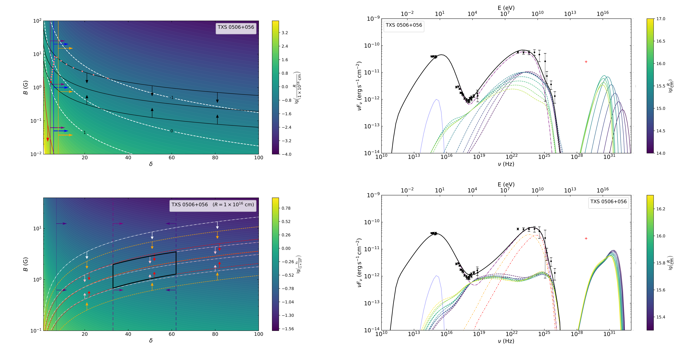
图注：TXS 0506+056 associated with IC-170922A. Upper panels: the parameter space (left panel) and the fitting result of the SED for different radii of blob (right panel) under the SSC-dominated case. In the upper left panel, the red line with arrows represents the parameter space under the severe KN effect corresponding to Eq.~(\ref{severe KN}). The area within the black lines with arrows represents the peak frequency constraint, corresponding to Eq.~(\ref{Bdelta1}). The white dashed contours denote specific values of log$\left(\frac{R}{1\times10^{16}~{\rm cm}}\right)$ associated with the color bar that corresponds to Eq.~(\ref{Bdelta2}). The orange, blue and purple lines with arrows represent the internal optical depth constraint corresponding to Eq.~(\ref{deltaSSC}) for $R=1\times10^{15}~{\rm cm}$, $R=1\times10^{16}~{\rm cm}$ and $R=1\times10^{17}~{\rm cm}$, respectively. In the upper right panel, the black data points are quasi-simultaneous data and the red cross represents the neutrino flux at the energy of $290~{\rm TeV}$ during 1 year observation taken from \(\cite{2018Sci...361.1378I}.\) The blue dotted line represents the thermal radiation of the accretion disk. The purple dash-dotted line represents the leptonic emission from primary relativistic electrons. The colored dashed lines represent the secondary pair cascade emission, in which secondary pairs are from $\pi^{\pm}$ decay, BH pair production and internal $\gamma \gamma$ pair production for different radii of blob. The colored solid curves are the neutrino spectrum. The black solid line is the total emission with a certain radius of the blob. Lower panels: the parameter space for $R=1\times10^{16}~{\rm cm}$ (left panel) and the fitting result of the SED for different radii of blob (right panel) under the EC-dominated case. In the lower left panel, the white and pink dashed-dotted lines with arrows respectively represent the peak frequency constraint and peak luminosity constraint of BLR, corresponding to Eqs.~(\ref{Bdelta33}) and (\ref{Bdelta44}). The orange and red dashed lines with arrows respectively represent the peak frequency constraint and peak luminosity constraint of DT, corresponding to Eqs.~(\ref{Bdelta11}) and (\ref{Bdelta22}). The blue dotted and long-dashed lines with arrows are the optical depth constraint corresponding to Eqs.~(\ref{deltaSSC}) and (\ref{deltaEC}), respectively. The purple long-dashed line with arrows ensure the predominance of EC components corresponding to Eq.~(\ref{deltaECdomi}). The area surrounded by the black solid lines is the effective parameter space. In the lower right panel, the red and orange dashed-dotted lines respectively represent the EC emissions for BLR and DT photon fields. Other points and lines are the same as the SSC-dominated case.
对应解读：对应“候选源多波段 SED 图”“参数扫描或约束图”“残差或分量分解图”，也是关键图表导读中图 1、图 5、图 7 的核心内容。
入选理由：这张图同时给出 TXS 0506+056/IC-170922A 在 SSC 与 EC 主导情形下的参数空间和 SED 拟合，包含 X 射线数据、次级级联辐射、总辐射、中微子谱以及 IceCube 反推通量点。它最直接支撑日报强调的核心判断：单区模型为了提高中微子通量时，强子级联是否已贴近或耗尽 X 射线观测余量。
来源与置信度：\(arxiv_source\)；high；\(arxiv_source\) / sample701.tex:figure[1]
Fig12
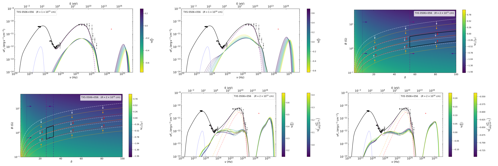
图注：TXS 0506+056 associated with IC-170922A. Upper panels: the fitting results of the SED for $R=1\times10^{15}~{\rm cm}$ (left panel) and $R=1\times10^{16}~{\rm cm}$ (right panel) under the SSC-dominated case. Middle panels: the parameter space for $R=2\times10^{15}~{\rm cm}$ (left panel) and $R=2\times10^{16}~{\rm cm}$ (right panel) under the EC-dominated case. Lower panels: the fitting results of the SED for $R=2\times10^{15}~{\rm cm}$ (left panel) and $R=2\times10^{16}~{\rm cm}$ (right panel) under the EC-dominated case. In upper and lower panels, the colored dashed and solid lines respectively represent the secondary pair cascade emission and the neutrino spectrum for different parameter combinations, which correspond to the color bar. The quasi-simultaneous data, neutrino data and other line styles in all panels have the same meaning as in Fig.~\(\ref{TXS 17}.\)
对应解读：对应“残差或分量分解图”“参数扫描或约束图”以及模型拟合段落中关于改变 R、B、delta 后中微子与级联同步变化的讨论。
入选理由：这张图专门针对 TXS 0506+056 展示不同半径和参数组合下的 SED、级联分量、中微子谱及 EC 参数空间，比普通逐源图更适合说明参数退化和上限性质：中微子谱增强时，级联电磁辐射也随之变化，不能只看某一条总 SED 是否好看。
来源与置信度：\(arxiv_source\)；high；\(arxiv_source\) / sample701.tex:figure[12]
Fig02
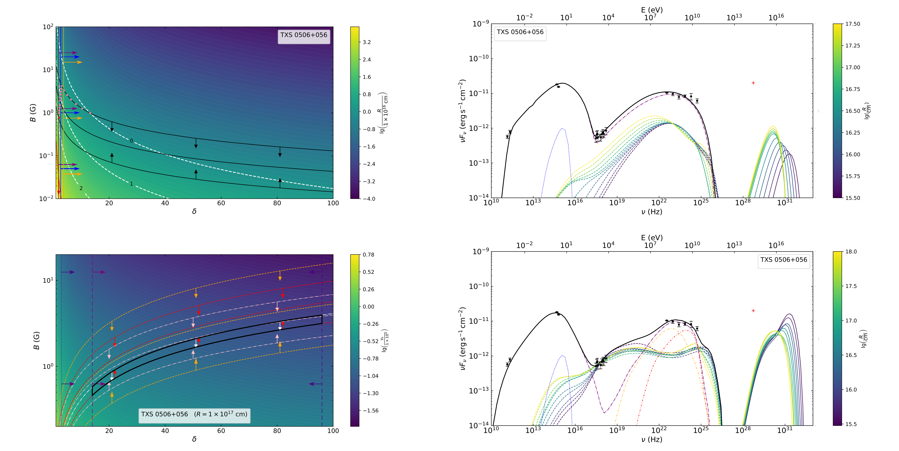
图注：TXS 0506+056 associated with GVD-210418CA. Upper panels: the parameter space (left panel) and the fitting result of the SED for different radii of blob (right panel) under the SSC-dominated case. The line styles in upper panels have the same meaning as in Fig.~\(\ref{TXS 17},\) expect orange, blue and purple lines with arrows represent the internal optical depth constraint corresponding to Eq.~(\ref{deltaSSC}) for $R=1\times10^{16}~{\rm cm}$, $R=1\times10^{17}~{\rm cm}$ and $R=1\times10^{18}~{\rm cm}$, respectively. In the upper right panel, the black data points are quasi-simultaneous data taken from \(\cite{2024ApJ...962..142W}\) and the red cross represents the neutrino flux at the energy of $224~{\rm TeV}$ during 1 year observation taken from \(\cite{2024MNRAS.527.8784A}.\) Lower panels: the parameter space for $R=1\times10^{17}~{\rm cm}$ (left panel) and the fitting result of the SED for different radii of blob (right panel) under the EC-dominated case. The line styles in lower panels have the same meaning as in Fig.~\(\ref{TXS 17}.\)
对应解读：对应“候选源多波段 SED 图”“中微子谱与 IceCube 所需通量比较图”，用于比较同一源 TXS 0506+056 在另一个候选事件 GVD-210418CA 下的模型上限。
入选理由：它保留了 SSC/EC 参数空间与 SED 分解，并给出 224 TeV 中微子通量点，可与 Fig01 同源不同事件进行对照。对日报中‘模型预测通量仍低于事件反推通量’这一结论很有支撑价值。
来源与置信度：\(arxiv_source\)；high；\(arxiv_source\) / sample701.tex:figure[2]
Fig07
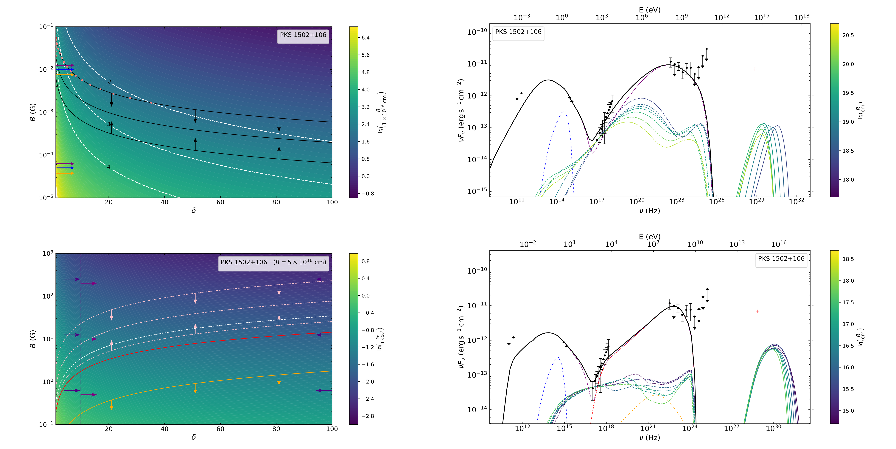
图注：PKS 1502+106 associated with IC-190730A. Upper panels: the parameter space (left panel) and the fitting result of the SED for different radii of blob (right panel) under the SSC-dominated case. The line styles in upper panels have the same meaning as in Fig.~\(\ref{TXS 17},\) expect orange, blue and purple lines with arrows represent the internal optical depth constraint corresponding to Eq.~(\ref{deltaSSC}) for $R=1\times10^{18}~{\rm cm}$, $R=1\times10^{19}~{\rm cm}$ and $R=1\times10^{20}~{\rm cm}$, respectively. In the upper right panel, the black data points are quasi-simultaneous data and the red cross represents the neutrino flux at the energy of $300~{\rm TeV}$ during 1 year observation taken from \(\cite{2020ApJ...893..162F}.\) Lower panels: the parameter space for $R=5\times10^{16}~{\rm cm}$ (left panel) and the fitting result of the SED for different radii of blob (right panel) under the EC-dominated case. The line styles in lower panels have the same meaning as in Fig.~\(\ref{PKS 0735+178}.\)
对应解读：对应“参数扫描或约束图”和“中微子谱与 IceCube 所需通量比较图”，展示 PKS 1502+106/IC-190730A 的 SSC 与 EC 约束。
入选理由：PKS 1502+106 是重要的 FSRQ 型候选源，图中同时包含大尺度 R 扫描、内部光深约束、外部光子场 EC 情形和 300 TeV 中微子通量点。它有助于说明外部光子场或较大辐射区并不能自动解决单区模型的中微子通量不足问题。
来源与置信度：\(arxiv_source\)；high；\(arxiv_source\) / sample701.tex:figure[7]
Fig08
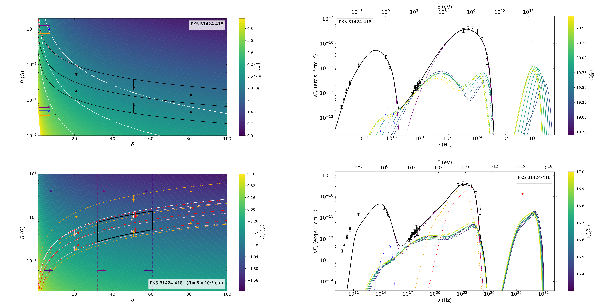
图注：PKS B1424-418 associated with Big Bird. Upper panels: the parameter space (left panel) and the fitting result of the SED for different radii of blob (right panel) under the SSC-dominated case. The line styles in upper panels have the same meaning as in Fig.~\(\ref{TXS 17},\) expect orange, blue and purple lines with arrows represent the internal optical depth constraint corresponding to Eq.~(\ref{deltaSSC}) for $R=1\times10^{19}~{\rm cm}$, $R=1\times10^{20}~{\rm cm}$ and $R=1\times10^{21}~{\rm cm}$, respectively. In the upper right panel, the black data points are quasi-simultaneous data taken from \(\cite{2017ApJ...843..109G}\) and the red cross represents the neutrino flux at the energy of $2~{\rm PeV}$ during 1 year observation taken from \(\cite{2016NatPh..12..807K}.\) Lower panels: the parameter space for $R=6\times10^{16}~{\rm cm}$ (left panel) and the fitting result of the SED for different radii of blob (right panel) under the EC-dominated case. The line styles in lower panels have the same meaning as in Fig.~\(\ref{TXS 17}.\)
对应解读：对应“中微子谱与 IceCube 所需通量或灵敏度比较图”以及模型拟合段落中关于中微子谱峰能量和能量预算的讨论。
入选理由：PKS B1424-418/Big Bird 对应 2 PeV 事件，能检验模型谱峰是否能覆盖 PeV 能区。图中还给出极大 R 范围下的 SSC 参数约束和 EC SED 拟合，适合展示在高能 PeV 事件场景下单区模型面临的更强参数压力。
来源与置信度：\(arxiv_source\)；high；\(arxiv_source\) / sample701.tex:figure[8]
Fig10
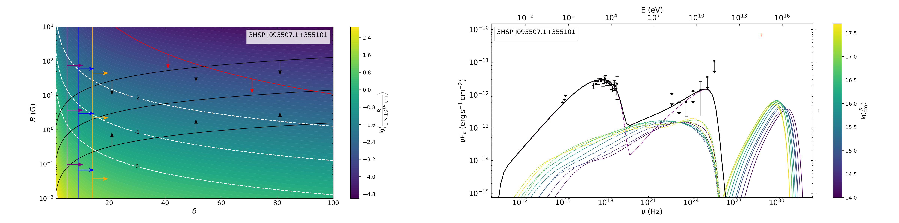
图注：3HSP J095507.1+355101 associated with IC-200107A. The parameter space (left panel) and the fitting result of the SED for different radii of blob (right panel) under the SSC-dominated case. In the left panel, the red line with arrows represents the parameter space under the severe KN effect corresponding to Eq.~(\ref{severe KN}). The area within the black lines with arrows represents the peak frequency constraint, corresponding to Eq.~(\ref{Bdelta3}). The white dashed contours denote specific values of log$\left(\frac{R}{1\times10^{16}~{\rm cm}}\right)$ associated with the color bar that corresponds to Eq.~(\ref{Bdelta4}). The orange, blue and purple lines with arrows represent the internal optical depth constraint corresponding to Eq.~(\ref{deltaSSC}) for $R=1\times10^{14}~{\rm cm}$, $R=1\times10^{15}~{\rm cm}$ and $R=1\times10^{16}~{\rm cm}$, respectively. In the right panel, the black data points are quasi-simultaneous data and the red cross represents the neutrino flux at the energy of $0.33~{\rm PeV}$ during 1 year observation taken from \(\cite{2020AA...640L...4G}.\) The other line styles have the same meaning as in Fig.~\(\ref{TXS 17}.\)
对应解读：对应“候选源多波段 SED 图”“参数扫描或约束图”，补充 HSP BL Lac 源 3HSP J095507.1+355101/IC-200107A 的 SSC 主导情形。
入选理由：这张图是高同步峰 BL Lac 的代表，只包含 SSC 情形但参数空间线型标注完整，含严重 KN 效应、峰频约束、内部光深约束和 0.33 PeV 中微子点。它与 FSRQ/EC 源形成互补，可用于说明不同源类下 X 射线级联约束和中微子通量上限仍是关键限制。
来源与置信度：\(arxiv_source\)；high；\(arxiv_source\) / sample701.tex:figure[10]
强相关工作
这篇工作与 TXS 0506+056 之后的大量单区轻强子建模直接相关。许多研究发现，若用同一区域解释电磁 SED 和 IceCube 中微子，往往会遇到 X 射线级联过强或质子功率过高的问题；本文的价值是把这种经验性困难提升为近似解析上限。建议检索关键词包括 “TXS 0506+056 one-zone lepto-hadronic model X-ray constraint”、“blazar neutrino electromagnetic cascade constraint”、“IceCube blazar association p gamma efficiency”。
它也与支持多区或外部光子场模型的工作形成连续关系。多区模型可以让中微子产生在比主 SED 辐射区更紧凑或光子密度更高的位置，例如喷流底部、BLR 云、尘埃环、慢速 sheath、磁重联小区或黑洞热冕附近。相反观点则包括：耀变体对弥散中微子背景贡献有限，或者 IceCube 关联中有相当部分是统计偶然。建议检索 “multi-zone blazar neutrino model”、“AGN corona neutrino IceCube”、“blazar contribution to diffuse neutrino background”、“IceCube stacking limits blazars”。
相似工作：
- https://arxiv.org/abs/2605.24107
- https://arxiv.org/abs/1807.08816
- https://arxiv.org/abs/1807.08794
- https://arxiv.org/abs/1901.10806
基础理论 / 方法工作：
- https://arxiv.org/abs/1807.08816
- https://arxiv.org/abs/1807.08794
- https://arxiv.org/abs/1011.0996
相反观点 / 张力线索：
- https://arxiv.org/abs/1611.03874
- https://arxiv.org/abs/1901.10806
9. Inverse Compton scattering occurring in a reverse-shock scenario involving a kilonova: A channel of TeV gamma-ray photons
- 来源：arXiv / astro-ph.HE
- 链接：https://arxiv.org/abs/2605.25209v1
- 作者：Nissim Fraija, Jorge Alexis Montes, Sara Fraija-Castellanos, María Magdalena González
- 评分：novelty 7/10，importance 7/10，relevance 10/10，final 9.05/10
- 推荐理由：研究kilonova种子光子被GRB反向激波电子外康普顿散射产生TeV辐射，并结合H.E.S.S./HAWC限制；虽偏理论模型，但直接服务TeV GRB多信使观测。
中文题目：千新星参与的反向激波外部逆康普顿：产生 TeV 伽马光子的一个通道
做了什么：这篇文章研究短伽马暴并合事件中一种较少被系统量化的 TeV 产生机制：反向激波加速的电子，不是主要散射自身同步辐射光子，而是散射来自千新星的光学—近红外种子光子，形成外部逆康普顿辐射。作者在均匀外介质、薄壳反向激波框架下推导光变曲线和谱，并把模型用于 GRB 160821B，同时结合 AT2017gfo 级别的明亮千新星光度以及 H.E.S.S.、HAWC 的 TeV 上限来限制参数空间。主要结论是：若反向激波区磁能比例很低，约 \(\epsilon_{\rm B,r}\lesssim 10^{-6}\)，且千新星足够亮、红移较低，那么爆发后数小时到数天内可能出现可探测的 TeV 发射。
为什么重要：短伽马暴—千新星—引力波并合事件是多信使天文学的核心目标，但 TeV 波段在这类事件中的辐射通道仍不清楚。标准同步自康普顿模型在解释某些候选 TeV 信号时会遇到光子场、时间尺度和能量预算方面的压力。本文把千新星本身作为外部光子场引入反向激波区，提供了一个可检验的替代路径：TeV 辐射强弱直接连接到抛射物减速、反向激波微物理、千新星光度和距离。
理论 / 观测 / 仪器方法价值：理论上，本文把反向激波动力学、千新星热辐射场和外部逆康普顿过程放在一个统一的半解析框架里，给出了 TeV 光变和谱的可计算标度。观测上，它把 H.E.S.S.、HAWC 这类上限转化为对 \(\epsilon_{\rm B,r}\)、电子能量比例、初始洛伦兹因子、外介质密度和千新星光度的限制。方法上，它提醒读者：短暴 TeV 搜索不能只围绕 prompt 或早期正向激波，应覆盖爆发后数小时到数天的窗口。
为什么应该关注：如果未来 CTA、LHAASO、MAGIC、H.E.S.S. 或 HAWC 在一个近邻短暴—千新星事件后几小时到几天发现 TeV 光子，这篇文章给出了一个直接可用的解释模板，也给出了哪些参数会被首先检验。反过来，即使没有探测，深上限也能排除极低磁化反向激波或过亮外部光子场组合。因此它关乎短暴喷流磁化程度、并合后喷流—抛射物环境、以及多信使触发下 TeV 跟进观测策略。
展开详细解读：文章讲解、背景、理论、重点章节、图表与相关工作
文章详细讲解
科学问题：短伽马暴在并合背景下会伴随千新星，千新星释放的光学—近红外光子场在爆发后数小时到数天内仍然很强。传统高能余辉模型通常关注正向激波同步辐射和同步自康普顿，或者 prompt 区域残留的高能发射；但如果在 GRB 160821B 这类事件中存在与千新星时标相关的 TeV 候选信号，仅靠标准同步自康普顿并不总是自然。本文要回答的是：反向激波中的相对论电子能否把千新星光子逆康普顿散射到 GeV—TeV 能段？这个机制需要怎样的外介质密度、喷流初始洛伦兹因子、千新星光度和微物理参数？
作者怎么做：作者采用薄壳反向激波、均匀外介质的余辉动力学。薄壳意味着反向激波在减速时间附近穿过壳层，适用于许多短暴的外流持续时间和减速时间关系。电子能谱按冲击加速的幂律分布处理，反向激波区的同步辐射、冷却频率、最小电子洛伦兹因子和峰值通量先被确定；随后引入来自千新星的外部种子光子场，计算这些光子在反向激波电子上的外部逆康普顿散射。模型进一步考虑从源区到观测者的红移变换、光变时标和 TeV 探测阈值，并将结果同 GRB 160821B 以及 H.E.S.S.、HAWC 上限联系起来。
关键结果：文章的核心结论是，TeV 发射在反向激波外部逆康普顿场景中并非普遍强，而是在相当特殊但物理上有意义的参数区间内增强。最重要的条件是反向激波区磁能分数要极低，约 \(\epsilon_{\rm B,r}\lesssim 10^{-6}\)。低磁场降低同步冷却和同步辐射竞争，使电子能量更容易通过逆康普顿通道输出；同时需要较明亮的千新星，类似 AT2017gfo 的高光度情形可以显著提高外部光子能量密度。低红移也很关键，因为 TeV 光子既受通量距离稀释，也受河外背景光吸收影响。模型预言最有希望的时间窗不是毫秒到秒级 prompt，而是爆发后数小时到几天。
局限和下一步：本文是半解析、理想化的框架，主要使用均匀外介质和薄壳反向激波假设。真实短暴环境可能有密度结构、喷流角结构、能量注入、离轴观测和千新星各向异性辐射；这些都会改变种子光子场在反向激波共动系中的角分布和能量密度。TeV 传播还受到 \(\gamma\gamma\) 吸收和河外背景光模型的影响，特别是较高红移事件。下一步最值得做的是把该机制嵌入多波段联合拟合：同时拟合光学—近红外千新星、射电—X 射线余辉和 TeV 上限或探测，并用 CTA/LHAASO 等实际响应函数做观测可行性模拟。
背景知识
研究对象是短伽马暴及其并合后电磁对应体。短暴通常与双中子星或中子星—黑洞并合有关，中心引擎发射相对论喷流；喷流与外介质相互作用产生正向激波，外流壳层自身被反向激波穿透。与此同时，富中子抛射物通过 \(r\)-过程放射性衰变产生千新星，其谱峰位于光学—近红外，持续时间从小时到数周不等。
历史上，短暴余辉的高能辐射主要用正向激波同步辐射解释；当能量延伸到 GeV 或 TeV 时，研究者常引入同步自康普顿或者外部逆康普顿。长暴中已经有多例甚高能探测，例如 MAGIC、H.E.S.S. 和 LHAASO 对若干 GRB 的观测推动了 TeV 余辉研究。但短暴由于距离、持续时间和环境密度限制，TeV 探测更困难；一旦出现候选信号，它对喷流参数和辐射机制的约束会非常强。
观测背景中，GRB 160821B 是一个常被讨论的短暴—千新星候选系统，具有多波段余辉和光学—近红外超额成分。AT2017gfo 则是 GW170817 的千新星，对千新星光度、颜色演化和抛射物性质提供了标尺。本文把这两个对象的经验信息结合起来：一方面用 GRB 160821B 作为应用案例，另一方面用 AT2017gfo 级别的高千新星光度探索 TeV 可探测性。
为什么现在值得重新看？原因有三点。第一，TeV 伽马天文台对 GRB 的响应速度和灵敏度正在改善，CTA 和 LHAASO 时代会把小时到天级跟进变成更常规的策略。第二，引力波触发会提供近邻并合事件，降低距离和河外背景光吸收的不利影响。第三，千新星不再只是低能热辐射背景，而可能是高能辐射过程的种子光子库。
常见误区包括：把所有 TeV 余辉都归因于同步自康普顿；认为千新星只影响光学—红外拟合而与高能辐射无关；或把低 \(\epsilon_{\rm B,r}\) 简单理解为任意调参。实际上，低磁化反向激波会同时改变同步辐射亮度、冷却行为和逆康普顿效率，必须用多波段约束一起检验。另一个误区是忽略 TeV 光子的传播吸收；即使源内产生足够光子，观测端仍可能因 \(\gamma\gamma\) 吸收和河外背景光而只得到上限。
基础理论 / 方法脉络
物理图像可以从一个运动壳层撞击外介质开始。相对论外流以初始洛伦兹因子 \(\Gamma_0\) 向外运动，扫起均匀外介质后形成正向激波，同时一个反向激波向壳层内部传播。正向激波加热外介质，反向激波加热喷流物质。薄壳情形下，反向激波在减速时间附近穿过壳层，之后反向激波区电子继续冷却并辐射。
辐射机制的关键是电子能量分布和磁场。冲击加速通常给出 \(dN_e/d\gamma_e\propto \gamma_e^{-p}\)，其中 \(\gamma_e\) 是电子洛伦兹因子，\(p\) 是幂律指数。微物理参数 \(\epsilon_{\rm e,r}\) 和 \(\epsilon_{\rm B,r}\) 分别表示反向激波内能中进入非热电子和磁场的比例。同步辐射由磁场控制，而逆康普顿则由目标光子能量密度控制；因此，当 \(\epsilon_{\rm B,r}\) 很低而外部光子场很强时，外部逆康普顿会变得特别重要。
本文特定的外部光子场来自千新星。千新星可近似为随时间演化的热光源，其观测光度 \(L_{\rm KN}(t)\)、有效温度和谱形决定种子光子的典型能量。反向激波电子在共动系中看到的千新星光子能量密度与几何、相对论变换和半径有关；散射后光子能量大致按电子洛伦兹因子平方提升，但当进入 Klein–Nishina 区域后散射截面降低，TeV 产额会被抑制。
观测方法上，模型输出的是能谱能量分布和特定能段光变，例如 \(\nu F_\nu\) 或积分通量随观测时间的变化。对 H.E.S.S.、HAWC 这类仪器，真正可比较的是某个时间窗口和能量阈值以上的积分通量或显著性，而不是单一理论峰值。红移会影响时间膨胀、能量移位、光度距离和河外背景光吸收，因此近邻事件更有利。
主要退化关系来自 \(\epsilon_{\rm B,r}\)、\(\epsilon_{\rm e,r}\)、外介质密度 \(n\)、总动能 \(E_{\rm k}\)、\(\Gamma_0\) 和 \(L_{\rm KN}\)。例如提高 \(L_{\rm KN}\) 与降低磁场都能提高逆康普顿相对重要性，但它们对同步余辉和冷却频率的影响不同；提高 \(n\) 会改变减速时间和电子数，也会改变同步约束。系统误差则包括千新星光度模型、反向激波是否真的形成、喷流角结构、观测视角以及 TeV 吸收模型。
公式与推导
第一步是外流减速。各向同性等效动能 \(E_{\rm k}\) 的壳层扫起外介质质量后，当扫起静质量约满足 \(M_{\rm sw}\sim E_{\rm k}/(\Gamma_0^2 c^2)\) 时开始显著减速。对均匀外介质数密度 \(n\)，减速半径可写为
这里 \(m_p\) 是质子质量，\(c\) 是光速，\(\Gamma_0\) 是初始洛伦兹因子。这个式子决定反向激波何时穿壳，也决定千新星光子场在相应半径处的稀释程度。
第二步是把半径转成观测时间。忽略角结构时，减速时间近似为
其中 \(z\) 是红移。薄壳条件通常要求中心引擎持续时间或壳层宽度对应的穿越时间短于这个减速时标，使反向激波在 \(t_{\rm dec}\) 附近完成主要能量耗散。
第三步是反向激波区磁场。若反向激波共动内能密度为 \(e'_r\)，磁能比例为 \(\epsilon_{\rm B,r}\)，则
这里撇号表示共动系。该式说明为什么小 \(\epsilon_{\rm B,r}\) 会削弱同步辐射，同时也改变电子的总冷却率；本文的 TeV 可见区间正依赖极低的 \(B'_r\)。
第四步是电子注入能量。对幂律指数 \(p>2\)，最小电子洛伦兹因子可近似写为
其中 \(m_e\) 是电子质量，\(\Gamma_{\rm rel}\) 是未激波壳层与激波后流体之间的相对洛伦兹因子。这个量控制同步峰和逆康普顿峰的初始位置。
第五步是千新星种子光子场。若千新星在源系光度为 \(L_{\rm KN}(t)\)，在反向激波半径 \(R\) 处的实验室系光子能量密度可近似为
这里 \(q_e\) 是电子电荷，\(\Gamma\) 是激波后流体洛伦兹因子。虽然本文关注 TeV 外部逆康普顿，但同步特征频率是约束反向激波参数的必要参照。
第六步是外部光子能量密度。对近似各向同性的千新星辐射，源系能量密度标度为
更明确地，用光度估计可写成
在 Thomson 极限和简单同向变换近似下成立，其中 \(\nu_{\rm KN}\) 是种子光子频率；若严格处理相对论角分布，需要把 \(\nu_{\rm KN}\) 转到共动系 \(\nu'_{\rm KN}\)。这一步给出光学—近红外光子被 \(\gamma_e\sim 10^5\) 量级电子提升到 GeV—TeV 的直观原因。
第七步是冷却竞争。逆康普顿相对于同步的强度常用 Compton 参数表示，外部逆康普顿近似为
其中 \(U'_{\rm KN}\) 是共动千新星光子能量密度，\(U'_B\) 是共动磁能密度。该式直接解释本文为什么得到 \(\epsilon_{\rm B,r}\lesssim 10^{-6}\) 的偏好：降低 \(U'_B\) 会显著抬高 \(Y_{\rm EIC}\)。
第八步是从源光度到观测通量。若外部逆康普顿谱光度为 \(L_{\nu}^{\rm EIC}\)，观测谱通量为
其中 \(D_L\) 是光度距离，\(\nu_{\rm em}=(1+z)\nu_{\rm obs}\)，\(\tau_{\gamma\gamma}\) 包括源内和河外背景光吸收的有效光深。这个公式是把模型同 H.E.S.S.、HAWC 上限比较的桥梁。
第九步是探测显著性或上限约束。对某能段和时间窗内的源计数 \(N_s\) 与背景计数 \(N_b\)，粗略显著性可写为
这里 \(T_{\rm exp}\) 是曝光时间，\(A_{\rm eff}(E)\) 是有效面积，\(F_E(E)\) 是能量微分通量。实际分析会用更完整的似然或 Li–Ma 显著性，但这个式子说明光变时标、仪器响应和谱形不能分开讨论。
模型拟合 / 应用方法
这类模型拟合的核心不是单独拟合一个 TeV 点，而是联合约束多波段余辉、千新星光度和 TeV 上限。可调参数通常包括 \(E_{\rm k}\)、\(\Gamma_0\)、\(n\)、\(p\)、\(\epsilon_{\rm e,r}\)、\(\epsilon_{\rm B,r}\)、千新星光度归一化、红移或光度距离，以及可能的喷流开角和视角。对于 GRB 160821B，已有光学—近红外和 X 射线/射电信息会限制千新星和余辉成分，TeV 上限则排除过高的外部逆康普顿通量。
似然层面，可以把不同波段的探测点写成高斯或对数高斯误差，把 TeV 非探测写成单边截断似然或泊松计数似然。若仪器只给出积分通量上限，理论谱必须通过相同能量阈值和时间窗口积分后再比较，而不能直接用某个瞬时 \(F_\nu\) 点。更严格的做法还应卷积有效面积、能量重建偏差和观测天顶角相关响应。
残差诊断要看两类不一致。第一类是低能波段：如果为了提高 TeV 通量而把 \(\epsilon_{\rm B,r}\) 降得极低，反向激波同步辐射可能变得过暗，必须确认正向激波或千新星是否能解释观测的光学—近红外点。第二类是高能波段：如果模型在 H.E.S.S. 或 HAWC 观测窗口内超过上限，就需要降低 \(L_{\rm KN}\)、电子能量比例或改变时间演化。真正可信的参数区间应同时通过这两类检验。
参数退化很强。增大 \(L_{\rm KN}\) 与减小 \(\epsilon_{\rm B,r}\) 都会提高 \(Y_{\rm EIC}\)，但前者还会改变光学—近红外千新星观测，后者会改变同步峰和冷却频率。提高 \(n\) 会增加被扫电子数并提前减速，但也影响反向激波强度和余辉亮度。提高 \(\Gamma_0\) 会改变 \(t_{\rm dec}\)、共动光子能量和散射峰位置，但可能让散射进入 Klein–Nishina 区域，从而不再线性增强 TeV 通量。
模型可能失败的地方也清楚。若反向激波很弱、喷流高度磁化导致反向激波被抑制，则该机制不成立；若千新星辐射与喷流轴方向高度各向异性，简单各向同性光子场会误估 \(U'_{\rm KN}\)；若 TeV 光子在源内与千新星光子发生强 \(\gamma\gamma\) 吸收，产生率再高也到不了观测者。实际应用中，最稳健的用途可能是反过来利用深 TeV 上限给出 \(\epsilon_{\rm B,r}\) 和 \(L_{\rm KN}\) 的联合排除区，而不是声称一个唯一最佳解。
重点章节 / 结果段落怎么读
-
引言和问题设置：读者应重点看作者如何定位 GRB 160821B 的 TeV 候选问题，以及为什么标准同步自康普顿不够自然。这里的关键不是事件八卦，而是作者把千新星光子场提升为外部逆康普顿种子场的动机。
-
反向激波动力学：应检查论文对薄壳、均匀介质和减速时间的定义。薄壳假设决定反向激波穿越时刻，也决定 TeV 光变峰值是否会出现在数小时到数天。若读者要复现结果，应先核对 \(E_{\rm k}\)、\(\Gamma_0\)、\(n\) 和壳层宽度的取值。
-
外部逆康普顿辐射推导：这是全文核心。应看作者如何从千新星光度得到种子光子能量密度，如何处理电子分布、Thomson 与 Klein–Nishina 过渡，以及如何计算谱断点和峰值通量。尤其要关注 \(\epsilon_{\rm B,r}\) 的进入方式，因为结论对它高度敏感。
-
GRB 160821B 应用：应看模型曲线是否同时尊重光学—近红外千新星、余辉和 TeV 上限。若论文给出多组参数，读者应比较它们在低能波段是否等价、在 TeV 波段是否分化明显。
-
探测性和上限讨论：应关注作者如何使用 AT2017gfo 级别光度、H.E.S.S. 与 HAWC 上限来划定可探测区域。这里最重要的是时间窗口、能量阈值和红移依赖，而不仅是峰值通量。
-
讨论和局限：应检查作者是否讨论了河外背景光吸收、源内 \(\gamma\gamma\) 吸收、喷流几何和反向激波存在性。这些因素决定该机制能否从半解析可行性变成实际观测解释。
建议重点查看的图表
-
反向激波外部逆康普顿光变曲线：重点看 TeV 通量峰值出现在爆发后数小时还是数天，以及不同 \(\epsilon_{\rm B,r}\)、\(L_{\rm KN}\)、\(n\) 下峰值如何移动。
-
能谱能量分布图：检查同步、同步自康普顿和外部逆康普顿成分是否清楚分离；特别要看 TeV 峰是否落在仪器敏感能段内，以及 Klein–Nishina 抑制是否使高能端变陡。
-
GRB 160821B 多波段拟合图：看光学—近红外数据中千新星成分与余辉成分如何拆分，模型是否为了 TeV 解释牺牲了低能拟合质量。
-
参数空间排除图：如果有 \(\epsilon_{\rm B,r}\)—\(L_{\rm KN}\)、\(\epsilon_{\rm B,r}\)—\(n\) 或 \(\Gamma_0\)—\(n\) 图，应重点看 H.E.S.S.、HAWC 上限排除了哪些区域，以及可探测区域是否需要极端参数。
-
与 AT2017gfo 光度标尺相关的图或表：检查作者如何缩放千新星光度，是否只改变归一化，还是也改变温度、谱峰和时间演化。
-
TeV 吸收或红移依赖诊断：若有不同红移下的通量曲线，应看 \(D_L^{-2}\) 稀释和 \(\tau_{\gamma\gamma}\) 吸收哪个更主导，以及低红移窗口的实际范围。
-
仪器上限比较表：确认上限的时间窗、能量阈值、置信水平和模型积分方式是否一致。很多 TeV 论文的误读来自把不同时间窗的上限直接画在瞬时光变上。
关键图表逐图导读
图 1：建议首先读反向激波外部逆康普顿的示意或光变图。横轴通常是观测时间 \(t_{\rm obs}\)，纵轴可能是积分通量、\(\nu F_\nu\) 或某个 TeV 能段的能量通量。数据点或水平线代表 H.E.S.S./HAWC 上限，模型线代表不同参数组。读图陷阱是不要只看峰值是否超过灵敏度，还要看峰值是否落在实际曝光时间窗内。
图 2：能谱能量分布图应按横轴光子能量或频率、纵轴 \(\nu F_\nu\) 来读。同步成分通常在低能，外部逆康普顿成分延伸到 GeV—TeV。若图中有多条曲线，对比低 \(\epsilon_{\rm B,r}\) 与较高 \(\epsilon_{\rm B,r}\) 的差异；低磁场会抑制同步并相对增强逆康普顿。陷阱是高能端若进入 Klein–Nishina 区域，不能用简单 \(\gamma_e^2\) 标度外推。
图 3：GRB 160821B 的多波段光变拟合图通常最能检验模型自洽性。横轴为爆发后时间，纵轴为通量或星等，点为光学、近红外、X 射线或射电观测，线为余辉、千新星和总模型。应看千新星峰的时间和颜色是否合理，以及反向激波参数是否导致早期光学过亮或过暗。陷阱是光学超额不一定唯一来自千新星，也可能受能量注入或喷流结构影响。
图 4：参数空间图若存在，常以 \(\epsilon_{\rm B,r}\) 为一轴，另一轴为 \(L_{\rm KN}\)、\(n\) 或 \(\Gamma_0\)。阴影区可能表示 TeV 可探测、被上限排除或允许区域。读者应重点检查允许区是否集中在 \(\epsilon_{\rm B,r}\lesssim 10^{-6}\)，以及这个区域是否还满足低能余辉约束。陷阱是只看二维切片会低估高维退化。
图 5：红移或千新星光度缩放图应显示同一物理模型在不同 \(z\) 或不同 \(L_{\rm KN}\) 下的 TeV 通量变化。横轴可能是时间或能量，纵轴为通量。主要结论应是近邻、明亮千新星更容易被探测。陷阱是红移影响不只是 \(D_L^{-2}\)，还包括能量移位、时间膨胀和河外背景光吸收。
图 6：若论文给出 H.E.S.S. 和 HAWC 上限对比图或表，应核对上限是否为积分通量、能量通量还是微分通量。模型线必须在同一能量范围内积分后才能比较。若上限看似很强但时间窗错过模型峰值，它对参数的实际约束会弱很多。
论文原图 / 可嵌入图片
Fig06
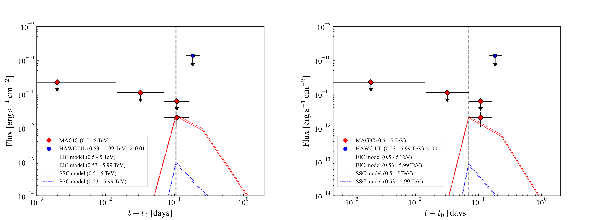
图注：Left: Observations and upper limits of MAGIC and HAWC observatories with the model curves for the EIC and SSC scenarios at energy ranges of 0.5 -- 5 TeV and 0.53 -- 5.99 TeV, respectively. The best-fit values and representative lower limits found with MCMC simulations using our EIC scenario are reported in Table \(\ref{Table:ISM_Fit_2}.\) Right: Similar light curve, but the shock crossing time being constrained to a range from 0.05 -- 0.07 days, as shown in \(\citet{2019ApJ...883...48L}.\)
对应解读：对应“GRB 160821B 多波段/TeV拟合图”“仪器上限比较表”以及关键图表导读中的图3、图6式解读。
入选理由：这是候选图中最直接检验论文核心应用的图：把GRB 160821B的MAGIC与HAWC上限同EIC和SSC模型光变放在同一TeV能段比较，并给出不同反向激波穿越时间假设。它最能支撑日报关于模型是否在实际观测时间窗内超过上限、EIC是否优于SSC、以及TeV上限不能与瞬时光变误比的讨论。
来源与置信度：\(arxiv_source\)；high；\(arxiv_source\) / main.tex:figure[6]
Fig09
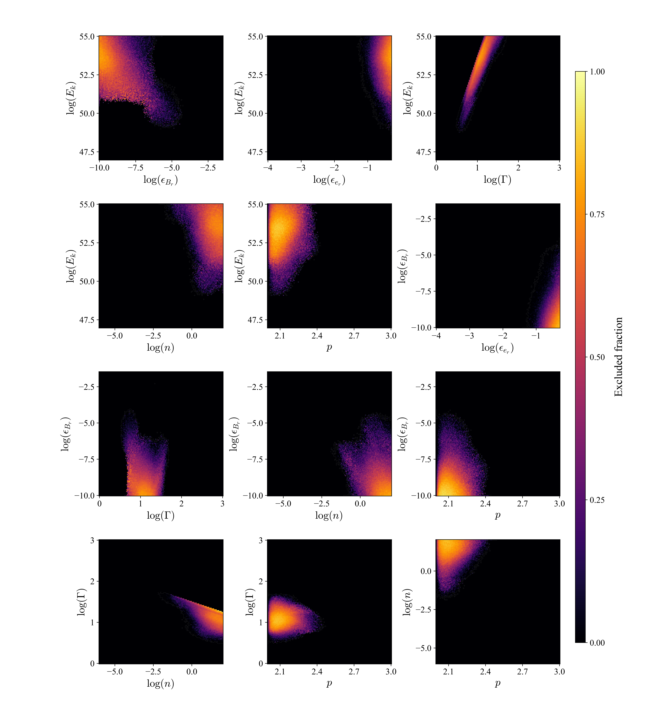
图注：2D projections of the explored six-dimensional parameter space ($\rm E_{\rm K},\,\epsilon_{\rm B_r},\,\epsilon_{\rm e_r},\,\Gamma,\,n,\,p$). Each panel show the fraction of parameter combinations yielding fluxes above the HAWC and H.E.S.S. upper limits. The color scale indicates the mean excluded fraction per bin, with brighter regions corresponding to parameter combinations increasingly inconsistent with HAWC and H.E.S.S. upper limits.
对应解读：对应“参数空间排除图”和模型拟合段落中关于六维参数退化、HAWC/H.E.S.S.上限排除区域的讨论。
入选理由：该图给出六维参数空间的二维投影，并用颜色显示超过HAWC和H.E.S.S.上限的参数组合比例，直接对应日报要求检查的排除区和极端参数需求。相比单条光变，它更能说明低磁能分数、外介质密度、洛伦兹因子等参数之间的退化与限制。
来源与置信度：\(arxiv_source\)；high；\(arxiv_source\) / main.tex:figure[9]
Fig02
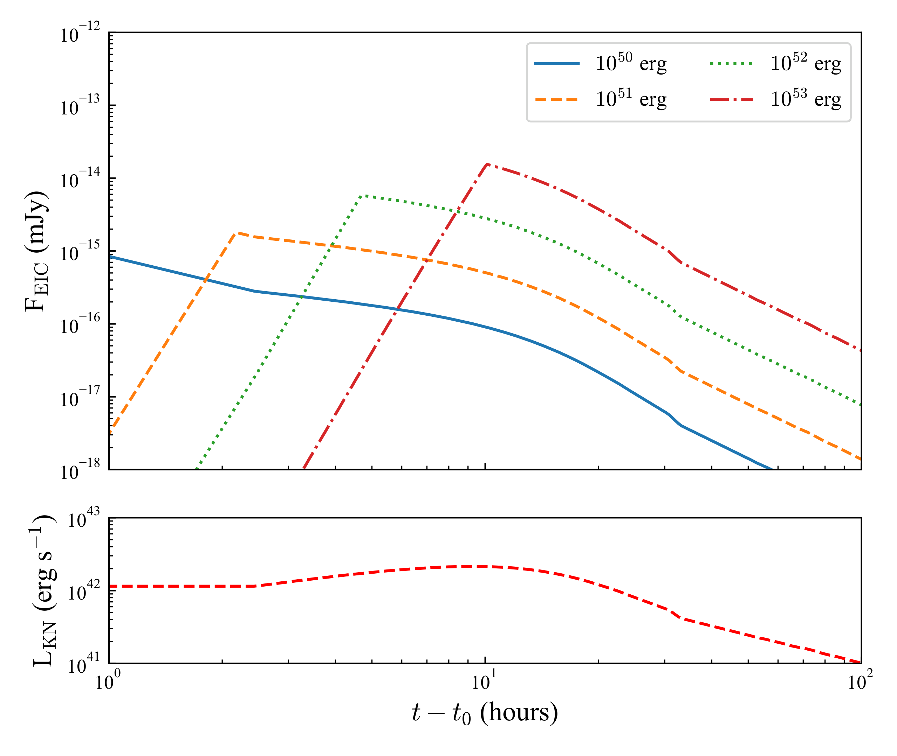
图注：Upper panel shows EIC light curves generated by relativistic electrons accelerated in the reverse-shock region and seed photons from KN considering four equivalent-kinetic energies. The reverse shock evolves in the thin-shell regime and is decelerated in the constant-density medium. We consider the following parameters: $z=0.009$, $\epsilon_{\rm B_r}=10^{-7.84}$, $\epsilon_{\rm e_r}=10^{-0.3}$, $\Gamma=10^{1.31}$, $n=10^{-1.03}\,{\rm cm^{-3}}$ and $p=2.05$ \(\citep\)[e.g., see][]{2014ARA&A..52...43B, \(Fong_2015,\) 2019ApJ...883..134T}. Lower panel displays the bolometric KN light curve of GW170817 taken from \(\citet{2017arXiv171005841S}.\)
对应解读：对应“反向激波外部逆康普顿光变曲线”和关键图表导读中的图1式解读。
入选理由：该图展示反向激波电子散射千新星种子光子产生的EIC光变，并同时给出GW170817/AT2017gfo相关千新星 bolometric 光变作为种子光子场参照。它直接支撑日报关于TeV峰值出现在数小时到数天、等效动能如何影响峰值通量和时间演化的解读。
来源与置信度：\(arxiv_source\)；high；\(arxiv_source\) / main.tex:figure[2]
Fig03
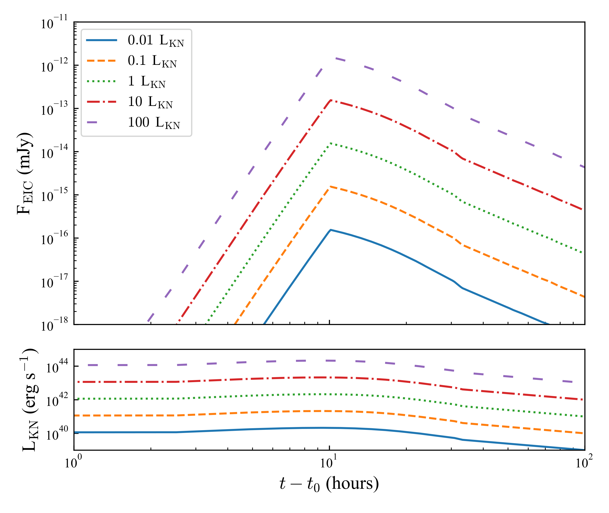
图注：The same as Figure \(\ref{fig:fluences},\) but considering the same bolometric luminosity model of seed photons at different scale factors for an equivalent-kinetic energy of ${\rm E_{\rm K}=10^{52}\,erg}$.
对应解读：对应“与AT2017gfo光度标尺相关的图或表”和“红移或千新星光度缩放图”中的千新星光度缩放部分。
入选理由：该图固定等效动能并改变千新星种子光子bolometric luminosity的缩放因子，正好用于判断明亮千新星如何提高EIC TeV通量。它比示意图更能支撑日报关于L_KN与epsilon_B,r退化、以及AT2017gfo式高光度情形更利于探测的结论。
来源与置信度：\(arxiv_source\)；high；\(arxiv_source\) / main.tex:figure[3]
Fig04
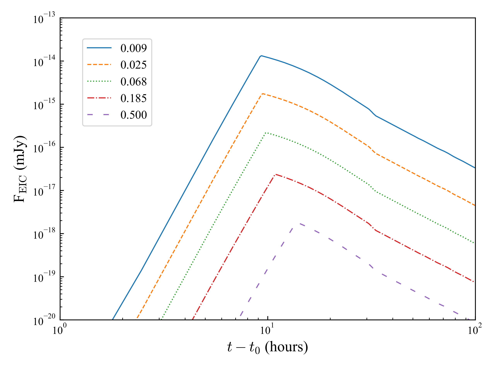
图注：The same as Figure \(\ref{fig:fluences},\) but for different redshifts and an equivalent-kinetic energy of ${\rm E_{\rm K}=10^{52}\,erg}$.
对应解读：对应“TeV吸收或红移依赖诊断”和关键图表导读中的图5式解读。
入选理由：该图比较不同红移下的EIC光变，直接对应日报要求检查低红移窗口、距离稀释和TeV可探测性的部分。它能支撑论文结论中低红移事件更有希望被探测的判断。
来源与置信度：\(arxiv_source\)；high；\(arxiv_source\) / main.tex:figure[4]
Fig08
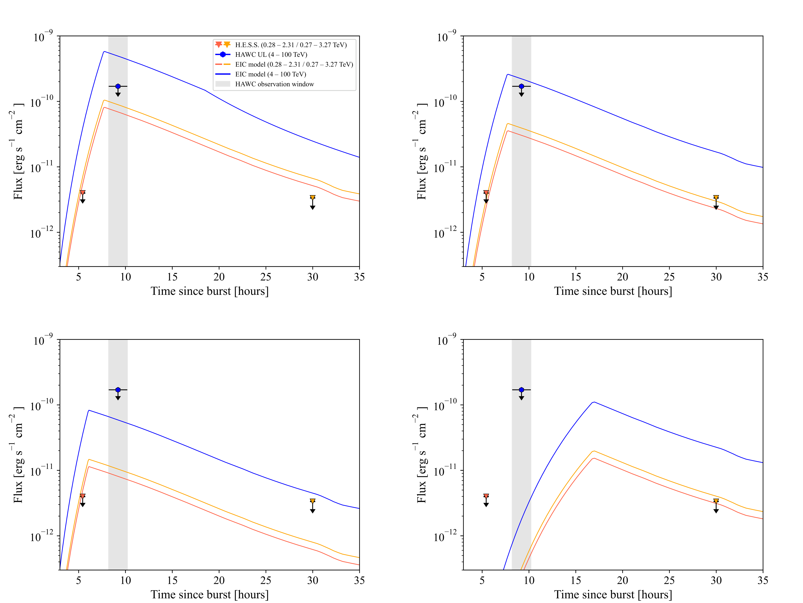
图注：Light curves computed within the EIC framework for four representative parameter sets selected from the excluded region shown in Figure~\(\ref{param_spac_GRB170817A}.\) Left column: The upper panel corresponds to a configuration that exceeds all reported upper limits, whereas the lower panel illustrates a case in which only the earlier HESS upper limit is violated. Right column: The upper panel shows a solution that only violates the HAWC upper limit, while the lower panel presents a configuration that exceeds only the later HESS upper limit. The parameter values adopted for each light curve are listed in Table~\(\ref{Table:ISM_Fit}.\)
对应解读：对应“仪器上限比较表”和模型拟合段落中关于H.E.S.S./HAWC不同时间窗上限对参数排除强弱的讨论。
入选理由：该图展示来自排除区的四组代表性EIC光变，并区分超过全部上限、只超过早期HESS、只超过HAWC或只超过晚期HESS的情形。它特别适合说明日报中的读图陷阱：上限是否真正约束模型取决于能段和观测时间窗是否覆盖模型峰值。
来源与置信度：\(arxiv_source\)；high；\(arxiv_source\) / main.tex:figure[8]
强相关工作
这篇工作与 GRB TeV 余辉研究直接相连。长暴领域中，MAGIC 对 GRB 190114C、H.E.S.S. 对 GRB 180720B 和 GRB 190829A、LHAASO 对 GRB 221009A 的结果已经证明逆康普顿或极端同步/外部辐射过程在 GRB 余辉中很重要。本文的不同点在于对象是短暴—千新星系统，种子光子场不是余辉自身同步光子，而是并合抛射物的热辐射。可检索关键词包括 “GRB reverse shock external inverse Compton kilonova TeV”、 “GRB 160821B kilonova TeV”、 “short GRB EIC reverse shock”。
基础理论上，它继承了相对论爆震波余辉模型、反向激波光学闪光理论和逆康普顿辐射理论。与之存在张力或竞争的解释包括：正向激波同步自康普顿、prompt 残余高能辐射、磁化喷流抑制反向激波、以及候选 TeV 信号的统计显著性不足。要判断本文机制是否优于这些方案，需要多波段联合拟合和真实仪器响应，而不是仅凭 TeV 峰值能否达到某个灵敏度曲线。建议检索 “synchrotron self-Compton short GRB TeV upper limits”、 “reverse shock magnetization GRB afterglow”、 “kilonova seed photons inverse Compton”。
相似工作：
- https://arxiv.org/abs/2605.25209
- https://arxiv.org/abs/1906.01893
- https://arxiv.org/abs/1906.04997
- https://arxiv.org/abs/2006.07251
基础理论 / 方法工作：
- https://ui.adsabs.harvard.edu/abs/1997ApJ...476..232M/abstract
- https://ui.adsabs.harvard.edu/abs/1998ApJ...497L..17S/abstract
- https://ui.adsabs.harvard.edu/abs/1999ApJ...517..700S/abstract
- https://ui.adsabs.harvard.edu/abs/1992ApJ...397L..41M/abstract
相反观点 / 张力线索：
- https://arxiv.org/abs/1908.04128
- https://arxiv.org/abs/2009.05099
- https://arxiv.org/abs/2210.15625
10. Shear Particle Acceleration in Structured Gamma-Ray Burst Jets: IV. Thermal {\em vs.} Non-thermal Emission of the Jet Cocoon
- 来源：arXiv / astro-ph.HE
- 链接：https://arxiv.org/abs/2605.25147v1
- 作者：Zi-Qi Wang, Xiao-Li Huang, Hai-Ming Zhang, En-Wei Liang
- 评分：novelty 7/10，importance 7/10，relevance 9/10，final 8.70/10
- 推荐理由：结构化GRB喷流中jet-cocoon热/非热辐射模型，解释GRB 090902B等prompt谱成分；GRB高能辐射机制相关，虽为模型延展但值得关注。
中文题目：结构化伽马暴喷流中的剪切粒子加速：喷流茧的热辐射与非热辐射
做了什么：这篇文章用结构化喷流模型解释伽马暴提示辐射中偶尔出现的热或准热谱成分，并以 GRB 090902B 为主要案例。作者把外流分成超相对论均匀喷流核心、薄的喷流—茧相互作用层，以及混合喷流—茧区域；在弱散射、剪切加速效率低的情况下，预加速电子在混合区进一步热化，形成准热电子分布。通过给电子径向温度剖面设定幂律指数 \(q_T\)，并把该热成分与喷流核心中激波加速电子的同步辐射叠加，模型可同时拟合 GRB 090902B 的 \(\mathrm{keV}\)–\(\mathrm{MeV}\) 准热峰和宽能段非热辐射。文章还用 GRB 240825A 对比强散射、剪切加速占优情形，指出剪切加速电子给出的谱比弱散射热化电子更宽。
为什么重要：GRB 提示辐射的谱形长期存在一个核心问题：观测到的窄热峰、宽非热尾以及二者共存，究竟来自同一个辐射区的不同过程，还是来自喷流横向结构中的不同区域。GRB 090902B 是经典的强热成分案例，如果结构化喷流的混合喷流—茧区能自然产生准热分量，就把提示辐射谱多样性与喷流传播、茧形成、剪切层微物理联系起来，而不仅是对 Band 函数做经验分解。
理论 / 观测 / 仪器方法价值：理论上，这篇文章把剪切加速系列模型推进到热化与非热化两种极限的比较，强调散射强弱会改变电子分布宽度和辐射谱宽度。观测上，它给出一种读 GRB 090902B 这类窄峰加高能尾事件的物理分解方式：核心同步辐射负责宽带非热部分，混合喷流—茧区负责准热成分。方法上，它提示时间积分谱与时间分辨谱应联合约束 \(T_{\max}\)、\(q_T\)、喷流核心非热电子参数和相对归一化，而不能只依赖经验谱宽。
为什么应该关注：如果你关心 GRB 中心引擎、喷流准直、茧辐射或提示辐射机制，这篇文章值得看，因为它把一个观测上很显眼但解释分裂的问题——GRB 090902B 的热峰——放进了可计算的结构化喷流框架。它还给出一个可检验预言：弱散射热化混合区应给出较窄准热谱，而强散射剪切加速区应给出更宽的非热谱；这可以用未来更大样本的时间分辨谱宽、峰能演化和高能尾强度来检验。
展开详细解读：文章讲解、背景、理论、重点章节、图表与相关工作
文章详细讲解
科学问题：GRB 提示辐射谱通常用 Band 函数或经验多成分模型描述，但一些事件，尤其是 GRB 090902B，显示出非常突出的热或准热成分。传统解释包括光球辐射、次光球耗散、多温黑体、同步辐射叠加等，但难点在于同一事件中往往还存在宽带非热辐射。本文要回答的问题是：在结构化喷流中，喷流核心、喷流—茧剪切层和混合喷流—茧区域能否分别承担非热与准热辐射，从而用统一几何和微物理图像解释谱多样性。
作者怎么做：文章采用一个由超相对论均匀喷流核心和外侧结构化茧组成的喷流模型。核心区的激波加速电子产生同步辐射，负责宽带非热成分；薄的喷流—茧相互作用层提供预加速电子；在弱散射情形下，剪切加速效率低，电子进入混合喷流—茧区域后主要被加热并趋向准热分布。作者把电子温度的径向剖面参数化为 \(T_e(r)\) 的幂律形式，核心控制量是最大温度 \(T_{\max}\) 和温度梯度指数 \(q_T\)。这些参数决定准热成分的峰值通量、峰能和谱宽。
关键结果：基于 GRB 090902B 的时间积分和时间分辨谱，模型可用混合喷流—茧区的准热辐射解释 \(\mathrm{keV}\)–\(\mathrm{MeV}\) 范围内的窄峰，同时用核心激波电子同步辐射解释更宽的非热成分。文章强调 \(T_{\max}\) 不只是移动峰能，还影响可观测峰值通量；\(q_T\) 则通过多温叠加改变准热谱宽。与 GRB 240825A 的强散射、剪切加速占优场景比较后，作者认为强散射时电子可形成更宽的非热分布，辐射谱也比弱散射热化情形更宽。
局限和下一步：这类模型的主要局限在于喷流横向结构、混合区几何、散射平均自由程、磁场分布和电子注入历史都不容易从单个 GRB 光谱中唯一反演。\(T_{\max}\)、\(q_T\)、辐射区半径、洛伦兹因子和归一化之间可能存在强退化。下一步需要把光谱拟合与光变、极化、峰能随时间演化、外流透明半径和高能光子约束结合起来，并在更大样本中检验弱散射热化与强散射剪切加速是否真的对应不同谱宽族群。
背景知识
GRB 提示辐射是相对论喷流在极短时间内释放大量能量的直接观测窗口。观测上常见的经验描述是 Band 谱，即低能和高能两段幂律平滑拼接，但不少明亮事件需要额外成分，例如黑体或准黑体峰、高能幂律尾、低能额外软成分。GRB 090902B 是这类研究中的标志性事件：它的 \(\mathrm{MeV}\) 附近谱峰比典型 Band 谱更窄，同时存在延伸到高能的非热辐射。
历史上，热成分通常被联系到光球辐射。若喷流在仍然光学厚时携带大量辐射能，光子在透明半径附近逃逸，会形成接近黑体的谱峰。但真实 GRB 喷流并不一定是均匀火球：它可能有横向速度结构、磁化结构、湍流和茧包裹。光球辐射经过角度叠加、次光球耗散和多温区混合后会变宽，因此“看到热峰”并不等价于“看到单温黑体”。
结构化喷流和茧是近年来被反复强调的背景。无论是长暴喷流穿出恒星包层，还是短暴喷流穿过并合抛射物，喷流都会与周围物质相互作用并形成热茧、剪切层和混合区。GRB 170817A 之后，结构化喷流在多信使天文学中成为基础图像之一；但在提示辐射谱建模中，如何把横向结构的动力学后果转化为可拟合的谱成分，仍是开放问题。
现在重新看这个问题的原因有两个。第一，费米 \(\mathrm{GBM}\)、\(\mathrm{LAT}\) 以及其他高能仪器积累了足够多的高信噪比、宽能段、时间分辨 GRB 谱，可以区分窄热峰和宽非热谱。第二，数值模拟和半解析模型越来越强调喷流—茧边界处的剪切、湍流和粒子加速，它们可能不是小修正，而是提示辐射谱多样性的主要来源。
该领域常见误区包括：把所有窄峰都简单称为光球黑体；把所有宽谱都归因于同步辐射；用经验 Band 参数直接判定物理机制；忽略时间积分造成的谱展宽；以及低估仪器响应矩阵、背景模型和能段覆盖对谱宽判断的影响。本文的价值正在于把热化和剪切加速两个极限放到同一喷流—茧框架中比较。
基础理论 / 方法脉络
基本物理图像从相对论喷流的横向结构开始。中心引擎发出的喷流若穿过外部介质，会形成高速核心和较慢、较热、物质混合更多的外层。核心区洛伦兹因子高、能量通量大，适合产生强烈非热辐射；边界剪切层存在速度梯度，粒子可通过跨层散射获得能量；更外侧或混合区中，电子可能与局部辐射场、等离子体湍动和弱耗散过程交换能量，形成准热分布。
热或准热谱的基础是黑体辐射，但 GRB 中观测到的热成分通常不是理想单温黑体。首先，辐射源以相对论速度运动，观测温度受多普勒因子影响。其次，喷流不同半径或不同角度可能有不同温度，叠加后形成多温黑体，谱宽大于单温黑体。本文把电子温度径向分布写成由 \(T_{\max}\) 和 \(q_T\) 控制的幂律剖面，本质上就是用少量参数刻画混合喷流—茧区的热结构。
非热同步辐射来自喷流核心中的激波加速电子。若电子能谱近似为幂律，辐射谱在特征频率上下也呈幂律段；磁场强度、电子最小洛伦兹因子、冷却状态和注入指数共同决定峰能、谱斜率和高能延展。本文把这一部分与混合区准热成分叠加，而不是强行让单一辐射机制同时解释窄峰和高能尾。
剪切加速的关键量是散射平均自由程或散射时间。弱散射情形下，粒子不频繁跨越速度梯度，系统性剪切加速效率低，电子更容易表现为被加热后的准热分布；强散射情形下，粒子多次跨越剪切层，可形成更宽的非热能谱。文章用 GRB 090902B 代表弱散射热化情形，用 GRB 240825A 对比强散射剪切加速情形，从谱宽差异上区分两种微物理状态。
观测和数据分析层面，核心不是简单看是否能加一个黑体，而是要检验多成分模型在时间积分谱和时间分辨谱中是否一致。若准热成分真实存在，其温度、峰通量和宽度应随时间以物理上可解释的方式演化；若只是经验拟合伪影，残差结构、不同探测器交叉归一化、背景选择和能段截断会显著影响结论。
公式与推导
第一步是相对论运动辐射源的频率和温度变换。对以速度 \(\beta c\) 运动、洛伦兹因子为 \(\Gamma\) 的辐射区，多普勒因子为
这里 \(\theta\) 是速度方向与视线夹角。局域共动系频率 \(\nu'\) 与观测频率 \(\nu\) 满足 \(\nu=\mathcal{D}\nu'/(1+z)\)，温度也按 \(T_{\rm obs}=\mathcal{D}T'/(1+z)\) 变换，其中 \(z\) 是红移。
第二步写出单温热辐射的共动系谱亮度。若局域电子和辐射近似热平衡，可用 Planck 形式近似：
这里 \(h\) 是 Planck 常数，\(k_{\rm B}\) 是 Boltzmann 常数，\(c\) 是光速。理想单温黑体的谱宽很窄，因此若观测谱明显更宽，需要多温叠加、角度叠加或非热过程。
第三步引入本文核心的混合喷流—茧区温度剖面。可把共动系电子温度参数化为
其中 \(r_0\) 是内边界或参考半径，\(r_{\max}\) 是外边界，\(T_{\max}\) 控制最高温度和峰能尺度，\(q_T\) 控制多温叠加范围，从而控制准热谱宽。
第四步把不同半径的热辐射叠加成观测通量。忽略吸收并采用薄壳近似时，可以写成示意性的多温通量积分：
这里 \(d_L\) 是光度距离，\(j'_{\nu'}\) 是共动系体发射率。若 \(j'_{\nu'}\) 近似热发射，\(F_\nu^{\rm th}\) 的峰位置主要受 \(T_{\max}\) 和 \(\mathcal{D}\) 控制，谱宽则对 \(q_T\) 和径向积分范围敏感。
第五步写出核心区非热电子分布。激波加速电子常用断裂或截断幂律近似，最简单形式为
其中 \(\gamma_e\) 是电子洛伦兹因子，\(K_e\) 是归一化，\(p\) 是注入谱指数，\(\gamma_m\) 和 \(\gamma_M\) 是最小和最大电子能量。这个分布决定同步辐射的宽谱非热尾。
第六步给出同步辐射特征频率。单个电子在共动磁场 \(B'\) 中的特征观测频率为
这里 \(e\) 是元电荷，\(m_e\) 是电子质量。由 \(\gamma_m\) 对应的 \(\nu_m\)、冷却对应的 \(\nu_c\) 和最大能量对应的 \(\nu_M\)，可以判断非热成分是否覆盖 \(\mathrm{keV}\) 到 \(\mathrm{GeV}\) 能段。
第七步把热和非热成分相加，得到拟合时的模型光子通量：
这里 \(E=h\nu\)，\(A_{\rm th}\) 和 \(A_{\rm syn}\) 分别表示热区和核心区的有效归一化。该式体现本文的物理分解：窄峰不必由同步辐射硬凑，高能尾也不必由黑体尾部解释。
第八步连接到实际探测器计数。观测到的第 \(i\) 个能道模型计数为
其中 \(t_{\rm exp}\) 是曝光时间，\(R_i(E)\) 是仪器响应矩阵对第 \(i\) 个能道的投影，\(b_i\) 是背景计数，\(\boldsymbol{\Theta}\) 是全部模型参数。只有经过响应折叠后与计数谱比较，才能判断准热峰是否真实。
第九步给出常用 Poisson 似然或现金统计量的形式：
这里 \(n_i\) 是观测计数。比较单成分和双成分模型时，应看 \(\Delta C\)、残差结构、参数后验和信息准则，而不仅看最佳拟合曲线是否视觉上贴合数据。
第十步用剪切加速时间标度解释弱散射和强散射的差别。示意上，剪切速度梯度为 \(\partial u/\partial x\) 时，加速时间可写成量纲关系
其中 \(\lambda\) 是散射平均自由程。若有效散射不足或跨层输运受限，\(t_{\rm acc}^{\rm sh}\) 长于加热或冷却时间，电子更接近准热分布；若散射条件使粒子多次采样速度梯度，非热尾增强，谱会变宽。
模型拟合 / 应用方法
这类工作拟合的直接对象通常是时间积分和时间分辨的计数谱，而不是未经响应折叠的物理通量。模型参数可分成三组：混合喷流—茧区热参数，如 \(T_{\max}\)、\(q_T\)、热区归一化和可能的几何范围；核心同步辐射参数，如 \(p\)、\(B'\)、\(\gamma_m\)、电子归一化和冷却相关参数；以及观测和几何参数，如红移、光度距离、多普勒因子、能段交叉归一化和背景。
似然层面，GRB 谱分析常用 Poisson 计数统计，若背景由独立时间段估计，实际会使用类似 PG-stat 的形式。判断准热成分是否必要，不能只看加入参数后拟合统计量下降，还要看残差是否从系统性的峰附近正负摆动变成随机分布，参数是否在时间分辨谱中连续演化，以及热成分峰值是否落在仪器能段敏感区而非边界。
主要退化关系包括 \(T_{\max}\) 与多普勒因子之间的峰能退化、\(q_T\) 与温度分布径向范围之间的谱宽退化、热成分归一化与有效发射面积之间的退化，以及同步辐射低能斜率与热峰低能翼之间的退化。若只拟合时间积分谱，峰能随时间漂移本身也会造成谱展宽，可能被误解释为较大的 \(q_T\) 或额外非热成分。
系统误差方面，需要特别关注 GBM 探测器选择、响应矩阵、背景多项式阶数、LAT 低统计高能光子、能段截断以及不同探测器间交叉归一化。对于 GRB 090902B 这种高信噪比事件，统计误差可能不是主导，模型系统性反而更重要。若热峰过窄，仪器能量分辨率和响应边缘会显著影响真实宽度的推断。
模型可能失败的地方也很清楚。若准热成分的温度演化与光度演化不满足相对论火球或混合区加热的合理标度，或者同步成分需要不合理的磁场、电子能量或辐射效率，双成分拟合即使统计上可行也未必物理可信。更强的检验来自跨事件比较：弱散射热化事件是否系统性更窄，强散射剪切加速事件是否系统性更宽，并且这种分类是否独立于仪器能段和亮度选择效应。
在实际应用中，读者应把本文模型看作物理模板，而非唯一解释。它适合用来检验“窄热峰加宽非热尾”的谱分解是否可由喷流横向结构产生，也适合与传统光球模型、次光球耗散模型和纯同步模型做贝叶斯模型比较。
重点章节 / 结果段落怎么读
一、引言和模型动机：重点看作者如何定义 GRB 提示辐射中的热或准热成分，以及为什么 GRB 090902B 是关键测试对象。读这一部分时要区分经验谱成分和物理辐射区，不要把“黑体拟合有效”直接等同于“单一光球”。
二、结构化喷流和混合喷流—茧区域设定：重点看喷流核心、喷流—茧相互作用层、混合喷流—茧区的几何与物理分工。这里决定了为什么核心同步辐射和茧区准热辐射可以叠加，也决定参数 \(T_{\max}\) 与 \(q_T\) 的物理含义。
三、热成分计算与参数敏感性：应重点读 \(T_{\max}\) 和 \(q_T\) 如何影响峰值通量、峰能和谱宽。如果论文给出参数扫描图，要检查谱宽变化是否来自真正的多温叠加，而不是单纯归一化改变。
四、GRB 090902B 的时间积分和时间分辨拟合：这是论文主结果。读者应看模型是否同时解释准热峰和非热尾，时间分辨参数是否连续，残差是否在峰附近显著改善，以及高能非热成分是否需要额外假设。
五、与 GRB 240825A 及强散射情形的比较：这一部分是物理解释的关键。它把弱散射热化情形与强散射剪切加速情形放在同一框架下比较，建议关注作者如何定义谱宽差异，以及这种差异是否足以作为散射状态的诊断量。
六、讨论和稳健性：如果有附录或补充检验，应看替代经验模型、不同时间 bin、不同背景选择、不同探测器组合对结论的影响。对于多成分 GRB 谱，稳健性往往比最佳拟合参数表更重要。
建议重点查看的图表
-
结构化喷流示意图：检查喷流核心、剪切层、混合喷流—茧区的位置关系，以及每个区域对应的辐射机制。关键是几何分区是否与后续谱分解一致。
-
\(T_{\max}\) 参数扫描谱图：看热峰随 \(T_{\max}\) 如何移动，峰值通量是否同步改变。若只是峰能平移而宽度不变，说明 \(T_{\max}\) 主要控制温标。
-
\(q_T\) 参数扫描谱图：看准热成分宽度如何随 \(q_T\) 改变，低能翼和高能翼是否同时受影响。这里是判断多温黑体解释力的核心。
-
GRB 090902B 时间积分谱拟合图：看总模型、热成分、同步成分分别在不同能段的贡献；重点检查 \(\mathrm{MeV}\) 峰附近和高能尾残差。
-
GRB 090902B 时间分辨谱或参数演化图：看 \(T_{\max}\)、\(q_T\)、热通量和非热通量是否随时间平滑演化，是否与光变峰对应。
-
GRB 240825A 对比图：看强散射剪切加速模型给出的谱宽是否明显大于热化模型，以及这种差异是否超过统计误差和系统误差。
-
拟合残差或统计量比较表：看双成分模型相对单成分或经验 Band 加黑体模型的改进是否集中在物理预期能段，而不是由个别探测器异常驱动。
关键图表逐图导读
图 1：若论文给出喷流结构示意图，横向坐标通常对应离喷流轴角度或横向位置，纵向或标注显示洛伦兹因子、密度、温度或辐射区域。读图时应确认超相对论核心、薄相互作用层和混合喷流—茧区是否清楚分离。陷阱是把示意图当成数值模拟结果；若没有误差或尺度标注，它主要用于解释模型假设。
图 2：若为准热成分的 \(T_{\max}\) 扫描，横轴一般是 photon energy 或 frequency，纵轴是 \(\nu F_\nu\)、能量通量或光子通量。不同曲线代表不同 \(T_{\max}\)。应看峰能是否近似随温度线性移动，以及峰值通量是否随温度和有效发射面积改变。读图陷阱是忽略多普勒因子与红移也会改变观测温度。
图 3：若为 \(q_T\) 扫描，坐标同样是能量—通量谱。不同 \(q_T\) 曲线的主要差异应体现在谱宽和两侧翼部，而非单纯峰位。若 \(q_T\) 越大代表温度随半径下降越快，则多温贡献分布会改变；读者应看曲线在低能侧和高能侧是否出现可观测差异。
图 4：GRB 090902B 时间积分谱拟合图通常会展示观测点、总模型线、热成分线和非热同步成分线。横轴为能量，纵轴可能为 \(\nu F_\nu\) 或 unfolded flux。重点看热成分是否主导窄峰，非热成分是否自然连接低能或高能尾。陷阱是 unfolded 图依赖模型，真正的拟合优劣还要看计数空间残差。
图 5：时间分辨谱或参数演化图应读作动力学检验。横轴为时间 bin，纵轴可能是 \(T_{\max}\)、\(q_T\)、热通量、非热通量或峰能。若模型物理可信，这些参数不应在相邻 bin 中无规律跳变。需要警惕低信噪比 bin 中参数被先验或边界条件推着走。
图 6：GRB 240825A 与 GRB 090902B 的对比图应关注谱宽诊断。若强散射剪切加速曲线比弱散射热化曲线更宽，且能覆盖观测非热尾，则支持作者关于散射状态控制谱多样性的说法。陷阱是不同 GRB 的红移、亮度、能段覆盖和时间 bin 选择不同，不能把谱宽差异全部归因于微物理。
图 7：残差图或拟合统计表是最容易被忽略但最关键的图表。横轴为能道或能量，纵轴为标准化残差、计数残差或统计贡献。应看加入混合喷流—茧热成分后，峰附近残差是否系统性消失；若残差只在某个探测器或能段改善，需考虑响应和背景系统误差。
论文原图 / 可嵌入图片
Fig02
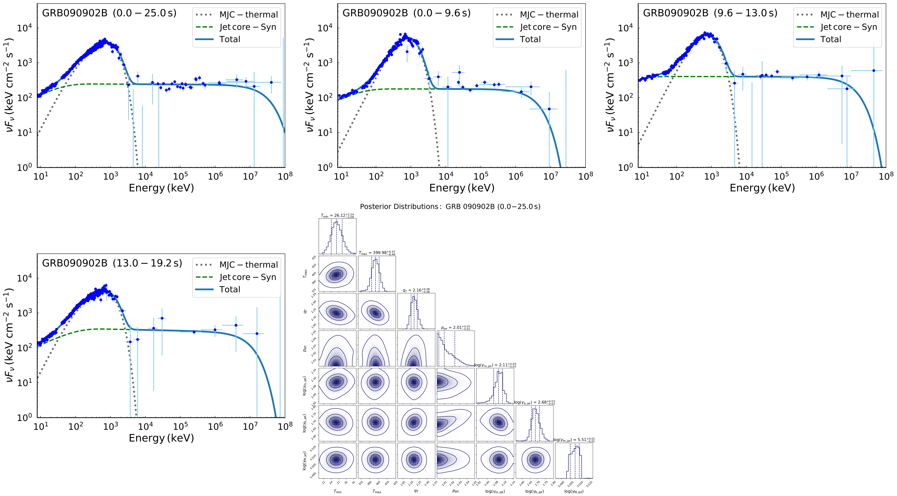
图注：Observed time-integrated and time-resolved spectra of GRB 090902B and the best-fit model spectra ({\(\em\) left and middle panels}). Dashed and dotted lines denote the jet-core and MJC emission components, and the solid line shows the total emission. The {\(\em\) right panel} illustrates the posterior distributions of the model parameters derived from the MCMC fit to the time-integrated spectrum.
对应解读：对应“GRB 090902B 时间积分谱拟合图”“GRB 090902B 时间分辨谱或参数演化图”以及模型拟合段落中关于总模型、喷流核心同步成分、MJC 准热成分和 MCMC 参数后验的讨论。
入选理由：这是支撑本文核心结论的最关键图：同时给出 GRB 090902B 的时间积分和时间分辨谱、最佳拟合总模型，以及喷流核心与 MJC 两个物理成分的分解线。它最直接检验准热峰是否由 MJC 成分解释、非热尾是否由喷流核心同步辐射连接，并通过右侧参数后验展示拟合参数约束，比单纯参数扫描图更能支撑日报中的模型拟合解读。
来源与置信度：\(arxiv_source\)；high；\(arxiv_source\) / sample7.tex:figure[2]
Fig01
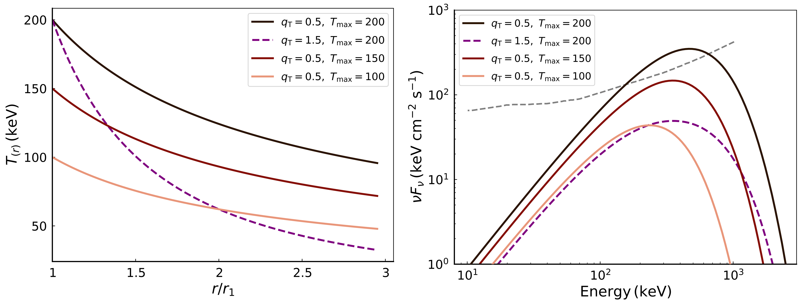
图注：Temperature profiles of electrons in the MJC region for different parameter sets ({\(\em\) Left panel}) and the corresponding emission spectra ({\(\em\) Right panel}). The gray dashed line indicates the {\(\em\) Fermi}/GBM flux threshold.
对应解读：对应“\\(T_{\\max}\\) 参数扫描谱图”“\\(q_T\\) 参数扫描谱图”以及关键图表导读中关于温度剖面、峰值通量和准热谱宽的说明。
入选理由：该图同时展示 MJC 区电子温度径向剖面和对应辐射谱，是理解 \\(T_{\\max}\\) 与 \\(q_T\\) 如何控制准热成分峰能、峰值通量和谱宽的基础图。它比只看最终拟合图更适合解释模型物理机制，且包含 GBM flux threshold，可判断不同参数组合产生的准热成分是否可观测。
来源与置信度：\(arxiv_source\)；high；\(arxiv_source\) / sample7.tex:figure[1]
Fig04
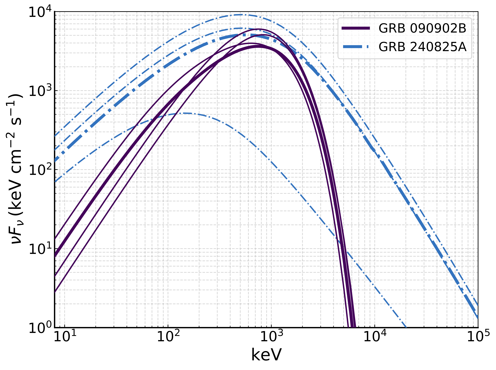
图注：Spectral profiles of emission in the MJC region of GRB 090902B (thermalized dominated) and GRB 240825A (shear-accelerated dominated). Thick and thin lines denote time-integrated and time-resolved spectra, respectively.
对应解读：对应“GRB 240825A 对比图”和关键图表导读中关于弱散射热化主导与强散射剪切加速主导谱宽差异的讨论。
入选理由：该图直接比较 GRB 090902B 的 thermalized-dominated MJC 谱与 GRB 240825A 的 shear-accelerated-dominated MJC 谱，并区分时间积分与时间分辨谱，是检验作者关于散射状态控制谱宽和谱多样性主张的最佳候选图。
来源与置信度：\(arxiv_source\)；high；\(arxiv_source\) / sample7.tex:figure[4]
Fig03
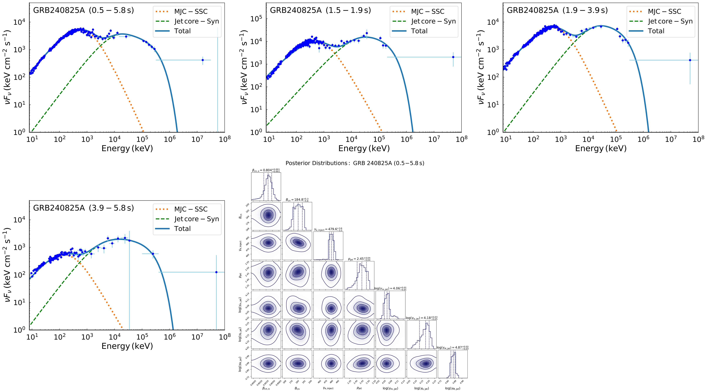
图注：Similar to Figure~\(\ref{fig:090902B}\) but for GRB 240825A.
对应解读：对应“GRB 240825A 对比图”以及模型拟合段落中关于强散射剪切加速场景对 GRB 240825A 谱拟合的说明。
入选理由：该图与 Fig02 类似，但对象是 GRB 240825A，可展示强散射剪切加速主导模型在另一事件中的时间积分和时间分辨谱拟合及参数后验。其重要性低于 Fig04 的直接谱宽对比，但仍能支撑跨事件比较和模型适用性的讨论。
来源与置信度：\(arxiv_source\)；high；\(arxiv_source\) / sample7.tex:figure[3]
强相关工作
这篇工作与 GRB 光球辐射、多温黑体和次光球耗散模型直接相关。相似研究通常从热峰出发，把 GRB 090902B 解释为强光球成分加额外非热尾；本文的不同点是把热化区定位到结构化喷流的混合喷流—茧区域，并强调弱散射下剪切加速效率不足会导向准热电子分布。建议检索关键词包括 “GRB 090902B photospheric emission”, “multi-color blackbody gamma-ray bursts”, “subphotospheric dissipation prompt emission”。
它也与纯同步辐射或磁重联提示辐射模型存在张力。同步模型擅长解释宽非热谱和高能尾，但很难自然产生非常窄且明亮的热峰；光球模型擅长解释窄峰，却必须解释为何同时存在强非热成分。本文用空间分区缓解这一矛盾，但也引入了喷流结构和混合区参数的不确定性。建议检索关键词包括 “GRB prompt synchrotron line of death”, “structured jet cocoon prompt emission”, “shear acceleration gamma-ray burst jets”。
在更广背景中，结构化喷流和茧的研究受到 GRB 170817A 余辉建模和长暴喷流穿星模拟推动。本文可被看作把这些几何和动力学思想应用到提示辐射谱解释中的一个半解析尝试。若要追踪相反观点，应比较经验 Band 加黑体拟合、纯光球耗散模型、Poynting 主导磁重联模型以及时间积分效应导致谱展宽的工作。
相似工作：
- https://arxiv.org/abs/2605.25147
- https://arxiv.org/abs/0909.2470
- https://arxiv.org/abs/1003.3885
基础理论 / 方法工作：
- https://arxiv.org/abs/astro-ph/9210035
- https://arxiv.org/abs/astro-ph/9904363
- https://arxiv.org/abs/astro-ph/0503321
- https://arxiv.org/abs/1104.3725
相反观点 / 张力线索：
- https://arxiv.org/abs/astro-ph/9801258
- https://arxiv.org/abs/0807.0509
- https://arxiv.org/abs/1009.5305
说明
评分由 LLM 给出初评，再由本地阈值策略过滤；IACT、TeV 伽马射线和高能中微子天文学按重点方向处理。